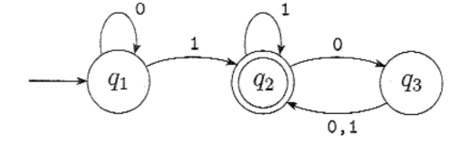

INFORMÁTICA TEÓRICA¶
Referência
Material baseado no curso de Informática Teórica (Teoria da Computação) do CIn/UFPE — cin.ufpe.br/~if689/1-2025, seguindo de perto o livro Introduction to the Theory of Computation de Michael Sipser (pág. 305 a 323 para a parte de complexidade).
Este material percorre a teoria da computação clássica: o que é um algoritmo e o que significa um problema ser "resolvível"; os modelos de computação cada vez mais poderosos (autômatos finitos, autômatos com pilha, máquinas de Turing); e as duas grandes perguntas que a área procura responder — o que pode ser computado (computabilidade/decidibilidade) e o que pode ser computado de forma eficiente (complexidade).
Conceitos Iniciais¶
Antes de entrar nos modelos formais, vale fixar o vocabulário que vai aparecer o tempo todo no resto da disciplina.
Um método é um conjunto organizado de passos ou estratégias usado para resolver um problema ou alcançar um objetivo. Um algoritmo é a versão precisa dessa ideia: uma sequência finita, precisa e ordenada de instruções que leva à solução de um problema específico. Formalmente, é um método eficaz expresso como uma lista finita de instruções bem definidas para o cálculo de uma função — a partir de um estado inicial e de uma entrada, as instruções descrevem uma computação que avança por um número finito de estados sucessivos bem definidos até produzir uma saída e parar em um estado final.
Algoritmo como máquina de estados
Essa definição já antecipa o fio condutor de toda a disciplina: um algoritmo pode ser visto como uma máquina de estados. Os modelos que vamos estudar (autômatos finitos, autômatos com pilha, máquinas de Turing) são justamente formalizações cada vez mais poderosas dessa ideia.
Solubilidade de problemas¶
Um problema é solúvel quando existe um método ou algoritmo que chega a uma conclusão para ele, e é insolúvel quando não existe nenhum método ou algoritmo capaz de produzir uma resposta. Resolver um problema matemático, nesse sentido, é aplicar um método/algoritmo para encontrar uma solução, caso ela exista.
Um caso particularmente importante é o dos problemas de decisão: problemas cuja resposta é simplesmente sim ou não. Foi justamente a definição de Alan Turing para as máquinas de Turing que permitiu uma definição exata de decidibilidade — e, com ela, a possibilidade de demonstrar que certos problemas são, de fato, indecidíveis. Isso ajudou a formalizar matematicamente o próprio conceito de algoritmo.
| Tipo de problema de decisão | Definição |
|---|---|
| Decidível | É um problema de decisão e é solúvel: existe um algoritmo que sempre termina com a resposta correta (sim/não). |
| Indecidível | É um problema de decisão e é insolúvel: não existe nenhum algoritmo que resolva o problema para todas as entradas. |
Dois problemas históricos indecidíveis
- Entscheidungsproblem: existe um algoritmo que, dado qualquer enunciado matemático formal em lógica de primeira ordem, determina se ele é verdadeiro ou falso?
- 10º problema de Hilbert: existe um algoritmo que decide se uma equação diofantina tem solução (raízes inteiras)?
Ambos acabaram se revelando indecidíveis — e a própria tentativa de resolvê-los é o que motivou Church e Turing a formalizar o conceito de algoritmo.
Linguagens Regulares¶
Autômatos finitos¶
Um autômato finito é um modelo matemático de computador: uma máquina abstrata com um número finito de estados. É o modelo mais simples que vamos estudar, e serve de base para tudo que vem depois.
Formalmente, um autômato finito é definido por uma 5-upla \(M = (Q, \Sigma, \delta, q_0, F)\), onde:
| Componente | Significado |
|---|---|
| \(Q\) | conjunto finito de estados — as diferentes configurações em que a máquina pode se encontrar |
| \(\Sigma\) | alfabeto finito de símbolos que o autômato pode ler na cadeia de entrada |
| \(\delta\) | função de transição, \(\delta: Q \times \Sigma \rightarrow Q\) — determina para qual estado a máquina vai, dado o estado atual e o símbolo lido |
| \(q_0\) | estado inicial, \(q_0 \in Q\) |
| \(F\) | conjunto de estados finais/de aceitação, \(F \subseteq Q\) — se, ao terminar de ler a entrada, o autômato estiver em um desses estados, a cadeia é aceita |
Diagrama de estados¶
A forma usual de representar um autômato é por um diagrama de estados: o estado inicial \(q_0\) é indicado por uma seta vinda "do nada", os estados de aceitação são desenhados com círculo duplo, e cada seta entre estados (rotulada por um símbolo do alfabeto) é chamada de transição. Se, ao final da leitura, a cadeia não termina em um estado de aceitação, ela é rejeitada.
A representação do autômato \(M_1\) a seguir ilustra essas convenções: \(q_1\) (inicial) tem um laço em 0 e uma transição em 1 para \(q_2\) (estado de aceitação, círculo duplo); \(q_2\) tem um laço em 1 e uma transição em 0 para \(q_3\); \(q_3\) tem transições em 0 e 1 de volta para \(q_2\).
Sua descrição formal é \(M_1 = (Q, \Sigma, \delta, q_0, F)\), com \(Q = \{q_1, q_2, q_3\}\), \(\Sigma = \{0, 1\}\), \(q_0 = q_1\), \(F = \{q_2\}\), e função de transição:
| \(\delta\) | 0 | 1 |
|---|---|---|
| \(q_1\) | \(q_1\) | \(q_2\) |
| \(q_2\) | \(q_3\) | \(q_2\) |
| \(q_3\) | \(q_2\) | \(q_2\) |
Diagrama de estados de \(M_1\) (foto do livro-texto)


Linguagem de um autômato¶
Se \(A\) é o conjunto de todas as cadeias que uma máquina \(M\) aceita, dizemos que \(A\) é a linguagem de \(M\), escrito \(L(M) = A\), e que \(M\) reconhece (ou aceita) \(A\).
Aceitar cadeias vs. reconhecer linguagens
Uma máquina aceita várias cadeias, mas reconhece apenas uma linguagem. Mesmo que uma máquina não aceite cadeia alguma, ela ainda reconhece uma linguagem — o conjunto vazio.
Formalmente: seja \(M = (Q, \Sigma, \delta, q_0, F)\) e seja \(w = w_1 w_2 \ldots w_n\) uma cadeia com cada \(w_i \in \Sigma\). Dizemos que \(M\) aceita \(w\) se existe uma sequência de estados \(r_0, r_1, \ldots, r_n \in Q\) tal que:
- \(r_0 = q_0\) — a máquina começa no estado inicial;
- \(\delta(r_i, w_{i+1}) = r_{i+1}\) para \(i = 0, \ldots, n-1\) — a máquina avança de estado em estado conforme a função de transição;
- \(r_n \in F\) — a máquina aceita se termina em um estado de aceitação.
\(M\) reconhece a linguagem \(A\) se \(A = \{w \mid M \text{ aceita } w\}\). Uma linguagem é chamada de linguagem regular se algum autômato finito a reconhece.
Exemplo
A linguagem reconhecida é \(A = \{w \mid w \text{ contém pelo menos um } 1 \text{ e um número par de } 0\text{'s segue após o último } 1 \text{ da cadeia}\}\). O diagrama abaixo é o mesmo autômato \(M_1\) já descrito acima.
Diagrama de estados

Exemplos de autômatos¶
1. \(M_2\) — aceita cadeias que terminam em 1.
| 0 | 1 | |
|---|---|---|
| \(q_1\) | \(q_1\) | \(q_2\) |
| \(q_2\) | \(q_1\) | \(q_2\) |
\(Q = \{q_1, q_2\}\), \(\Sigma = \{0,1\}\), \(q_0 = q_1\), \(F = \{q_2\}\). Linguagem: \(A = \{w \mid w \text{ termina em } 1\}\).
Diagrama de estados de \(M_2\)

2. \(M_3\) — aceita cadeias que terminam em 0 (ou a cadeia vazia).
A tabela de transição tem exatamente a mesma forma de \(M_2\), mas com \(F = \{q_1\}\). Linguagem: \(A = \{w \mid w \text{ termina em } 0 \text{ ou } w = \varepsilon\}\).
Diagrama de estados de \(M_3\)

3. \(M_4\) — aceita cadeias que começam e terminam com o mesmo símbolo.
\(Q = \{q_1, q_2, s, r_1, r_2\}\), \(\Sigma = \{a, b\}\), \(q_0 = s\), \(F = \{q_1, r_1\}\):
| a | b | |
|---|---|---|
| \(q_1\) | \(q_1\) | \(q_2\) |
| \(q_2\) | \(q_1\) | \(q_2\) |
| \(s\) | \(q_1\) | \(r_1\) |
| \(r_1\) | \(r_2\) | \(r_1\) |
| \(r_2\) | \(r_2\) | \(r_1\) |
Diagrama de estados de \(M_4\)

4. \(M_5\) — um "contador módulo 3" com um símbolo especial de reset.
\(Q = \{q_0, q_1, q_2\}\), \(\Sigma = \{0, 1, 2, \langle\text{RESET}\rangle\}\), \(F = \{q_0\}\):
| 0 | 1 | 2 | ⟨RESET⟩ | |
|---|---|---|---|---|
| \(q_0\) | \(q_0\) | \(q_1\) | \(q_2\) | \(q_0\) |
| \(q_1\) | \(q_1\) | \(q_2\) | \(q_0\) | \(q_0\) |
| \(q_2\) | \(q_2\) | \(q_0\) | \(q_1\) | \(q_0\) |
As regras gerais por trás dessa tabela são: \(\delta_i(q_j, 0) = q_j\); \(\delta_i(q_j, 1) = q_k\) onde \(k = j+1 \bmod i\); \(\delta_i(q_j, 2) = q_k\) onde \(k = j + 2 \bmod i\); e \(\delta_i(q_j, \langle\text{RESET}\rangle) = q_0\). A linguagem reconhecida é \(A = \{w \mid\) a soma dos símbolos de \(w\) é \(0 \bmod 3\), exceto que ⟨RESET⟩ zera o contador\(\}\).
Diagrama de estados de \(M_5\)

Como projetar um autômato finito¶
Projetar um autômato segue um roteiro de três passos:
- Entender o alfabeto — quais símbolos a cadeia de entrada pode conter.
- Deduzir os estados possíveis (\(Q\)) — a partir do alfabeto, descobrir quais "situações" a máquina precisa distinguir; isso já revela quais estados são de aceitação e qual é o estado inicial (geralmente aquele em que a máquina se encontraria ao ler a cadeia vazia).
- Mapear as funções de transição — para cada estado e cada símbolo, decidir para onde a máquina vai.
Exemplo 1 — número ímpar de 1's
Seja \(\Sigma = \{0, 1\}\) e considere a linguagem das cadeias \(w\) aceitas se e somente se o número de 1's em \(w\) for ímpar. Como o número de 0's não influencia a aceitação, os únicos estados necessários são \(q_{par}\) e \(q_{ímpar}\), com \(q_{ímpar}\) sendo o estado de aceitação. Como a cadeia vazia tem zero 1's (um número par), o estado inicial é \(q_{par}\). Nas transições, ler um 0 nunca muda de estado; ler um 1 sempre alterna entre os dois estados:
| 0 | 1 | |
|---|---|---|
| \(q_{par}\) | \(q_{par}\) | \(q_{ímpar}\) |
| \(q_{ímpar}\) | \(q_{ímpar}\) | \(q_{par}\) |
\(q_0 = q_{par}\), \(F = \{q_{ímpar}\}\).
Diagrama de estados

Exemplo 2 — cadeias que contêm '001'
Com \(\Sigma = \{0, 1\}\), queremos aceitar cadeias que contenham a subcadeia "001" em algum ponto. Aqui é preciso rastrear o progresso do casamento do padrão: ainda não viu nada do padrão (\(q\)), acabou de ver "0" (\(q_0\)), acabou de ver "00" (\(q_{00}\)), e acabou de ver "001" (\(q_{001}\), estado de aceitação, que passa a ser absorvente). O estado inicial é \(q\):
| 0 | 1 | |
|---|---|---|
| \(q\) | \(q_0\) | \(q\) |
| \(q_0\) | \(q_{00}\) | \(q\) |
| \(q_{00}\) | \(q_{00}\) | \(q_{001}\) |
| \(q_{001}\) | \(q_{001}\) | \(q_{001}\) |
\(F = \{q_{001}\}\).
Diagrama de estados

Operações regulares¶
As operações regulares servem para estudar propriedades das linguagens regulares e para construir linguagens novas a partir de linguagens já conhecidas. Dadas linguagens \(A\) e \(B\):
| Operação | Definição |
|---|---|
| União | \(A \cup B = \{x \mid x \in A \text{ ou } x \in B\}\) |
| Concatenação | \(A \circ B = \{xy \mid x \in A \text{ e } y \in B\}\) |
| Estrela (fecho de Kleene) | \(A^* = \{x_1 x_2 \ldots x_k \mid k \geq 0 \text{ e cada } x_i \in A\}\) |
Exemplo numérico
Suponha que o alfabeto \(\Sigma\) seja o alfabeto padrão de 26 letras \(\{a, b, \ldots, z\}\). Se \(A = \{\text{legal}, \text{ruim}\}\) e \(B = \{\text{garoto}, \text{garota}\}\), então:
- \(A \cup B = \{\text{legal}, \text{ruim}, \text{garoto}, \text{garota}\}\)
- \(A \circ B = \{\text{legalgaroto}, \text{legalgarota}, \text{ruimgaroto}, \text{ruimgarota}\}\)
- \(A^* = \{\varepsilon, \text{legal}, \text{ruim}, \text{legallegal}, \text{legalruim}, \text{ruimlegal}, \text{ruimruim}, \text{legallegallegal}, \ldots\}\)
Foto do quadro

Fecho sob uma operação¶
Uma coleção de objetos é fechada sob uma operação se aplicar essa operação a membros da coleção sempre produz um objeto que ainda está na coleção.
Example
O conjunto dos naturais é fechado sob a multiplicação, mas não sob a divisão: \(1\) e \(2\) são naturais, mas \(1/2\) não é.
Teorema. A classe das linguagens regulares é fechada sob união: se \(A_1\) e \(A_2\) são regulares, \(A_1 \cup A_2\) também é.
Ideia da prova. Se \(A_1\) e \(A_2\) são regulares, existem autômatos \(M_1\) e \(M_2\) que as reconhecem. Para reconhecer \(A_1 \cup A_2\), construímos um autômato \(M\) que aceita a entrada exatamente quando \(M_1\) ou \(M_2\) aceitaria. A dificuldade é que não é possível "simular \(M_1\) e depois \(M_2\)": é preciso simular as duas simultaneamente, de modo que seus estados fiquem interligados passo a passo.
Prova. Sejam \(M_1 = (Q_1, \Sigma, \delta_1, q_1, F_1)\) reconhecendo \(A_1\) e \(M_2 = (Q_2, \Sigma, \delta_2, q_2, F_2)\) reconhecendo \(A_2\). Construímos \(M = (Q, \Sigma, \delta, q, F)\) como segue:
- Estados: \(Q = \{(r_1, r_2) \mid r_1 \in Q_1, r_2 \in Q_2\} = Q_1 \times Q_2\), o produto cartesiano — o conjunto de todos os pares de estados.
- Alfabeto: como \(M_1\) e \(M_2\) compartilham o alfabeto, \(\Sigma\) permanece o mesmo (se fossem diferentes, \(\Sigma = \Sigma_1 \cup \Sigma_2\)).
- Transição: para cada par \((r_1, r_2) \in Q\) e cada \(a \in \Sigma\), \(\delta((r_1,r_2), a) = (\delta_1(r_1, a), \delta_2(r_2, a))\) — \(M\) avança as duas "simulações" em paralelo.
- Estado inicial: \(q = (q_1, q_2)\).
- Estados de aceitação: \(F = \{(r_1, r_2) \mid r_1 \in F_1 \text{ ou } r_2 \in F_2\}\), equivalente a \(F = (F_1 \times Q_2) \cup (Q_1 \times F_2)\) — ou seja, \(M\) aceita se \(M_1\) ou \(M_2\) chegou a um estado de aceitação, não importando onde a outra parou.
Por que não \(F = F_1 \times F_2\)?
Se definíssemos os estados de aceitação de \(M\) como \(F_1 \times F_2\), \(M\) só aceitaria quando ambas as máquinas aceitassem ao mesmo tempo — isso provaria o fecho sob interseção, não sob união.
Com essa construção, provamos o fecho sob união. A classe das linguagens regulares é também fechada sob concatenação — a ideia é semelhante, mas em vez de aceitar quando \(M_1\) ou \(M_2\) aceita, \(M\) precisa aceitar quando a entrada puder ser quebrada em duas partes, a primeira aceita por \(M_1\) e a segunda por \(M_2\). O obstáculo é que \(M\) não sabe onde fazer esse corte — e resolver esse problema exige introduzir o não-determinismo.
Não-determinismo¶
Em uma computação determinística, estando em um estado e lendo o próximo símbolo, sempre sabemos exatamente qual é o próximo estado. Em uma máquina não-determinística, várias escolhas podem existir para o próximo estado em qualquer ponto da computação. O não-determinismo é uma generalização do determinismo: todo autômato finito determinístico (AFD) é automaticamente um autômato finito não-determinístico (AFN).
AFD vs. AFN¶
| Aspecto | AFD | AFN |
|---|---|---|
| Transições por símbolo | Exatamente uma seta de saída para cada símbolo do alfabeto, em cada estado | Pode ter zero, uma ou várias setas para o mesmo símbolo |
| Rótulos das setas | Apenas símbolos do alfabeto | Símbolos do alfabeto ou \(\varepsilon\) (transição sem consumir entrada) |
| Forma da computação | Uma única linha (uma "thread") | Uma árvore de possibilidades, com vários ramos computando em paralelo |
Exemplos de diagramas de AFD e AFN (fotos do livro-texto)


Comparação visual entre um AFN e o AFD equivalente para a mesma linguagem:
AFN e AFD equivalente (fotos do livro-texto)


Definição formal de AFN¶
Um AFN é uma 5-upla \((Q, \Sigma, \delta, q_0, F)\), onde a única diferença estrutural para o AFD está na função de transição:
Aqui, \(\Sigma_\varepsilon = \Sigma \cup \{\varepsilon\}\), e \(\mathcal{P}(Q)\) é o conjunto das partes de \(Q\) (o conjunto de todos os subconjuntos de \(Q\)) — ou seja, a transição pode levar a um conjunto de estados possíveis, não a um único estado.
Exemplo de AFN e sua função de transição (fotos do livro-texto)


Formalmente, \(N\) aceita \(w\) se podemos escrever \(w = y_1 y_2 \ldots y_n\) com cada \(y_i \in \Sigma_\varepsilon\), e existe uma sequência de estados \(r_0, \ldots, r_n \in Q\) tal que:
- \(r_0 = q_0\);
- \(r_{i+1} \in \delta(r_i, y_{i+1})\) para \(i = 0, \ldots, n-1\) — ou seja, \(r_{i+1}\) é um dos próximos estados permitidos;
- \(r_n \in F\).
Uma linguagem é regular se, e somente se, algum AFN a reconhece.
Equivalência entre AFN e AFD¶
Duas máquinas são equivalentes se reconhecem a mesma linguagem. O resultado central aqui é:
Teorema. Todo AFN tem um AFD equivalente.
Ideia da prova. Se o AFN tem \(k\) estados, ele tem \(2^k\) subconjuntos de estados possíveis. Cada subconjunto corresponde a uma das "configurações simultâneas" que o AFD precisa memorizar — portanto, o AFD equivalente terá \(2^k\) estados (um para cada subconjunto).
Prova. Seja \(N = (Q, \Sigma, \delta, q_0, F)\) um AFN que reconhece \(A\). Construímos \(M = (Q', \Sigma, \delta', q_0', F')\) que reconhece \(A\).
Caso sem setas \(\varepsilon\):
- \(Q' = \mathcal{P}(Q)\) — todo estado de \(M\) é um subconjunto de estados de \(N\).
- \(\delta'(R, a) = \{q \in Q \mid q \in \delta(r, a) \text{ para algum } r \in R\}\) — ao ler \(a\) no estado \(R\), \(M\) olha para onde \(a\) leva cada estado de \(R\) e toma a união de todos esses destinos.
- \(q_0' = \{q_0\}\).
- \(F' = \{R \in Q' \mid R \text{ contém algum estado de aceitação de } N\}\).
Ilustração da construção por subconjuntos

Caso com setas \(\varepsilon\): além do que já foi descrito, define-se \(E(R)\) como a coleção de estados atingíveis a partir de \(R\) seguindo apenas setas \(\varepsilon\) (incluindo os próprios membros de \(R\)):
A função de transição de \(M\) passa a aplicar o fecho-\(\varepsilon\) após cada passo: \(\delta'(R, a) = \{q \in Q \mid q \in E(\delta(r,a)) \text{ para algum } r \in R\}\). O estado inicial também precisa ser "fechado": \(q_0' = E(\{q_0\})\).
Conversão passo a passo: de AFN para AFD¶
Tomando o AFN \(N_4\) como exemplo:
Diagrama de estados de \(N_4\)

1 — Definir formalmente o AFN. \(Q = \{1, 2, 3\}\), \(\Sigma = \{a, b\}\), \(q_0 = 1\), \(F = \{1\}\). Quando um estado não tem setas \(\varepsilon\) explícitas, convencionamos que a transição \(\varepsilon\) desse estado é ele mesmo:
| δ | a | b | ε |
|---|---|---|---|
| 1 | ∅ | {2} | {3} |
| 2 | {2, 3} | {3} | {2} |
| 3 | {1} | ∅ | {3} |
2 — Definir formalmente o AFD. \(Q'\) contém todos os subconjuntos de \(\{1,2,3\}\), um total de \(2^3 = 8\) estados: \(Q' = \{\emptyset, \{1\}, \{2\}, \{3\}, \{1,2\}, \{1,3\}, \{2,3\}, \{1,2,3\}\}\). Primeiro, montamos \(\delta'\) sem aplicar o fecho-\(\varepsilon\) (quando o resultado de uma transição envolve união de conjuntos, basta unir; quando dá \(\emptyset\), ignora-se):
| δ' | a | b |
|---|---|---|
| ∅ | ∅ | ∅ |
| {1} | ∅ | {2} |
| {2} | {2, 3} | {3} |
| {3} | {1} | ∅ |
| {1, 2} | {2, 3} | {2, 3} |
| {1, 3} | {1} | {2} |
| {2, 3} | {1, 2, 3} | {3} |
| {1, 2, 3} | {1, 2, 3} | {2, 3} |
Agora aplicamos o ECLOSE(): como \(\delta(\{3\}, a) = \{1\}\) e \(E(\{1\}) = \{1, 3\}\), toda ocorrência de \(\{1\}\) nas transições passa a incluir o \(\{3\}\) também (já que \(E(\{2\}) = \{2\}\) e \(E(\{3\}) = \{3\}\), essas linhas não mudam):
| δ' | a | b |
|---|---|---|
| ∅ | ∅ | ∅ |
| {1} | ∅ | {2} |
| {2} | {2, 3} | {3} |
| {3} | {1, 3} | ∅ |
| {1, 2} | {2, 3} | {2, 3} |
| {1, 3} | {1, 3} | {2} |
| {2, 3} | {1, 2, 3} | {3} |
| {1, 2, 3} | {1, 2, 3} | {2, 3} |
O novo estado inicial é \(q_0' = E(\{1\}) = \{1, 3\}\), e os estados finais são todos os que contêm o estado final original: \(F' = \{\{1\}, \{1,2\}, \{1,3\}, \{1,2,3\}\}\).
Diagrama do AFD resultante (antes de eliminar estados)

3 — Eliminar estados desnecessários. Primeiro, removem-se os estados inalcançáveis — aqueles que nunca aparecem como destino de nenhuma transição (nas colunas \(a\) e \(b\) de nenhum outro estado). Nesse exemplo, \(\{1\}\) e \(\{1,2\}\) nunca são alcançados e podem ser eliminados:
| δ' | a | b |
|---|---|---|
| ∅ | ∅ | ∅ |
| {1} | ∅ | {2} |
| {2} | {2, 3} | {3} |
| {3} | {1, 3} | ∅ |
| {1, 2} | {2, 3} | {2, 3} |
| {1, 3} | {1, 3} | {2} |
| {2, 3} | {1, 2, 3} | {3} |
| {1, 2, 3} | {1, 2, 3} | {2, 3} |
Depois, removem-se estados que não têm saídas úteis e não são finais — por exemplo, um estado não final cujas únicas transições apontam para ele mesmo, formando um loop isolado (no exemplo, o estado \(\emptyset\), que só transiciona para si mesmo em \(a\) e \(b\), é mantido como "estado morto" explícito). O AFD final, já reduzido:
| δ' | a | b |
|---|---|---|
| {1,3} | {1,3} | {2} |
| {2} | {2,3} | {3} |
| {3} | {1,3} | ∅ |
| {2,3} | {1,2,3} | {3} |
| {1,2,3} | {1,2,3} | {2,3} |
| ∅ | ∅ | ∅ |
com \(q_0' = \{1,3\}\) e \(F' = \{\{1,3\}, \{1,2,3\}\}\).
Diagrama de estados do AFD final

Fecho sob as operações regulares (via não-determinismo)¶
Com o AFN em mãos, podemos provar de forma muito mais direta que a classe das linguagens regulares é fechada sob união, concatenação e estrela.
União. Dadas as linguagens regulares \(A_1\) e \(A_2\), tomamos os AFNs \(N_1\) e \(N_2\) que as reconhecem e os combinamos em um novo AFN \(N\): um novo estado inicial ramifica, via setas \(\varepsilon\), para os estados iniciais de \(N_1\) e \(N_2\) — a nova máquina "adivinha" não-deterministicamente qual das duas aceitaria a entrada.
Prova. Suponha que \(N_1 = (Q_1, \Sigma, \delta_1, q_1, F_1)\) reconheça \(A_1\), e que \(N_2 = (Q_2, \Sigma, \delta_2, q_2, F_2)\) reconheça \(A_2\). Construa \(N = (Q, \Sigma, \delta, q_0, F)\) para reconhecer \(A_1 \cup A_2\):
- \(Q = \{q_0\} \cup Q_1 \cup Q_2\) — todos os estados de \(N_1\) e \(N_2\), mais um novo estado inicial.
- \(F = F_1 \cup F_2\) — \(N\) aceita se \(N_1\) ou \(N_2\) aceitaria.
- \(\delta\) definida de modo que, para qualquer \(q \in Q\) e \(a \in \Sigma_\varepsilon\):
Diagrama e prova formal (foto do livro-texto)


Concatenação. Tomamos \(N_1\) e \(N_2\) e os combinamos: o estado inicial de \(N\) é o de \(N_1\); os estados de aceitação de \(N_1\) ganham setas \(\varepsilon\) extras que ramificam não-deterministicamente para \(N_2\) sempre que \(N_1\) estiver em um estado de aceitação (sinalizando que encontrou um prefixo da entrada em \(A_1\)); os estados de aceitação de \(N\) são apenas os de \(N_2\).
Prova. Suponha que \(N_1 = (Q_1, \Sigma, \delta_1, q_1, F_1)\) reconheça \(A_1\), e que \(N_2 = (Q_2, \Sigma, \delta_2, q_2, F_2)\) reconheça \(A_2\). Construa \(N = (Q, \Sigma, \delta, q_1, F_2)\) para reconhecer \(A_1 \circ A_2\):
- \(Q = Q_1 \cup Q_2\).
- O estado inicial é o mesmo de \(N_1\).
- \(F = F_2\).
- \(\delta\) definida de modo que, para qualquer \(q \in Q\) e \(a \in \Sigma_\varepsilon\):
Diagrama e prova formal (foto do livro-texto)


Estrela. Tomamos \(N_1\) para \(A_1\) e o modificamos para reconhecer \(A_1^*\): a máquina resultante aceita quando a entrada puder ser quebrada em várias partes e \(N_1\) aceitar cada uma. Isso é obtido adicionando setas \(\varepsilon\) dos estados de aceitação de volta ao estado inicial, para que a máquina possa "recomeçar" após aceitar uma parte.
Como \(A_1^*\) sempre contém \(\varepsilon\), é preciso também garantir que a máquina aceite a cadeia vazia — mas simplesmente tornar o estado inicial antigo também de aceitação adicionaria cadeias indesejadas. A solução correta é criar um novo estado inicial, que é também de aceitação, com uma seta \(\varepsilon\) para o antigo estado inicial.
Prova. Suponha que \(N_1 = (Q_1, \Sigma, \delta_1, q_1, F_1)\) reconheça \(A_1\). Construa \(N = (Q, \Sigma, \delta, q_0, F)\) para reconhecer \(A_1^*\):
- \(Q = \{q_0\} \cup Q_1\).
- \(q_0\) é o novo estado inicial.
- \(F = \{q_0\} \cup F_1\).
- \(\delta\) definida de modo que, para qualquer \(q \in Q\) e \(a \in \Sigma_\varepsilon\):
Diagrama e prova formal (foto do livro-texto)


Expressões regulares¶
As operações regulares também servem para montar expressões que descrevem linguagens de forma compacta — as expressões regulares.
Example
A expressão \((0 \cup 1)0^*\) descreve as cadeias que começam por \(0\) ou \(1\), seguidas de qualquer número de \(0\)'s. Aqui, \(0 \cup 1\) é notação curta para \(\{0\} \cup \{1\}\), \(0^*\) para \(\{0\}^*\), e \((0 \cup 1)0^*\) para \((0 \cup 1) \circ 0^*\).
Imagem de referência

Dado \(\Sigma = \{0, 1\}\), \(\Sigma^*\) denota a linguagem de todas as cadeias sobre \(\Sigma\); \(\Sigma^*1\) denota todas as cadeias que terminam em \(1\); e \((0\Sigma^*) \cup (\Sigma^*1)\) descreve todas as cadeias que começam com \(0\) ou terminam com \(1\).
Precedência de operadores: estrela > concatenação > união, salvo uso de parênteses. Além disso, \(R^+ \equiv RR^*\) (\(R^*\) representa zero ou mais concatenações de \(R\), enquanto \(R^+\) exige pelo menos uma — e \(R^* = R^+ \cup \varepsilon\)), e \(R^k\) equivale à concatenação de \(k\) cópias de \(R\).
Definição formal. Dizemos que \(R\) é uma expressão regular se \(R\) for:
- \(a\) para algum \(a\) no alfabeto \(\Sigma\),
- \(\varepsilon\),
- \(\emptyset\),
- \((R_1 \cup R_2)\), onde \(R_1\) e \(R_2\) são expressões regulares,
- \((R_1 \circ R_2)\), onde \(R_1\) e \(R_2\) são expressões regulares, ou
- \((R_1^*)\), onde \(R_1\) é uma expressão regular.
Nos itens 1 e 2, as expressões regulares \(a\) e \(\varepsilon\) representam as linguagens \(\{a\}\) e \(\{\varepsilon\}\), respectivamente. No item 3, a expressão regular \(\emptyset\) representa a linguagem vazia. Nos itens 4, 5 e 6, as expressões representam as linguagens obtidas tomando-se a união ou concatenação das linguagens \(R_1\) e \(R_2\), ou a estrela da linguagem \(R_1\), respectivamente.
Definição formal (foto do livro-texto)

Algumas identidades úteis, que não são tão óbvias quanto parecem: \(R \cup \emptyset = R\) e \(R \circ \varepsilon = R\), mas \(R \cup \varepsilon\) pode não ser igual a \(R\) (se \(R = 0\), \(L(R) = \{0\}\) mas \(L(R \cup \varepsilon) = \{0, \varepsilon\}\)), e \(R \circ \emptyset\) pode não ser igual a \(R\) (se \(R = 0\), \(L(R \circ \emptyset) = \emptyset \neq \{0\}\)).
Equivalência entre expressões regulares e autômatos finitos¶
Teorema. Uma linguagem é regular se, e somente se, alguma expressão regular a descreve.
A prova se divide em duas direções.
(⇐) Se uma linguagem é descrita por uma expressão regular, então ela é regular.
Ideia. Mostramos como converter qualquer expressão regular \(R\) em um AFN que reconhece a mesma linguagem — e, como um AFN sempre reconhece uma linguagem regular, isso basta.
Prova. A conversão de \(R\) para um AFN \(N\) é feita por indução na estrutura de \(R\), com seis casos:
- \(R = a\) para algum \(a \in \Sigma\). Então \(L(R) = \{a\}\), e o AFN \(N = (\{q_1, q_2\}, \Sigma, \delta, q_1, \{q_2\})\) reconhece \(L(R)\), com \(\delta(q_1, a) = \{q_2\}\) e \(\delta(r, b) = \emptyset\) para \(r \neq q_1\) ou \(b \neq a\) — ou seja, uma única seta rotulada \(a\) do estado inicial ao estado de aceitação.
- \(R = \varepsilon\). Então \(L(R) = \{\varepsilon\}\), e o AFN \(N = (\{q_1\}, \Sigma, \delta, q_1, \{q_1\})\) reconhece \(L(R)\), onde \(\delta(r, b) = \emptyset\) para quaisquer \(r\) e \(b\) — um único estado, ao mesmo tempo inicial e de aceitação, sem nenhuma transição.
-
\(R = \emptyset\). Então \(L(R) = \emptyset\), e o AFN \(N = (\{q\}, \Sigma, \delta, q, \emptyset)\) reconhece \(L(R)\), onde \(\delta(r, b) = \emptyset\) para quaisquer \(r\) e \(b\) — um único estado inicial, sem nenhum estado de aceitação.
Diagramas dos casos base (fotos do livro-texto)


-
\(R = R_1 \cup R_2\) → usa-se a construção do fecho sob união.
- \(R = R_1 \circ R_2\) → usa-se a construção do fecho sob concatenação.
- \(R = R_1^*\) → usa-se a construção do fecho sob estrela.
Convertendo \((ab \cup a)^*\) em AFN
O procedimento começa das subexpressões menores e vai compondo as maiores. Vale notar que o AFN resultante nem sempre é o menor possível — a construção é sistemática, não otimizada.
Construção passo a passo (foto do livro-texto)

(⇒) Se uma linguagem é regular, então ela é descrita por alguma expressão regular.
Ideia. Como a linguagem é regular, ela é aceita por algum AFD; precisamos de um procedimento para converter AFDs em expressões regulares equivalentes. Para isso, introduzimos um novo tipo de autômato: o autômato finito não-determinístico generalizado (AFNG).
Um AFNG é como um AFN, mas suas setas de transição podem ser rotuladas por expressões regulares inteiras (não apenas símbolos do alfabeto e \(\varepsilon\)), e ele lê blocos de símbolos de entrada de uma vez, não necessariamente um por um. Por conveniência, exige-se que todo AFNG tenha um formato especial:
- o estado inicial tem setas saindo para todos os outros estados, mas nenhuma seta chegando a ele;
- existe um único estado de aceitação, com setas chegando de todos os outros estados, mas nenhuma saindo dele (e ele é diferente do estado inicial);
- com exceção desses dois, toda seta entre quaisquer dois estados (inclusive de um estado para ele mesmo) existe e é rotulada por uma expressão da linguagem.
Exemplo de AFNG no formato especial

Definição formal de AFNG. Um autômato finito não-determinístico generalizado é uma 5-upla \((Q, \Sigma, \delta, q_{início}, q_{aceita})\), onde:
- \(Q\) é o conjunto finito de estados;
- \(\Sigma\) é o alfabeto de entrada;
- \(\delta: (Q - \{q_{aceita}\}) \times (Q - \{q_{início}\}) \rightarrow \mathcal{R}\) é a função de transição;
- \(q_{início}\) é o estado inicial; e
- \(q_{aceita}\) é o estado de aceitação.
Definição formal (foto do livro-texto)

Aqui \(\mathcal{R}\) é a coleção de todas as expressões regulares sobre \(\Sigma\). Um AFNG aceita \(w \in \Sigma^*\) se \(w = w_1 w_2 \ldots w_k\) com cada \(w_i \in \Sigma^*\) e existe uma sequência de estados \(q_0, q_1, \ldots, q_k\) tal que \(q_0 = q_{início}\), \(q_k = q_{aceita}\) e, para cada \(i\), \(w_i \in L(R_i)\) onde \(R_i = \delta(q_{i-1}, q_i)\) é a expressão sobre a seta de \(q_{i-1}\) a \(q_i\).
Prova do teorema. Seja \(M\) o AFD para \(A\). Convertemos \(M\) em um AFNG \(G\) adicionando um novo estado inicial e um novo estado de aceitação, com as setas necessárias. Em seguida, usa-se o procedimento recursivo CONVERT(G), que toma um AFNG e retorna uma expressão regular equivalente:
- Seja \(k\) o número de estados de \(G\).
- Se \(k = 2\), \(G\) consiste de um estado inicial, um de aceitação e uma única seta rotulada por uma expressão \(R\) — retorna-se \(R\).
- Se \(k > 2\): selecionamos qualquer \(q_{rem} \in Q\) diferente de \(q_{início}\) e de \(q_{aceita}\), e seja \(G'\) o AFNG \((Q', \Sigma, \delta', q_{início}, q_{aceita})\), onde \(Q' = Q - \{q_{rem}\}\), e para qualquer \(q_i \in Q' - \{q_{aceita}\}\) e qualquer \(q_j \in Q' - \{q_{início}\}\) seja
para \(R_1 = \delta(q_i, q_{rem})\), \(R_2 = \delta(q_{rem}, q_{rem})\), \(R_3 = \delta(q_{rem}, q_j)\) e \(R_4 = \delta(q_i, q_j)\) — ou seja, escolhe-se um estado \(q_{rem}\) diferente do inicial e do de aceitação para remover, redirecionando as setas que passavam por ele através de novas expressões regulares que capturam todos os caminhos que antes passavam por \(q_{rem}\). Chama-se CONVERT recursivamente sobre o AFNG resultante \(G'\) (com \(k-1\) estados).
Definição formal da remoção de estado (foto do livro-texto)

Correção do algoritmo: prova-se por indução que CONVERT(G) é sempre equivalente a \(G\).
- Base (\(k=2\)): com apenas uma seta do início ao fim, a expressão que a rotula descreve exatamente as cadeias que levam \(G\) ao estado de aceitação.
- Passo indutivo: supondo o resultado válido para \(k-1\) estados, mostra-se que \(G\) e \(G'\) (após remover \(q_{rem}\)) reconhecem a mesma linguagem.
- Se \(G\) aceita \(w\) por um ramo que não passa por \(q_{rem}\), então \(G'\) também aceita \(w\), pois cada nova expressão em \(G'\) contém a antiga como parte de uma união.
- Se o ramo passa por \(q_{rem}\), a nova expressão entre os estados vizinhos a \(q_{rem}\) foi construída exatamente para descrever as cadeias que levavam de um a outro via \(q_{rem}\) — logo \(G'\) também aceita \(w\).
- Reciprocamente, se \(G'\) aceita \(w\), cada seta de \(G'\) descreve as cadeias que levam de um estado a outro em \(G\) (direta ou indiretamente via \(q_{rem}\)), logo \(G\) também aceita \(w\).
Como a hipótese de indução garante que a chamada recursiva sobre \(G'\) (com \(k-1\) estados) retorna uma expressão equivalente a \(G'\), e \(G'\) é equivalente a \(G\), o algoritmo e o teorema ficam provados.
Exemplos de conversão AFD → expressão regular
Exemplo 1. Partindo de um AFD de 2 estados (estado 1 inicial, estado 2 de aceitação, com \(\delta(1,a)=1\), \(\delta(1,b)=2\), \(\delta(2,a)=\delta(2,b)=2\)), aplica-se CONVERT removendo estados um a um até sobrar só o inicial \(s\) e o de aceitação \(a\): a cada remoção, a expressão da seta remanescente incorpora o laço do estado removido. O resultado final é a expressão regular \(a^*b(a \cup b)^*\).
Exemplo 2. Partindo de um AFD de 3 estados (1 inicial, 3 aceitação, com transições \(1\xrightarrow{a}2\), \(1\xrightarrow{b}3\), \(2\xrightarrow{a}3\), \(2\xrightarrow{b}2\), \(3\xrightarrow{a}2\), \(3\xrightarrow{b}1\)), o procedimento remove primeiro o estado 1, depois o estado 3, acumulando expressões cada vez mais complexas nas setas remanescentes entre \(s\) e \(a\) (passando por um estado intermediário rotulado 2/3), até restar uma única expressão:
Construção passo a passo (fotos do livro-texto)


Linguagens não-regulares¶
Nem toda linguagem pode ser reconhecida por um autômato finito — essas são chamadas de linguagens não-regulares.
A linguagem \(B = \{0^n1^n \mid n \geq 0\}\) não é regular (intuição)
Se tentarmos encontrar um AFD que reconheça \(B\), descobrimos que a máquina parece necessitar de lembrar quantos \(0\)'s foram vistos até então à medida que ela lê a entrada. Como o número de \(0\)'s não é limitado, a máquina teria de registrar um número ilimitado de possibilidades — mas ela não pode fazer isso com qualquer quantidade finita de estados.
Imagem de referência

Lema do bombeamento¶
O lema do bombeamento afirma que toda linguagem regular tem uma propriedade especial; se conseguirmos mostrar que uma linguagem não tem essa propriedade, temos a garantia de que ela não é regular. A propriedade é que toda cadeia da linguagem com comprimento suficiente pode ser "bombeada": ela contém uma parte que pode ser repetida qualquer número de vezes, permanecendo sempre na linguagem.
Definição formal. Se \(A\) é regular, existe um número \(p\) (o comprimento de bombeamento) tal que toda cadeia \(s \in A\) com \(|s| \geq p\) pode ser dividida em três partes, \(s = xyz\), satisfazendo:
- para cada \(i \geq 0\), \(xy^iz \in A\) (onde \(y^0 = \varepsilon\));
- \(|y| > 0\) (ou seja, \(x\) e \(z\) podem ser \(\varepsilon\), mas \(y \neq \varepsilon\));
- \(|xy| \leq p\) (as partes \(x\) e \(y\) juntas têm comprimento no máximo \(p\) — condição técnica, mas útil nas provas).
Ideia da prova. Seja \(M = (Q, \Sigma, \delta, q_1, F)\) o AFD que reconhece \(A\); fazemos \(p\) ser o número de estados de \(M\).
Prova. Se \(|s| < p\), o teorema vale por vacuidade. Suponha \(|s| = n \geq p\), \(s = s_1 s_2 \ldots s_n\), e seja \(r_1, \ldots, r_{n+1}\) a sequência de estados por onde \(M\) passa ao processar \(s\) (com \(r_{i+1} = \delta(r_i, s_i)\)).
Imagem de referência

Essa sequência tem \(n+1 \geq p+1\) elementos. Pelo princípio da casa dos pombos, entre os primeiros \(p+1\) elementos, dois precisam repetir o mesmo estado — sejam \(r_j\) e \(r_l\) (\(j < l \leq p+1\)) essa repetição. Definimos \(x = s_1 \ldots s_{j-1}\), \(y = s_j \ldots s_{l-1}\) e \(z = s_l \ldots s_n\).
Como \(x\) leva \(M\) de \(r_1\) a \(r_j\), \(y\) leva de \(r_j\) de volta a \(r_j\) (um "laço"), e \(z\) leva de \(r_j\) a \(r_{n+1} \in F\), \(M\) aceita \(xy^iz\) para qualquer \(i \geq 0\) — satisfazendo a condição 1. Como \(j \neq l\), \(|y| > 0\) (condição 2); e como \(l \leq p+1\), \(|xy| \leq p\) (condição 3).
Usando o lema para provar que uma linguagem não é regular:
- Suponha, por contradição, que a linguagem é regular.
- Pelo lema, existe um comprimento de bombeamento \(p\) tal que toda cadeia de comprimento \(\geq p\) pode ser bombeada.
- Exiba uma cadeia específica da linguagem, de comprimento \(\geq p\), que não pode ser bombeada.
- Mostre isso considerando todas as formas possíveis de dividir essa cadeia em \(xyz\) e, para cada uma, encontrando um \(i\) tal que \(xy^iz\) não pertence à linguagem — isso frequentemente exige separar em vários casos.
- A contradição mostra que a suposição inicial (regularidade) era falsa.
Exemplos de aplicação do lema do bombeamento
1. \(B = \{0^n1^n \mid n \geq 0\}\) não é regular. Prova por contradição: suponha \(B\) regular, com comprimento de bombeamento \(p\). Escolha \(s = 0^p1^p \in B\). Pelo lema, \(s = xyz\) com \(|xy|\leq p\), \(|y|>0\) e \(xy^iz \in B\) para todo \(i \geq 0\). Como \(|xy| \leq p\), \(y\) está inteiramente dentro do bloco de \(0\)'s. Três casos para o conteúdo de \(y\):
- \(y\) contém só \(0\)'s. Então \(xy^2z\) tem mais \(0\)'s que \(1\)'s — não está em \(B\). Contradição.
- \(y\) contém só \(1\)'s. Análogo, por simetria — contradição.
- \(y\) contém \(0\)'s e \(1\)'s. Como \(|xy|\leq p\), isso só pode ocorrer na fronteira — \(xy^2z\) teria \(0\)'s e \(1\)'s fora de ordem (um \(1\) antes de um \(0\)), não pertencendo a \(B\). Contradição.
Em todos os casos, \(xy^iz \notin B\) para algum \(i\) — contradição. Logo \(B\) não é regular. (Esse argumento se simplifica usando só a condição 3 do lema, eliminando diretamente os casos 2 e 3.)
2. \(C = \{w \mid w\) tem número igual de \(0\)'s e \(1\)'s\(\}\) não é regular. Tentativa ingênua: tomar o mesmo \(s=0^p1^p\) falha, pois escolhendo \(x=z=\varepsilon\) e \(y=0^p1^p\), a cadeia \(xy^iz\) sempre tem número igual de \(0\)'s e \(1\)'s — parece que \(s\) pode ser bombeada! A condição 3 salva a prova: como \(|xy|\leq p\), \(y\) só pode conter \(0\)'s, logo \(xy^2z\) tem mais \(0\)'s que \(1\)'s e não está em \(C\) — contradição.
(Cuidado: \(s=(01)^p\) seria uma escolha ruim — essa cadeia pode de fato ser bombeada, com \(x=\varepsilon\), \(y=01\), \(z=(01)^{p-1}\), mantendo sempre \(xy^iz \in C\). Nem toda cadeia serve para a prova.)
Alternativamente: se \(C\) fosse regular, \(C \cap 0^*1^*\) também seria (interseção de regulares é regular), mas \(C \cap 0^*1^* = B\), que já provamos não-regular — contradição.
3. \(F = \{ww \mid w \in \{0,1\}^*\}\) não é regular. Seja \(s = 0^p10^p1 \in F\). Pela condição 3, \(y\) contém apenas \(0\)'s (está nos primeiros \(p\) símbolos), logo \(xy^2z \notin F\) (o repeat quebra a simetria entre as duas metades) — contradição. (Escolher \(s=0^p0^p\) seria ruim: é membro de \(F\) mas pode ser bombeada sem violar nada.)
4. \(D = \{1^{n^2} \mid n \geq 0\}\) não é regular (linguagem unária, sobre quadrados perfeitos \(0,1,4,9,16,25,36,49,\ldots\)). Seja \(s = 1^{p^2}\). Pela condição 3, \(|xy|\leq p\), logo \(|y|\leq p\); como \(|xyz|=p^2\), temos \(|xy^2z| \leq p^2+p\). Mas \(p^2+p < (p+1)^2 = p^2+2p+1\), e pela condição 2, \(y\neq\varepsilon\), logo \(|xy^2z| > p^2\). Assim \(|xy^2z|\) fica estritamente entre os quadrados perfeitos consecutivos \(p^2\) e \((p+1)^2\) — não pode ser um quadrado perfeito, logo \(xy^2z \notin D\). Contradição.
5. \(E = \{0^i1^j \mid i > j\}\) não é regular (é preciso "bombear para baixo"). Seja \(s = 0^{p+1}1^p\). Pela condição 3, \(y\) contém só \(0\)'s. Tentar \(xy^2z\) (mais \(0\)'s) não dá contradição, pois ainda haveria mais \(0\)'s que \(1\)'s. A saída é bombear com \(i=0\): \(xy^0z = xz\) remove a cadeia \(y\), diminuindo o número de \(0\)'s em \(s\) — como \(s\) tinha apenas um \(0\) a mais que \(1\)'s, \(xz\) não pode ter mais \(0\)'s que \(1\)'s, logo \(xz \notin E\). Contradição.
Fotos do livro-texto com as provas completas


Linguagens Livres do Contexto¶
Gramáticas livres do contexto¶
As gramáticas livres do contexto (GLC) são um método mais poderoso para descrever linguagens do que os autômatos finitos, capaz de capturar estruturas recursivas — o que as torna úteis em uma enorme variedade de aplicações (por exemplo, a sintaxe de linguagens de programação).
Uma GLC consiste em uma coleção de regras de substituição (também chamadas produções). Cada regra é uma linha da gramática, formada por um símbolo e uma cadeia, separados por uma seta; a sequência de substituições que leva de um símbolo a uma cadeia final é chamada de derivação. O símbolo do lado esquerdo é chamado de variável; a cadeia do lado direito é composta por variáveis e por terminais. Convencionalmente, variáveis são letras maiúsculas, e terminais são análogos ao alfabeto de entrada (letras minúsculas, números ou símbolos especiais). Uma variável é designada como variável inicial, normalmente a do lado esquerdo da primeira regra.
Gramática de exemplo
Imagem de referência

Nesse exemplo, a gramática tem três regras, duas variáveis (\(A\) e \(B\), com \(A\) sendo a inicial) e três terminais (\(0\), \(1\) e \(\#\)). Por convenção, abreviamos várias regras com a mesma variável à esquerda usando |: por exemplo, \(A \to 0A1 \mid B\).
O conjunto de todas as cadeias geradas por essas derivações constitui a linguagem da gramática. Qualquer linguagem gerada por alguma GLC é chamada de linguagem livre do contexto (LLC).
Definição formal. Uma GLC é uma 4-upla \((V, \Sigma, R, S)\), onde:
- \(V\) é um conjunto finito de variáveis;
- \(\Sigma\) é um conjunto finito, disjunto de \(V\), de terminais;
- \(R\) é um conjunto finito de regras, cada uma composta por uma variável e uma cadeia de variáveis e terminais;
- \(S \in V\) é a variável inicial.
Se \(u, v, w\) são cadeias de variáveis e terminais e \(A \to w\) é uma regra, dizemos que \(uAv\) origina \(uwv\), escrito \(uAv \Rightarrow uwv\). Dizemos que \(u\) deriva \(v\), escrito \(u \Rightarrow^* v\), se \(u = v\) ou se existe uma sequência \(u \Rightarrow u_1 \Rightarrow \ldots \Rightarrow u_k \Rightarrow v\). A linguagem da gramática é \(\{w \in \Sigma^* \mid S \Rightarrow^* w\}\).
Projetando GLCs¶
GLCs são, em geral, mais difíceis de construir que autômatos finitos. Três técnicas ajudam:
1. Dividir a gramática. Muitas LLCs são a união de LLCs mais simples. Se a linguagem puder ser quebrada em partes, é mais fácil construir uma gramática para cada parte separadamente e depois combiná-las: juntam-se todas as regras e adiciona-se \(S \to S_1 \mid \ldots \mid S_k\), onde cada \(S_i\) é a variável inicial de uma das gramáticas individuais.
Exemplo: \(\{0^n1^n \mid n\geq0\} \cup \{1^n0^n \mid n\geq0\}\)
Construa a gramática \(S_1 \to 0S_11 \mid \varepsilon\) para \(\{0^n1^n \mid n\geq0\}\) e a gramática \(S_2 \to 1S_20 \mid \varepsilon\) para \(\{1^n0^n \mid n\geq0\}\); depois adicione a regra \(S \to S_1 \mid S_2\), obtendo a gramática combinada:
Imagem de referência

2. Converter um AFD em GLC. Se a linguagem já é conhecida como regular, é fácil construir uma GLC equivalente a partir de um AFD: cria-se uma variável \(R_i\) para cada estado \(q_i\) do AFD; adiciona-se a regra \(R_i \to aR_j\) sempre que \(\delta(q_i, a) = q_j\); adiciona-se \(R_i \to \varepsilon\) sempre que \(q_i\) for estado de aceitação; e \(R_0\) (correspondente ao estado inicial) se torna a variável inicial da gramática.
3. Lidar com subcadeias correlacionadas. Certas LLCs têm cadeias com duas subcadeias "ligadas" — uma máquina precisaria memorizar quantidade ilimitada de informação sobre uma para verificar a correspondência com a outra.
Example
A linguagem \(\{0^n1^n \mid n \geq 0\}\): uma máquina de estados finitos não consegue memorizar "quantos 0's" viu, porque isso exigiria memória ilimitada. Já a gramática com a regra \(R \to 0R1 \mid \varepsilon\) resolve isso naturalmente, pois cada passo da derivação garante que a parte dos \(0\)'s e a parte dos \(1\)'s crescem em sincronia.
Em linguagens mais complexas, certas estruturas podem aparecer recursivamente como parte de outras estruturas — ou de si mesmas (como expressões aritméticas com parênteses aninhados). Para capturar isso, basta colocar o símbolo da variável que gera a estrutura exatamente na posição onde ela pode recorrer.
Recorrência de uma estrutura dentro de si mesma
A regra \(S \to aSb \mid SS \mid \varepsilon\) permite que a estrutura gerada por \(S\) apareça aninhada (via \(aSb\)) ou concatenada consigo mesma (via \(SS\)), capturando recursão tanto "dentro" quanto "ao lado".
Imagem de referência

Ambiguidade¶
Às vezes, uma gramática pode gerar a mesma cadeia por caminhos diferentes. Quando isso ocorre, a cadeia tem árvores sintáticas diferentes — e, portanto, significados potencialmente diferentes, o que é indesejável em muitas aplicações (como compiladores). Dizemos que uma cadeia é derivada ambiguamente por uma gramática se ela admite mais de uma árvore sintática, e que a gramática é ambígua se gera ambiguamente alguma cadeia.
Gramática ambígua para expressões aritméticas
A gramática \(\langle\text{EXPR}\rangle \to \langle\text{EXPR}\rangle+\langle\text{EXPR}\rangle \mid \langle\text{EXPR}\rangle\times\langle\text{EXPR}\rangle \mid (\langle\text{EXPR}\rangle) \mid a\) é ambígua: a cadeia \(a+a\times a\) tem duas árvores sintáticas diferentes, uma em que o \(+\) é aplicado primeiro (agrupando como \((a+a)\times a\)) e outra em que o \(\times\) é aplicado primeiro (agrupando como \(a+(a\times a)\)) — refletindo as duas ordens possíveis de avaliação da expressão.
Árvores sintáticas (foto do livro-texto)


Derivações diferentes vs. árvores diferentes
Duas derivações podem diferir apenas na ordem em que substituem variáveis, sem diferir na estrutura. Para evitar essa confusão, definimos a derivação mais à esquerda: a cada passo, substitui-se a variável mais à esquerda que ainda resta. Com essa convenção, uma cadeia é ambígua sse tem duas ou mais derivações mais-à-esquerda diferentes.
Algumas gramáticas ambíguas têm uma gramática não ambígua equivalente (que gera a mesma linguagem); mas existem linguagens que só podem ser geradas por gramáticas ambíguas — chamadas linguagens inerentemente ambíguas.
Forma normal de Chomsky¶
É uma forma simplificada e padronizada para GLCs, muito útil ao trabalhar algoritmicamente com elas.
Definição formal. Uma GLC está na forma normal de Chomsky se toda regra é da forma \(A \to BC\) ou \(A \to a\), onde \(a\) é qualquer terminal e \(A, B, C\) são variáveis quaisquer (com a restrição de que \(B\) e \(C\) não podem ser a variável inicial). Permite-se adicionalmente a regra \(S \to \varepsilon\), onde \(S\) é a inicial.
Teorema. Toda LLC é gerada por alguma GLC na forma normal de Chomsky.
Ideia da prova. A conversão de uma gramática qualquer \(G\) para a forma normal de Chomsky passa por estágios: (1) adicionar uma nova variável inicial; (2) eliminar regras \(\varepsilon\); (3) eliminar regras unitárias; (4) converter as regras remanescentes para o formato exigido.
Prova.
- Nova variável inicial. Adiciona-se \(S_0\) e a regra \(S_0 \to S\) (sendo \(S\) a inicial original), garantindo que a inicial nunca apareça do lado direito de uma regra.
- Eliminação das regras \(\varepsilon\). Remove-se uma regra \(A \to \varepsilon\) (com \(A\) não inicial); para cada ocorrência de \(A\) do lado direito de outra regra, adiciona-se uma nova regra com essa ocorrência apagada. Por exemplo, \(R \to uAvAw\) gera \(R \to uvAw\), \(R \to uAvw\) e \(R \to uvw\). Se existir uma regra \(R \to A\), adiciona-se \(R \to \varepsilon\) (a menos que essa regra já tenha sido removida antes). Repete-se até eliminar todas as regras \(\varepsilon\) que não envolvem a inicial.
- Eliminação das regras unitárias. Remove-se uma regra unitária \(A \to B\); sempre que existir \(B \to u\), adiciona-se \(A \to u\) (a menos que \(A \to u\) já tenha sido removida como unitária). Repete-se até eliminar todas.
- Conversão das regras remanescentes. Substitui-se cada regra \(A \to u_1 u_2 \ldots u_k\) (com \(k \geq 3\)) por \(A \to u_1 A_1\), \(A_1 \to u_2 A_2\), …, \(A_{k-2} \to u_{k-1}u_k\), introduzindo novas variáveis \(A_i\); se algum \(u_i\) for terminal, substitui-se por uma nova variável \(U_i\) com a regra adicional \(U_i \to u_i\).
Exemplo completo de conversão da gramática \(G_6\)
Gramática original \(G_6\):
1 — Nova variável inicial. Adiciona-se \(S_0 \to S\):
2 — Eliminar regras \(\varepsilon\). Remove-se \(B \to \varepsilon\) (toda ocorrência de \(B\) à direita gera uma nova regra sem ela: \(S \to ASA \mid aB \mid a\)) e, em seguida, \(A \to \varepsilon\) (toda ocorrência de \(A\) à direita gera uma nova regra sem ela: \(S \to \ldots \mid SA \mid AS \mid S\)):
3a — Eliminar regras unitárias \(S \to S\) e \(S_0 \to S\). \(S \to S\) é descartada por ser trivial; \(S_0 \to S\) é substituída por \(S_0 \to\) (todas as produções de \(S\)):
3b — Eliminar regras unitárias \(A \to B\) e \(A \to S\). Substituídas pelas produções de \(B\) e de \(S\):
4 — Converter as regras remanescentes para a forma \(A \to BC\) ou \(A \to a\). Introduzindo a variável auxiliar \(A_1 \to SA\) (para quebrar \(ASA\) em \(AA_1\)) e a variável terminal \(U \to a\) (para usar \(a\) em posições que exigem variável), chega-se à gramática final em forma normal de Chomsky, equivalente a \(G_6\):
Fotos do livro-texto com a conversão completa


Autômato com pilha¶
Os autômatos com pilha (AP) são semelhantes aos AFNs, mas com um componente extra: uma pilha. A pilha oferece memória adicional, além da quantidade finita disponível no controle de estados, permitindo que o AP reconheça algumas linguagens não regulares. Autômatos com pilha são equivalentes em poder às GLCs.
| Autômato finito | Autômato com pilha | |
|---|---|---|
| Diagrama esquemático | Controle de estado lendo a fita de entrada. | Controle de estado lendo a fita de entrada, com acesso adicional a uma pilha (memória auxiliar, acessada apenas pelo topo). |
Escrever um símbolo na pilha é chamado empilhar; removê-lo é desempilhar. Todo acesso à pilha ocorre apenas pelo topo (disciplina LIFO).
Diagramas esquemáticos (foto do livro-texto)


A memória ilimitada da pilha é o que torna os APs mais poderosos: um autômato finito é incapaz de reconhecer \(\{0^n1^n \mid n \geq 0\}\) porque não pode armazenar números arbitrariamente grandes com memória finita. Um AP consegue, porque pode empilhar um símbolo para cada \(0\) lido e desempilhar um para cada \(1\) lido — se a pilha esvaziar exatamente quando a entrada terminar, ela é aceita.
APs podem ser determinísticos ou não-determinísticos, e — diferentemente dos autômatos finitos — essas duas variantes não são equivalentes em poder.
Definição formal. Um AP é uma 6-upla \((Q, \Sigma, \Gamma, \delta, q_0, F)\), onde \(\Gamma\) é o alfabeto de pilha e
O estado atual, o próximo símbolo da entrada e o símbolo no topo da pilha determinam o próximo movimento; o retorno especifica o próximo estado e o símbolo a empilhar (podendo ser \(\varepsilon\) em qualquer uma dessas três posições, e o não-determinismo é incorporado da maneira usual).
Um AP aceita \(w = w_1 \ldots w_m\) (cada \(w_i \in \Sigma_\varepsilon\)) se existem estados \(r_0, \ldots, r_m \in Q\) e cadeias de pilha \(s_0, \ldots, s_m \in \Gamma^*\) tais que:
- \(r_0 = q_0\) e \(s_0 = \varepsilon\) (início no estado e pilha corretos);
- para \(i = 0, \ldots, m-1\), \((r_{i+1}, b) \in \delta(r_i, w_{i+1}, a)\) onde \(s_i = at\) e \(s_{i+1} = bt\) para algum \(a, b \in \Gamma_\varepsilon\) e \(t \in \Gamma^*\) (movimento consistente com a pilha);
- \(r_m \in F\).
Note
\(\Gamma^*\) (fecho de Kleene sobre o alfabeto de pilha) é o conjunto de todas as cadeias finitas formadas com símbolos de \(\Gamma\), incluindo \(\varepsilon\).
Nos diagramas de estado de um AP, uma transição anotada "\(a, b \to c\)" significa: lendo \(a\) da entrada, pode-se substituir \(b\) (topo da pilha) por \(c\). Qualquer um dos três símbolos pode ser \(\varepsilon\): se \(a = \varepsilon\), a transição não consome entrada; se \(b = \varepsilon\), não desempilha; se \(c = \varepsilon\), não empilha.
Exemplos de AP
1. AP \(M_1\) que reconhece \(\{0^n1^n \mid n \geq 0\}\). \(M_1 = (Q, \Sigma, \Gamma, \delta, q_1, F)\), com \(Q = \{q_1,q_2,q_3,q_4\}\), \(\Sigma=\{0,1\}\), \(\Gamma=\{0,\$\}\), \(F=\{q_1,q_4\}\), e \(\delta\) dada por:
- \(\delta(q_1, \varepsilon, \varepsilon) = \{(q_2, \$)\}\) — empilha o marcador de fundo de pilha.
- \(\delta(q_2, 0, \varepsilon) = \{(q_2, 0)\}\) — empilha um \(0\) para cada \(0\) lido.
- \(\delta(q_2, 1, 0) = \{(q_3, \varepsilon)\}\) — ao ler o primeiro \(1\), começa a desempilhar.
- \(\delta(q_3, 1, 0) = \{(q_3, \varepsilon)\}\) — desempilha um \(0\) para cada \(1\) lido.
- \(\delta(q_3, \varepsilon, \$) = \{(q_4, \varepsilon)\}\) — aceita quando a pilha volta a conter só o marcador.
(todas as demais entradas de \(\delta\) são \(\emptyset\)).
Diagrama de estados e tabela de transição (fotos do livro-texto)


2. AP para \(\{a^ib^jc^k \mid i,j,k \geq 0 \text{ e } i=j \text{ ou } i=k\}\). A ideia é ramificar não-deterministicamente logo no início (\(q_2\)) entre duas sub-rotinas: uma que compara o número de \(a\)'s com o de \(b\)'s (via \(q_3\), empilhando um símbolo por \(a\) e desempilhando um por \(b\), aceitando ao fim dos \(c\)'s em \(q_4\)) e outra que compara o número de \(a\)'s com o de \(c\)'s (via \(q_5, q_6\), ignorando os \(b\)'s e aceitando em \(q_7\)).
Diagrama de estados (foto do livro-texto)


Equivalência entre APs e GLCs¶
Teorema. Uma linguagem é LLC se, e somente se, algum autômato com pilha a reconhece.
(⇒) Se \(A\) é LLC, algum AP a reconhece.
Ideia. Seja \(G\) a GLC que gera \(A\). Projetamos um AP \(P\) que simula \(G\): \(P\) aceita \(w\) exatamente quando existe uma derivação de \(G\) para \(w\). A dificuldade é descobrir quais derivações tentar — mas o não-determinismo do AP resolve isso, permitindo "adivinhar" a sequência correta de substituições. Além disso, \(P\) não pode simplesmente guardar a cadeia intermediária inteira na pilha (precisaria localizar variáveis no meio dela, mas só acessa o topo); a solução é manter na pilha apenas a cadeia a partir da primeira variável restante, casando imediatamente qualquer terminal que vier antes dela com a entrada.
Descrição informal de \(P\): empilha-se o marcador \(\$\) e a variável inicial; depois, repete-se: se o topo é uma variável \(A\), escolhe-se não-deterministicamente uma regra \(A \to w\) e substitui-se \(A\) por \(w\); se o topo é um terminal \(a\), lê-se o próximo símbolo da entrada e compara-se com \(a\) (rejeitando o ramo se não casar); se o topo é \(\$\), entra-se no estado de aceitação (aceitando se toda a entrada já foi lida).
Prova formal (esboço técnico). Para implementar "empilhar uma cadeia inteira \(u = u_1 u_2 \ldots u_l\) de uma vez" usando apenas a primitiva "empilhar um símbolo por transição", introduzem-se estados intermediários encadeados: uma transição \(\delta(q,a,s) \ni (r, u)\) é simulada passando por \(l-1\) novos estados \(q_1, \ldots, q_{l-1}\), empilhando um símbolo de \(u\) por vez em ordem reversa (do último símbolo ao primeiro), de modo que ao final a pilha contenha \(u\) na ordem correta com \(u_1\) no topo:
Em diagrama: uma seta \(q \xrightarrow{a,s\to xyz} r\) vira uma cadeia \(q \xrightarrow{a,s\to z} q_1 \xrightarrow{\varepsilon,\varepsilon\to y} q_2 \xrightarrow{\varepsilon,\varepsilon\to x} r\) (empilhando \(z\), depois \(y\), depois \(x\), para que \(x\) fique no topo).
Diagramas da construção (fotos do livro-texto)


Os estados de \(P\) são \(Q = \{q_{início}, q_{laço}, q_{aceita}\} \cup E\) (onde \(E\) dá suporte à abreviação de empilhar cadeias). As transições principais: \(\delta(q_{início}, \varepsilon, \varepsilon) = \{(q_{laço}, S\$)\}\) inicializa a pilha; \(\delta(q_{laço}, \varepsilon, A) = \{(q_{laço}, w) \mid A \to w \in R\}\) expande variáveis; \(\delta(q_{laço}, a, a) = \{(q_{laço}, \varepsilon)\}\) casa terminais; \(\delta(q_{laço}, \varepsilon, \$) = \{(q_{aceita}, \varepsilon)\}\) aceita ao esvaziar a pilha.
Diagrama geral de \(P\)

Convertendo a GLC \(S \to aTb \mid b\), \(T \to Ta \mid \varepsilon\) em um AP
Usando o procedimento acima, constrói-se o AP \(P_1\): a partir de \(q_{início}\), empilha-se \(\$\) e depois a variável inicial \(S\); em \(q_{laço}\), cada variável no topo da pilha é substituída (não-deterministicamente) pelo lado direito de uma de suas regras (\(S \to b\) ou \(T \to a\), expandindo \(T\) novamente sempre que necessário), e cada terminal no topo é casado contra a entrada; ao expor \(\$\), aceita-se.
Diagrama de transição completo (foto do livro-texto)

(⇐) Se algum AP reconhece uma linguagem, ela é LLC.
Ideia. Dado um AP \(P\), construímos uma GLC \(G\) que gera exatamente as cadeias que \(P\) aceita. Para cada par de estados \(p, q\) de \(P\), a gramática terá uma variável \(A_{pq}\) que gera todas as cadeias capazes de levar \(P\) de \(p\) (com pilha vazia) a \(q\) (com pilha vazia novamente). Antes, modifica-se \(P\) para ter um único estado de aceitação, esvaziar a pilha antes de aceitar, e fazer com que cada transição empilhe ou desempilhe um símbolo, nunca os dois (uma transição que fizesse ambos é quebrada em duas via um novo estado; uma que não fizesse nenhum dos dois ganha um par empilha/desempilha de um símbolo arbitrário).
Prova. Seja \(P = (Q, \Sigma, \Gamma, \delta, q_0, \{q_{aceita}\})\). As variáveis de \(G\) são \(\{A_{pq} \mid p, q \in Q\}\), e a inicial é \(A_{q_0, q_{aceita}}\). As regras de \(G\) são construídas assim:
- Para cada \(p,q,r,s \in Q\), \(t \in \Gamma\) e \(a,b \in \Sigma_\varepsilon\), se \(\delta(p,a,\varepsilon)\) contém \((r,t)\) e \(\delta(s,b,t)\) contém \((q,\varepsilon)\), ponha a regra \(A_{pq} \to aA_{rs}b\) em \(G\).
- Para cada \(p,q,r \in Q\), ponha a regra \(A_{pq} \to A_{pr}A_{rq}\) em \(G\).
- Finalmente, para cada \(p \in Q\), ponha a regra \(A_{pp} \to \varepsilon\) em \(G\).
Regras de construção (foto do livro-texto)

Prova-se que \(A_{pq}\) gera \(x\) se e somente se \(x\) leva \(P\) de \(p\) (pilha vazia) a \(q\) (pilha vazia), por indução dupla (no número de passos da derivação, e no número de passos da computação):
- (\(A_{pq} \Rightarrow^* x \implies\) computação de \(P\)), por indução no comprimento da derivação:
- Base (1 passo): só pode usar uma regra sem variáveis à direita, isto é, \(A_{pp} \to \varepsilon\) — e, de fato, \(\varepsilon\) leva \(P\) de \(p\) a \(p\) trivialmente.
- Passo indutivo: o primeiro passo de uma derivação de \(k+1\) passos é \(A_{pq} \Rightarrow aA_{rs}b\) ou \(A_{pq} \Rightarrow A_{pr}A_{rq}\), tratados separadamente:
- Caso \(A_{pq} \Rightarrow aA_{rs}b\). Seja \(y\) a parte de \(x\) que \(A_{rs}\) gera, de forma que \(x=ayb\). Como \(A_{rs} \stackrel{*}{\Rightarrow} y\) em \(k\) passos, a hipótese de indução diz que \(P\) pode ir de \(r\) com pilha vazia para \(s\) com pilha vazia. Como \(A_{pq}\to aA_{rs}b\) é regra de \(G\), \(\delta(p,a,\varepsilon)\) contém \((r,t)\) e \(\delta(s,b,t)\) contém \((q,\varepsilon)\) para algum símbolo \(t\): lendo \(a\), \(P\) vai de \(p\) a \(r\) empilhando \(t\); depois \(y\) o leva de \(r\) a \(s\) deixando \(t\) intacto na pilha; depois, lendo \(b\), vai a \(q\) desempilhando \(t\). Logo \(x\) leva \(P\) de \(p\) a \(q\), ambos com pilha vazia.
- Caso \(A_{pq} \Rightarrow A_{pr}A_{rq}\). Sejam \(y,z\) as partes de \(x\) geradas por \(A_{pr}\) e \(A_{rq}\), com \(x=yz\). Pela hipótese de indução, \(y\) leva \(P\) de \(p\) a \(r\) e \(z\) leva de \(r\) a \(q\), ambos com pilha vazia no início e no fim. Logo \(x\) leva \(P\) de \(p\) a \(q\) com pilha vazia — completando a indução.
-
(computação de \(P\) \(\implies A_{pq} \Rightarrow^* x\)), por indução no comprimento da computação:
- Base (0 passos): a computação começa e termina no mesmo estado \(p\) com \(x = \varepsilon\), e \(G\) tem exatamente a regra \(A_{pp} \to \varepsilon\).
- Passo indutivo: distinguindo se a pilha fica vazia só no início/fim, ou também em algum ponto intermediário:
- Caso 1: a pilha só fica vazia no início e no fim. O símbolo empilhado no primeiro movimento (chame-o \(t\)) deve ser o mesmo desempilhado no último. Sejam \(a,b\) as entradas lidas no primeiro e último movimentos, e \(r,s\) os estados logo após o primeiro e logo antes do último. Então \(\delta(p,a,\varepsilon)\) contém \((r,t)\) e \(\delta(s,b,t)\) contém \((q,\varepsilon)\), logo \(A_{pq}\to aA_{rs}b\) está em \(G\). Seja \(y\) a parte de \(x\) sem \(a\) e \(b\) (\(x=ayb\)); \(y\) leva \(P\) de \(r\) a \(s\) com pilha vazia (sem tocar \(t\)), em \(k-1\) passos — pela hipótese de indução, \(A_{rs}\stackrel{*}{\Rightarrow}y\), logo \(A_{pq}\stackrel{*}{\Rightarrow}x\).
- Caso 2: a pilha fica vazia também em algum ponto intermediário \(r\). As partes de \(p\) a \(r\) e de \(r\) a \(q\) têm, cada uma, no máximo \(k\) passos; sejam \(y,z\) as entradas lidas em cada parte. Pela hipótese de indução, \(A_{pr}\stackrel{*}{\Rightarrow}y\) e \(A_{rq}\stackrel{*}{\Rightarrow}z\); como \(A_{pq}\to A_{pr}A_{rq}\) está em \(G\), \(A_{pq}\stackrel{*}{\Rightarrow}x\) — completando a prova.
Fotos do livro-texto com a prova completa


Esse teorema também estabelece uma relação direta entre linguagens regulares e LLCs: como todo autômato finito é, trivialmente, um AP que ignora sua pilha, toda linguagem regular é também uma LLC.
Linguagens não livres do contexto¶
Assim como existe um lema do bombeamento para linguagens regulares, existe uma versão análoga (porém mais complexa) para LLCs, que permite provar que certas linguagens não são livres do contexto. A diferença é que, agora, a cadeia é dividida em cinco partes, das quais a segunda e a quarta podem ser "bombeadas" juntas.
Lema do bombeamento para LLCs. Se \(A\) é LLC, existe um número \(p\) tal que toda \(s \in A\) com \(|s| \geq p\) pode ser escrita como \(s = uvxyz\) satisfazendo:
- para cada \(i \geq 0\), \(uv^ixy^iz \in A\);
- \(|vy| > 0\) (ou seja, \(v\) ou \(y\) não é \(\varepsilon\) — senão o teorema seria trivial);
- \(|vxy| \leq p\) (condição técnica útil nas provas).
Ideia da prova. Seja \(G\) uma GLC para \(A\). Toda cadeia suficientemente longa \(s \in A\) tem uma árvore sintática cujo caminho mais longo, da raiz a uma folha, precisa conter, pelo princípio da casa dos pombos, alguma variável \(R\) repetida. Essa repetição permite substituir a subárvore sob a ocorrência inferior de \(R\) pela subárvore sob a ocorrência superior (e vice-versa), ainda produzindo uma árvore sintática válida — isso dá a divisão \(s = uvxyz\) com \(uv^ixy^iz \in A\) para todo \(i \geq 0\).
Ilustração: troca de subárvores na variável repetida \(R\)

Prova. Seja \(b\) o número máximo de símbolos do lado direito de qualquer regra de \(G\). Nenhum nó de uma árvore sintática tem mais que \(b\) filhos; logo, no máximo \(b^h\) folhas estão a \(h\) passos da raiz — se a árvore tem altura \(h\), a cadeia gerada tem comprimento no máximo \(b^h\) (e, reciprocamente, uma cadeia de comprimento \(\geq b^h + 1\) exige árvore de altura \(\geq h+1\)).
Seja \(|V|\) o número de variáveis de \(G\) e \(p = b^{|V|+1}\). Se \(|s| \geq p\), sua árvore sintática (escolhida, entre possíveis empates, com o menor número de nós) tem altura \(\geq |V|+1\), logo contém um caminho raiz-folha com pelo menos \(|V|+2\) nós — e, como só há \(|V|\) variáveis possíveis, alguma variável \(R\) se repete entre as \(|V|+1\) variáveis mais próximas da folha nesse caminho.
Dividindo \(s = uvxyz\) conforme as duas ocorrências de \(R\): a ocorrência superior gera \(vxy\), a inferior gera apenas \(x\). Substituir a subárvore menor pela maior (repetidamente) produz \(uv^ixy^iz\) para qualquer \(i \geq 1\); substituir a maior pela menor produz \(uxz\) — estabelecendo a condição 1.
Para a condição 2 (\(v, y \neq \varepsilon\) simultaneamente impossível): se ambos fossem \(\varepsilon\), a árvore obtida substituindo a subárvore maior pela menor teria menos nós que a árvore escolhida para \(s\) e ainda geraria \(s\) — contradizendo a escolha da árvore com o menor número de nós.
Para a condição 3: como as duas ocorrências de \(R\) foram escolhidas entre as \(|V|+1\) variáveis mais próximas da folha no caminho mais longo, a subárvore onde \(R\) gera \(vxy\) tem altura no máximo \(|V|+1\), logo gera uma cadeia de comprimento no máximo \(b^{|V|+1} = p\).
Exemplos
1. \(B = \{a^nb^nc^n \mid n \geq 0\}\) não é LLC. Suponha \(B\) LLC, com comprimento de bombeamento \(p\); escolha \(s = a^pb^pc^p \in B\). Pela condição 2, \(v\) ou \(y\) é não-vazia. Dois casos sobre o conteúdo de \(v\) e \(y\):
- \(v\) e \(y\) contêm, cada uma, só um tipo de símbolo (nenhuma mistura \(a\)-\(b\) ou \(b\)-\(c\)). Então \(uv^2xy^2z\) não mantém a mesma quantidade dos três símbolos — não pertence a \(B\). Contradição (viola a condição 1).
- \(v\) ou \(y\) contém mais de um tipo de símbolo. Então \(uv^2xy^2z\) pode até ter quantidades iguais dos três símbolos, mas fora de ordem — também não pertence a \(B\). Contradição.
Um dos casos sempre ocorre, logo \(B\) não é LLC.
2. \(C = \{a^ib^jc^k \mid 0 \leq i \leq j \leq k\}\) não é LLC (mais delicado, pois \(C\) tolera quantidades desiguais, desde que não-decrescentes). Seja \(s = a^pb^pc^p\); pela condição 3, é preciso "bombear para baixo" e para cima. Nos mesmos dois casos do Exemplo 1:
- \(v,y\) contêm só um tipo de símbolo, e falta algum dos três símbolos em \(v\) e \(y\) (pois, se contivessem os três tipos juntos, cairíamos no caso 2 abaixo). Subdividindo por qual símbolo falta:
- Falta \(a\). Bombeando para baixo, \(uv^0xy^0z = uxz\) tem o mesmo número de \(a\)'s que \(s\), mas menos \(b\)'s ou menos \(c\)'s — não está em \(C\). Contradição.
- Falta \(b\). Então \(a\)'s ou \(c\)'s aparecem em \(v\) ou \(y\) (não podem ambas ser vazias). Se \(a\)'s aparecem, \(uv^2xy^2z\) tem mais \(a\)'s que \(b\)'s — fora de \(C\). Se \(c\)'s aparecem, \(uv^0xy^0z\) tem mais \(b\)'s que \(c\)'s — fora de \(C\). De qualquer forma, contradição.
- Falta \(c\). Então \(uv^2xy^2z\) tem mais \(a\)'s ou mais \(b\)'s que \(c\)'s — fora de \(C\). Contradição.
- \(v\) ou \(y\) contém mais de um tipo de símbolo. Então \(uv^2xy^2z\) não terá os símbolos na ordem correta — fora de \(C\). Contradição.
Assim, \(s\) não pode ser bombeada em nenhum caso, e \(C\) não é LLC.
3. \(D = \{ww \mid w \in \{0,1\}^*\}\) não é LLC. Escolher \(s\) exige cuidado: a candidata ingênua \(s = 0^p10^p1\) pode ser bombeada (dividindo como \(u=0^{p-1}\ldots\), \(v=0\), \(x=1\), \(y=0\), \(z=\ldots 0^{p-1}1\), por exemplo), então não serve. A candidata que funciona é \(s = 0^p1^p0^p1^p\). Pela condição 3, \(|vxy|\leq p\), logo a subcadeia \(vxy\) não pode se espalhar por mais da metade de \(s\):
- Se \(vxy\) ocorre inteiramente na primeira metade, bombear para cima até \(uv^2xy^2z\) desloca um \(1\) para a primeira posição da segunda metade — a cadeia deixa de ter a forma \(ww\).
- Se \(vxy\) ocorre inteiramente na segunda metade, bombear para cima desloca um \(0\) para a última posição da primeira metade — também deixa de ser \(ww\).
- Se \(vxy\) cruza o meio de \(s\), bombear para baixo até \(uxz\) produz uma cadeia da forma \(0^p1^i0^j1^p\) com \(i,j \neq p\) — que não é da forma \(ww\).
Em todos os casos, \(s\) não pode ser bombeada — contradição. Logo \(D\) não é LLC.
Fotos do livro-texto com as provas completas


A Tese de Church-Turing¶
Máquinas de Turing¶
As máquinas de Turing são semelhantes aos autômatos finitos, mas com uma memória ilimitada e irrestrita — um modelo muito mais fiel a um computador de propósito geral. A máquina usa uma fita infinita como memória, com uma cabeça de leitura/escrita que pode se mover para os dois lados. Inicialmente, a fita contém apenas a cadeia de entrada, e está em branco em todo o resto; a máquina pode escrever informação na fita para "lembrar" dela depois, movendo a cabeça de volta quando precisar lê-la. As saídas aceitar e rejeitar ocorrem ao entrar em estados designados para isso; se a máquina nunca entra em nenhum dos dois, ela simplesmente continua para sempre, sem parar.
Esquema da fita e do controle de estado

| Diferença | Máquina de Turing | Autômato finito |
|---|---|---|
| Acesso à fita | Lê e escreve | Só lê |
| Movimento da cabeça | Esquerda ou direita | Só avança |
| Tamanho da fita | Infinita | — (sem fita, só estado) |
| Parada | Aceitar/rejeitar têm efeito imediato | Decisão só ao final da entrada |
Definição formal¶
Uma máquina de Turing é uma 7-upla \((Q, \Sigma, \Gamma, \delta, q_0, q_{aceita}, q_{rejeita})\), com \(Q, \Sigma, \Gamma\) finitos:
- \(Q\): estados;
- \(\Sigma\): alfabeto de entrada, sem o símbolo em branco \(\sqcup\);
- \(\Gamma\): alfabeto de fita, com \(\sqcup \in \Gamma\) e \(\Sigma \subseteq \Gamma\);
- \(\delta: Q \times \Gamma \rightarrow Q \times \Gamma \times \{E, D\}\) — a função de transição: se a máquina está em \(q\) com a cabeça sobre um símbolo \(a\), e \(\delta(q, a) = (r, b, E)\), ela escreve \(b\) no lugar de \(a\), vai para o estado \(r\), e move a cabeça para a esquerda (\(E\)) ou direita (\(D\));
- \(q_0 \in Q\): estado inicial;
- \(q_{aceita}, q_{rejeita} \in Q\): estados de aceitação e rejeição, com \(q_{aceita} \neq q_{rejeita}\).
A cabeça começa sobre a célula mais à esquerda, e o primeiro símbolo em branco marca o fim da entrada originalmente escrita. Se a máquina tentar mover a cabeça para além da extremidade esquerda, ela simplesmente permanece no lugar.
Configurações¶
Uma configuração captura o estado atual, o conteúdo da fita e a posição da cabeça num instante: para um estado \(q\) e cadeias \(u, v\) sobre \(\Gamma\), escrevemos \(uqv\) para dizer que o estado é \(q\), a fita contém \(uv\), e a cabeça está sobre o primeiro símbolo de \(v\).
Exemplo de configuração (\(1011q_70111\))

Uma configuração origina outra se a máquina pode ir de uma para a outra em um único passo. Formalmente, para \(a, b, c \in \Gamma\), \(u, v \in \Gamma^*\) e estados \(q_i, q_j\): \(uaq_ibv\) origina \(uq_jacv\) se \(\delta(q_i, b) = (q_j, c, E)\) (movimento à esquerda); e \(uaq_ibv\) origina \(uacq_jv\) se \(\delta(q_i, b) = (q_j, c, D)\) (movimento à direita). Casos especiais ocorrem nas extremidades: na esquerda, cuida-se para a cabeça não "cair" da fita; na direita, a configuração \(uaq_i\) é tratada como \(uaq_i\sqcup\) (pois assume-se que há brancos infinitos após a parte representada).
A configuração inicial de \(M\) sobre \(w\) é \(q_0w\). Uma configuração é de aceitação se o estado é \(q_{aceita}\), e de rejeição se é \(q_{rejeita}\); ambas são configurações de parada, e não originam novas configurações — equivalentemente, poderíamos ter definido \(\delta\) apenas sobre \(Q' \times \Gamma\), com \(Q'=Q \setminus \{q_{aceita}, q_{rejeita}\}\).
Linguagens reconhecidas e decididas¶
Uma linguagem é Turing-reconhecível (ou recursivamente enumerável) se alguma máquina de Turing a reconhece: \(M\) aceita \(w\) se existe uma sequência de configurações \(C_1, \ldots, C_k\) onde \(C_1\) é a inicial sobre \(w\), cada \(C_i\) origina \(C_{i+1}\), e \(C_k\) é de aceitação. A coleção de cadeias aceitas por \(M\) é \(L(M)\).
Uma linguagem é Turing-decidível (ou simplesmente decidível, ou recursiva) se alguma máquina de Turing a decide. Toda linguagem decidível é Turing-reconhecível (mas não vice-versa, como veremos).
Ao iniciar uma máquina sobre uma entrada, três resultados são possíveis: aceitar, rejeitar ou entrar em loop (nunca parar, com comportamento simples ou arbitrariamente complexo). Uma máquina pode, portanto, falhar em aceitar uma entrada tanto por rejeitá-la explicitamente quanto por entrar em loop — e muitas vezes é difícil distinguir uma máquina em loop de uma que só está demorando muito. Por isso preferimos máquinas que sempre param, chamadas decisores: elas sempre tomam uma decisão (aceitar ou rejeitar). Um decisor que reconhece uma linguagem também a decide.
Exemplos de máquinas de Turing
1. \(M_2\) decide \(A = \{0^{2^n} \mid n \geq 0\}\) (cadeias de \(0\)'s cujo comprimento é potência de 2). Informalmente:
\(M_2\) = "Sobre a entrada \(w\): (1) Faça uma varredura da esquerda para a direita, marcando um \(0\) sim e outro não. (2) Se no estágio 1 a fita continha um único \(0\), aceite. (3) Se continha mais de um \(0\) e o número de \(0\)'s era ímpar, rejeite. (4) Retorne a cabeça à extremidade esquerda. (5) Vá para o estágio 1."
Cada iteração corta o número de \(0\)'s pela metade; se em algum momento sobra um número ímpar maior que 1, o comprimento original não podia ser potência de 2. Formalmente, \(M_2 = (Q, \Sigma, \Gamma, \delta, q_1, q_{aceita}, q_{rejeita})\) com \(Q=\{q_1,\ldots,q_5,q_{aceita},q_{rejeita}\}\), \(\Sigma=\{0\}\), \(\Gamma=\{0,x,\sqcup\}\), e \(\delta\) dada por um diagrama de estados (\(q_1\to q_2\) ao ler \(0\) escreve \(\sqcup\) e move à direita; \(q_2,q_3\) alternam marcando \(0\)'s como \(x\) enquanto avançam; \(q_3\to q_5\) ao ler \(\sqcup\) volta pela fita; \(q_4\) conta a paridade; ao final \(q_5\) retorna ao início para reiniciar o estágio 1, aceitando se sobra um único \(0\)).
Descrição completa, diagrama de estados e execução sobre 0000 (fotos do livro-texto)


2. \(M_1\) decide \(B = \{w\#w \mid w \in \{0,1\}^*\}\). \(M_1 = (Q, \Sigma, \Gamma, \delta, q_1, q_{aceita}, q_{rejeita})\), \(Q=\{q_1,\ldots,q_{14},q_{aceita},q_{rejeita}\}\), \(\Sigma=\{0,1,\#\}\), \(\Gamma=\{0,1,\#,x,\sqcup\}\). O diagrama de estados implementa dois estágios: os estados \(q_1\)–\(q_6\) (estágio 1) riscam o primeiro símbolo não marcado antes de \(\#\) (trocando-o por \(x\)), avançam até depois do \(\#\), e vão riscando o símbolo correspondente do outro lado — comparando os dois lados símbolo a símbolo e voltando (\(q_6,q_7\)) para repetir; os estados restantes (estágio 2) conferem que tudo foi riscado e aceitam. Toda transição sem seta explícita leva implicitamente a \(q_{rejeita}\) (omitido do diagrama por clareza).
Descrição formal e diagrama de estados (fotos do livro-texto)


3. \(M_3\) decide \(C = \{a^ib^jc^k \mid i\times j = k,\ i,j,k\geq 1\}\) (aritmética elementar). Informalmente:
\(M_3\) = "Sobre a entrada \(w\): (1) Varra a entrada verificando se ela tem a forma \(a^+b^+c^+\); rejeite caso contrário. (2) Retorne a cabeça à extremidade esquerda. (3) Marque um \(a\) e varra até um \(b\); vá e volte entre os \(b\)'s e os \(c\)'s, marcando um de cada até todos os \(b\)'s terminarem. Se todos os \(c\)'s forem marcados e ainda sobrarem \(b\)'s, rejeite. (4) Restaure os \(b\)'s marcados e repita o estágio 3 para o próximo \(a\) não marcado. Quando todos os \(a\)'s estiverem marcados, verifique se todos os \(c\)'s também foram marcados: se sim, aceite; senão, rejeite."
No estágio 1 a máquina opera como um autômato finito (sem escrever nada). Para encontrar a extremidade esquerda da fita no estágio 2 (que, ao contrário da direita, não tem um símbolo delimitador natural), duas técnicas são possíveis: (a) marcar o símbolo mais à esquerda de alguma forma especial ao começar, e depois varrer para a esquerda até reencontrar essa marca; ou (b) um método mais elaborado que explora o fato de que a máquina permanece parada ao tentar mover além da extremidade esquerda — escreve-se um símbolo especial na posição atual (guardando o símbolo original no controle de estados), tenta-se mover a cabeça à esquerda, e se ela permanecer sobre o símbolo especial, está confirmada a extremidade esquerda (caso contrário, restaura-se o símbolo original antes de prosseguir). Os estágios 3 e 4 têm implementações diretas, usando vários estados cada um.
Descrição completa (foto do livro-texto)


4. \(M_4\) resolve o "problema da distinção de elementos" — dada uma lista de cadeias separadas por \(\#\), aceitar se todas forem distintas. \(E = \{\#x_1\#x_2\#\cdots\#x_l \mid \text{cada } x_i \in \{0,1\}^* \text{ e } x_i \neq x_j \text{ para } i\neq j\}\). \(M_4\) compara \(x_1\) com \(x_2,\ldots,x_l\), depois \(x_2\) com \(x_3,\ldots,x_l\), e assim por diante:
\(M_4\) = "Sobre a entrada \(w\): (1) Marque o símbolo mais à esquerda. Se era branco, aceite; se era \(\#\), continue; caso contrário, rejeite. (2) Varra até o próximo \(\#\) e marque-o também (uma segunda marca). Se nenhum \(\#\) for encontrado antes de um branco, só \(x_1\) estava presente — aceite. (3) Em zigue-zague, compare as duas cadeias à direita dos \(\#\)'s marcados; se forem iguais, rejeite. (4) Mova a marca mais à direita para o próximo \(\#\); se não houver, mova a marca mais à esquerda para o próximo \(\#\) à sua direita e a mais à direita para o \(\#\) seguinte a esse — se não houver mais \(\#\)'s disponíveis para a marca mais à direita, todas as cadeias já foram comparadas: aceite. (5) Vá para o estágio 3."
Essa máquina ilustra a técnica de marcar símbolos de fita: na implementação real, o alfabeto de fita ganha versões "pontuadas" de cada símbolo que pode ser marcado (por exemplo, \(\#\) e \(\overset{\bullet}{\#}\)) — colocar uma marca é escrever a versão pontuada, e removê-la é escrever a versão normal de volta.
Descrição completa (foto do livro-texto)


Variantes de máquinas de Turing¶
Definições alternativas — com múltiplas fitas, ou com não-determinismo — são chamadas de variantes do modelo de máquina de Turing. O modelo original e suas variantes razoáveis têm o mesmo poder computacional, reconhecendo exatamente a mesma classe de linguagens; para mostrar que dois modelos são equivalentes, basta mostrar que um simula o outro. Chamamos de robustez a propriedade de uma máquina manter o mesmo poder computacional mesmo quando o modelo básico é alterado ou estendido. Autômatos finitos e autômatos com pilha já são razoavelmente robustos, mas as máquinas de Turing têm robustez ainda mais elevada.
Máquinas de Turing multifita¶
Uma MT multifita é como uma MT comum, mas com \(k\) fitas, cada uma com sua própria cabeça; inicialmente, a entrada está na fita 1 e as demais começam em branco. A função de transição passa a ser:
onde \(P\) representa a possibilidade de a cabeça permanecer parada.
Apesar de parecerem mais poderosas, MTs multifita são equivalentes a MTs de fita única.
Teorema. Toda MT multifita tem uma MT de fita única equivalente.
Ideia. Simula-se a MT multifita \(M\) (com \(k\) fitas) por uma MT de fita única \(S\), que armazena o conteúdo de todas as \(k\) fitas na sua única fita, separadas pelo novo símbolo delimitador \(\#\). Para registrar a posição de cada cabeça, \(S\) usa versões "pontuadas" dos símbolos de fita — novos símbolos adicionados ao alfabeto — marcando onde cada cabeça virtual estaria: a fita de \(S\) passa a conter \(\#\dot w_1w_2\cdots w_n\#\dot\sqcup\#\dot\sqcup\#\cdots\#\), uma concatenação das \(k\) fitas de \(M\) separadas por \(\#\), com um ponto sobre o símbolo correspondente à posição de cada cabeça virtual.
Passo a passo da simulação:
\(S\) = "Sobre a entrada \(w=w_1\cdots w_n\): (1) Primeiro \(S\) põe sua fita no formato que representa todas as \(k\) fitas de \(M\): \(\#\dot w_1w_2\cdots w_n\#\dot\sqcup\#\dot\sqcup\#\cdots\#\). (2) Para simular um único movimento, \(S\) faz uma varredura desde o primeiro \(\#\) até o \((k+1)\)-ésimo \(\#\), determinando os símbolos sob as cabeças virtuais; depois faz uma segunda passagem para atualizar as fitas conforme a função de transição de \(M\). (3) Se em algum ponto \(S\) move uma das cabeças virtuais sobre um \(\#\), isso significa que \(M\) moveu a cabeça correspondente para a parte ainda não lida (em branco) daquela fita — \(S\) escreve um símbolo em branco nessa célula e desloca o conteúdo da fita, a partir dali até o \(\#\) mais à direita, uma posição para a direita, continuando a simulação normalmente."
Diagrama das fitas e descrição completa (fotos do livro-texto)


Com isso, provamos que toda MT multifita pode ser simulada por uma MT de fita única equivalente. Consequentemente, uma linguagem é Turing-reconhecível se e somente se alguma MT multifita a reconhece (uma direção é trivial, pois toda MT de fita única é um caso especial de multifita com \(k=1\); a outra segue da equivalência recém-provada).
Máquinas de Turing não-determinísticas¶
Em uma MT não-determinística, a máquina pode proceder segundo várias possibilidades simultaneamente, com \(\delta: Q \times \Gamma \rightarrow \mathcal{P}(Q \times \Gamma \times \{E, D\})\). A computação é uma árvore, cujos ramos correspondem às diferentes possibilidades; a máquina aceita a entrada se algum ramo leva ao estado de aceitação.
Teorema. Toda MT não-determinística tem uma MT determinística equivalente.
Ideia. Simula-se a MT não-determinística \(N\) com uma MT determinística \(D\) que tenta todos os ramos possíveis da computação de \(N\); se \(D\) encontra o estado de aceitação em algum ramo, aceita (caso contrário, a simulação pode não terminar). A computação de \(N\) sobre \(w\) é vista como uma árvore cuja raiz é a configuração inicial, e \(D\) precisa buscar nessa árvore por uma configuração de aceitação.
Por que busca em largura, e não em profundidade
Uma busca em profundidade desceria por um único ramo inteiro antes de voltar — e, se esse ramo for infinito, \(D\) nunca encontraria uma configuração de aceitação que estivesse em outro ramo. Por isso, \(D\) precisa fazer uma busca em largura: explorar todos os ramos numa dada profundidade antes de avançar para a próxima, garantindo que todo nó da árvore será eventualmente visitado.
Prova. A MT determinística simuladora \(D\) usa 3 fitas (equivalente, pela seção anterior, a uma única fita): a fita 1 guarda a entrada original, nunca alterada; a fita 2 mantém uma cópia da fita de \(N\) ao longo de um ramo específico de sua computação; a fita 3 registra a posição de \(D\) na árvore de computação não-determinística de \(N\).
Diagrama das três fitas (entrada, simulação e endereço)

Para representar essa posição, associa-se a cada nó da árvore um endereço: uma cadeia sobre \(\Sigma_b = \{1, 2, \ldots, b\}\), onde \(b\) é o maior número de escolhas possível em qualquer configuração de \(N\) (por exemplo, o endereço \(231\) identifica o nó alcançado indo da raiz ao 2º filho, depois ao 3º filho deste, depois ao 1º filho deste último). Cada símbolo do endereço diz qual escolha fazer ao simular um passo; se um símbolo não corresponder a nenhuma escolha disponível naquele ponto, o endereço é inválido. A cadeia vazia é o endereço da raiz. O algoritmo completo de \(D\):
\(D\) = "Sobre a entrada \(w\): (1) Inicialmente, a fita 1 contém a entrada \(w\) e as fitas 2 e 3 estão vazias. (2) Copie a fita 1 para a fita 2. (3) Use a fita 2 para simular \(N\) com a entrada \(w\) sobre um ramo de sua computação não-determinística. Antes de cada passo de \(N\), consulte o próximo símbolo na fita 3 para determinar qual escolha fazer entre as permitidas pela função de transição de \(N\). Se não restam mais símbolos na fita 3 ou se essa escolha não-determinística for inválida, aborte esse ramo indo para o estágio 4. Também vá para o estágio 4 se uma configuração de rejeição for encontrada. Se uma configuração de aceitação for encontrada, aceite a entrada. (4) Substitua a cadeia na fita 3 pela próxima cadeia na ordem lexicográfica. Simule o próximo ramo da computação de \(N\) indo para o estágio 2."
Imagem de referência (foto do livro-texto)

Com essa representação, \(D\) enumera sistematicamente todos os endereços (em ordem de comprimento/largura), simulando o ramo correspondente a cada um — provando a equivalência entre MT não-determinística e determinística.
Corolário. Uma linguagem é Turing-reconhecível se e somente se alguma MT não-determinística a reconhece (uma direção é trivial — toda MT determinística já é um caso especial de não-determinística — e a outra segue da equivalência provada). Chamamos uma MT não-determinística de decisor se todos os seus ramos param sobre toda entrada; e uma linguagem é decidível se e somente se alguma MT não-determinística a decide.
Enumeradores¶
Um enumerador é uma MT com uma "impressora" anexada, que serve como dispositivo de saída: sempre que a máquina quer adicionar uma cadeia à sua lista, ela a envia para a impressora.
Esquema do enumerador (controle, fita de trabalho e impressora)

Um enumerador \(E\) inicia com a fita de entrada em branco; se não parar, pode imprimir uma lista infinita de cadeias. A linguagem enumerada por \(E\) é a coleção de todas as cadeias que ela eventualmente imprime (podendo gerá-las em qualquer ordem, com repetições). Formalmente, pode-se definir um enumerador como uma MT de duas fitas, onde uma funciona normalmente e a outra atua como impressora.
Teorema. Uma linguagem é Turing-reconhecível se e somente se algum enumerador a enumera.
(⇒) Dado um enumerador \(E\) para \(A\), constrói-se uma MT \(M\) que reconhece \(A\):
\(M\) = "Sobre a entrada \(w\): (1) Rode \(E\). Toda vez que \(E\) dá como saída uma cadeia, compare-a com \(w\). (2) Se \(w\) em algum momento aparece na saída de \(E\), aceite."
— \(M\) simula \(E\) e aceita a entrada se, e quando, \(E\) a imprimir.
(⇐) Dado um reconhecedor \(M\) para \(A\), constrói-se um enumerador \(E\): seja \(s_1, s_2, s_3, \ldots\) uma lista de todas as cadeias em \(\Sigma^*\);
\(E\) = "Ignore a entrada. (1) Repita o seguinte para \(i=1,2,3,\ldots\): (2) Rode \(M\) por \(i\) passos sobre cada entrada \(s_1,s_2,\ldots,s_i\). (3) Se quaisquer computações aceitam, imprima a \(s_j\) correspondente."
Imagens de referência (fotos do livro-texto)


— \(E\) roda \(M\) sobre prefixos crescentes dessa lista por quantidades crescentes de passos, imprimindo qualquer \(s_i\) que \(M\) aceite. Se \(M\) aceita uma cadeia específica \(s\), ela aparecerá na lista impressa por \(E\) em algum momento — e uma quantidade finita de vezes, já que \(E\) reinicia \(M\) do zero sobre cada cadeia a cada repetição do laço.
Definição formal de algoritmo¶
De forma informal, um algoritmo é uma coleção de instruções simples para realizar alguma tarefa. Mas a necessidade de uma definição precisa surgiu de um contexto histórico muito específico.
Os problemas de Hilbert
David Hilbert identificou, no início do século XX, 23 problemas matemáticos como desafios para a área. O 10º deles tratava justamente de algoritmos: "descrever, em um número finito de operações, se uma dada equação diofantina possui raízes inteiras" — isto é, encontrar um algoritmo para testar se um polinômio tem raízes inteiras. Hilbert acreditava que tal algoritmo existia e só faltava encontrá-lo.
Hoje sabemos que não existe tal algoritmo — mas, antes de provar isso, os matemáticos da época precisaram primeiro definir formalmente o que seria um algoritmo. Alonzo Church usou o λ-cálculo; Alan Turing usou as máquinas de Turing. Mais tarde, provou-se que as duas definições eram equivalentes — resultado conhecido como tese de Church-Turing.
Formalizando o 10º problema de Hilbert: seja \(D = \{p \mid p\) é um polinômio com uma raiz inteira\(\}\) — o problema é, essencialmente, perguntar se \(D\) é decidível. A resposta é não, mas pode-se mostrar que \(D\) é Turing-reconhecível. Considere primeiro o caso de uma variável, \(D_1 = \{p \mid p\) é um polinômio sobre \(x\) com uma raiz inteira\(\}\):
\(M_1\) = "A entrada é um polinômio \(p\) sobre a variável \(x\). (1) Calcule o valor de \(p\) com \(x\) substituída sucessivamente pelos valores \(0,1,-1,2,-2,3,-3,\ldots\). Se em algum ponto o valor do polinômio resulta em \(0\), aceite."
Se \(p\) tem uma raiz inteira, \(M_1\) em algum momento vai encontrá-la e aceitar; se não tem, \(M_1\) roda para sempre. Para o caso multivariável, uma MT \(M\) análoga passa por todas as possíveis valorações das variáveis a valores inteiros. Tanto \(M_1\) quanto \(M\) são reconhecedores, mas não decisores — \(M_1\) pode ser convertida em decisor para \(D_1\), pois é possível calcular limitantes dentro dos quais as raízes de um polinômio de uma única variável têm que residir (\(\pm k\, c_{\text{máx}}/c_1\), onde \(k\) é o número de termos, \(c_{\text{máx}}\) o coeficiente de maior valor absoluto e \(c_1\) o coeficiente do termo de maior ordem), rejeitando se nenhuma raiz for encontrada dentro deles. Já o teorema de Matijasevič mostra que calcular tais limitantes para polinômios multivariáveis é impossível — por isso \(D\) (o caso geral) permanece apenas Turing-reconhecível, não decidível.
Fotos do livro-texto

Com a tese de Church-Turing em mãos, podemos finalmente definir um algoritmo como uma máquina de Turing que para em todas as entradas — formalizar um algoritmo passa a significar descrever uma MT que reconhece uma linguagem Turing-decidível.
Terminologia para descrever máquinas de Turing¶
A entrada de uma MT é sempre uma cadeia. Para fornecer como entrada um objeto que não é naturalmente uma cadeia (um grafo, um autômato, outra máquina de Turing...), primeiro o representamos como cadeia, e a MT é programada para decodificar essa representação apropriadamente. A notação \(\langle O \rangle\) denota a codificação do objeto \(O\) como cadeia; para vários objetos, \(\langle O_1, \ldots, O_k \rangle\) denota a codificação conjunta em uma única cadeia. A escolha específica de codificação não importa, desde que seja razoável — uma MT sempre pode traduzir entre codificações equivalentes.
Por convenção, descrevemos algoritmos de MT como um texto identado entre aspas, dividido em estágios, cada um com passos individuais devidamente identados. A primeira linha descreve a entrada esperada: se for simplesmente \(w\), a entrada é uma cadeia qualquer; se for uma codificação \(\langle O \rangle\), a MT primeiro testa implicitamente se a entrada codifica corretamente um objeto da forma esperada, rejeitando caso contrário.
MT de alto nível para \(A = \{\langle G\rangle \mid G\) é um grafo não-direcionado conexo\(\}\)
Lembre-se de que um grafo é conexo se todo nó pode ser atingido a partir de cada um dos outros nós passando pelas arestas do grafo.
\(M\) = "Sobre a entrada \(\langle G\rangle\), a codificação de um grafo \(G\): (1) Selecione o primeiro nó de \(G\) e marque-o. (2) Repita o estágio seguinte até que nenhum novo nó seja marcado: (3) Para cada nó em \(G\), marque-o se ele estiver ligado por uma aresta a um nó já marcado. (4) Faça uma varredura em todos os nós de \(G\) para determinar se estão todos marcados: se estiverem, aceite; caso contrário, rejeite."
Detalhe de implementação (nível mais baixo, para praticar). A codificação \(\langle G \rangle\) usada é uma lista dos nós de \(G\) seguida de uma lista das arestas (cada aresta, um par de nós); por exemplo, para o grafo com nós \(\{1,2,3,4\}\) e arestas \((1,2),(2,3),(3,1),(1,4)\): \(\langle G\rangle = (1,2,3,4)((1,2),(2,3),(3,1),(1,4))\).
Ao receber \(\langle G\rangle\), \(M\) primeiro testa se a entrada é a codificação apropriada de algum grafo — varrendo a fita para checar que existem duas listas no formato correto (a primeira, de números decimais distintos; a segunda, de pares de números decimais), que a lista de nós não contém repetições (usando a mesma técnica do reconhecedor de elementos distintos \(M_4\) do exemplo anterior) e que todo nó citado na lista de arestas também aparece na lista de nós.
Implementando os estágios 1–4 com marcação de símbolos de fita: no estágio 1, marca-se o primeiro nó com um ponto no dígito mais à esquerda. No estágio 2, varre-se a lista de nós em busca de um nó não marcado \(n_1\), marcando-o com um sublinhado; varre-se novamente em busca de um nó marcado com ponto \(n_2\), também sublinhado. No estágio 3, varre-se a lista de arestas testando se os dois nós sublinhados \(n_1,n_2\) formam alguma aresta — se sim, marca-se \(n_1\) com ponto, remove-se o sublinhado, e repete-se o estágio 2; se não há mais arestas a testar, move-se o sublinhado de \(n_2\) para o próximo nó marcado com ponto e repete-se o teste; se não há mais nós marcados com ponto, \(n_1\) não está ligado a nenhum nó marcado — desloca-se o sublinhado para o próximo nó sem marca de ponto e repete-se todo o processo; se nenhum novo nó pode ser marcado com ponto, passa-se ao estágio 4, que varre a lista de nós verificando se todos estão marcados (aceitando ou rejeitando de acordo).
Fotos do livro-texto com a descrição completa


Decidibilidade¶
Linguagens decidíveis¶
O foco agora são as linguagens relacionadas a autômatos e gramáticas — porque muitos problemas nesse domínio têm aplicações práticas diretas (compiladores, verificação, etc.), e porque, curiosamente, nem todo problema sobre autômatos e gramáticas é decidível.
Problemas decidíveis sobre linguagens regulares¶
O problema da aceitação. Testar se um AFD específico \(B\) aceita uma cadeia \(w\) pode ser expresso como pertinência à linguagem:
Problemas computacionais como linguagens
Esse é um padrão geral: qualquer problema computacional pode ser formulado como testar pertinência em uma linguagem apropriada. Mostrar que a linguagem é decidível é o mesmo que mostrar que o problema computacional é decidível.
Teorema. \(A_{AFD}\) é decidível.
Ideia. Basta apresentar uma MT \(M\) que decide \(A_{AFD}\):
\(M\) = "Sobre a entrada \(\langle B, w \rangle\), onde \(B\) é um AFD e \(w\) uma cadeia: (1) Simule \(B\) sobre a entrada \(w\). (2) Se a simulação termina em um estado de aceitação, aceite. Se termina em um estado de não-aceitação, rejeite."
Imagem de referência

Prova. \(M\) primeiro verifica se a entrada \(\langle B, w \rangle\) representa corretamente um AFD \(B\) (uma lista de seus 5 componentes \(Q, \Sigma, \delta, q_0, F\)) junto com uma cadeia \(w\) — rejeitando caso contrário. Em seguida, \(M\) simula \(B\) diretamente, mantendo na própria fita o registro do estado atual de \(B\) e de sua posição na entrada \(w\) (inicialmente, estado \(q_0\) e posição no símbolo mais à esquerda), atualizando ambos conforme \(\delta\). Ao processar o último símbolo de \(w\), \(M\) aceita se \(B\) estiver em estado de aceitação, e rejeita caso contrário.
O mesmo resultado vale para AFNs e para expressões regulares:
-
\(A_{AFN} = \{\langle B, w \rangle \mid B\) é um AFN que aceita \(w\}\) é decidível — a MT \(N\) converte o AFN recebido em um AFD equivalente e então chama \(M\) (de \(A_{AFD}\)) como sub-rotina:
\(N\) = "Sobre a entrada \(\langle B, w \rangle\) onde \(B\) é um AFN e \(w\) uma cadeia: (1) Converta o AFN \(B\) para um AFD equivalente \(C\). (2) Rode a MT \(M\) (do teorema de \(A_{AFD}\)) sobre a entrada \(\langle C, w \rangle\). (3) Se \(M\) aceita, aceite; caso contrário, rejeite."
-
\(A_{ExR} = \{\langle R, w \rangle \mid R\) é uma expressão regular que gera \(w\}\) é decidível — a MT \(P\) decide \(A_{ExR}\):
\(P\) = "Sobre a entrada \(\langle R, w \rangle\) onde \(R\) é uma expressão regular e \(w\) é uma cadeia: (1) Converta a expressão regular \(R\) para um AFN equivalente \(A\). (2) Rode a MT \(N\) sobre a entrada \(\langle A, w \rangle\). (3) Se \(N\) aceita, aceite; se \(N\) rejeita, rejeite."
Imagens de referência (fotos do livro-texto)


Essas três provas mostram que, para fins de decidibilidade, entregar à MT um AFD, um AFN ou uma expressão regular é equivalente — a máquina sempre pode converter de uma representação para outra.
O problema da vacuidade. Em vez de testar se um autômato aceita uma cadeia específica, podemos testar se ele aceita alguma cadeia:
Teorema. \(V_{AFD}\) é decidível.
Ideia. Um AFD aceita alguma cadeia se, e somente se, é possível alcançar algum estado de aceitação a partir do estado inicial seguindo setas de transição. Isso é um problema de alcançabilidade em grafo, resolvido com um algoritmo de marcação:
\(T\) = "Sobre a entrada \(\langle A \rangle\) onde \(A\) é um AFD: (1) Marque o estado inicial de \(A\). (2) Repita até que nenhum estado novo venha a ser marcado: (3) Marque qualquer estado que tenha uma transição chegando nele a partir de qualquer estado já marcado. (4) Se nenhum estado de aceitação estiver marcado, aceite; caso contrário, rejeite."
Imagem de referência

O problema da equivalência. Podemos também testar se dois AFDs reconhecem a mesma linguagem:
Teorema. \(EQ_{AFD}\) é decidível.
Ideia. Reduz-se ao problema da vacuidade: constrói-se um novo AFD \(C\) que aceita exatamente as cadeias aceitas por \(A\) ou por \(B\), mas não por ambos — a diferença simétrica \(L(A) \oplus L(B)\):
Essa construção usa as operações de complementação, união e interseção sobre linguagens regulares (todas algoritmicamente realizáveis por MTs). \(L(A) = L(B)\) se e somente se \(L(C) = \emptyset\) — testável usando o teorema anterior. A MT \(F\) decide \(EQ_{AFD}\):
\(F\) = "Sobre a entrada \(\langle A, B \rangle\), onde \(A\) e \(B\) são AFDs: (1) Construa o AFD \(C\) conforme descrito. (2) Rode a MT \(T\) (do teorema da vacuidade) sobre a entrada \(\langle C \rangle\). (3) Se \(T\) aceita, aceite. Se \(T\) rejeita, rejeite."
Imagens de referência (fotos do livro-texto)


Problemas decidíveis sobre linguagens livres do contexto¶
Analogamente, podemos decidir se uma GLC gera uma cadeia específica e se a linguagem de uma GLC é vazia.
Teorema. \(A_{GLC} = \{\langle G, w \rangle \mid G\) é uma GLC que gera \(w\}\) é decidível.
Ideia. A abordagem naïve — enumerar todas as derivações de \(G\) até achar uma para \(w\) — não funciona: se \(G\) não gera \(w\), o algoritmo nunca pararia, pois há infinitas derivações possíveis. Isso dá apenas um reconhecedor, não um decisor. A solução é limitar a busca a uma quantidade finita de derivações: colocando \(G\) na forma normal de Chomsky, qualquer derivação de uma cadeia \(w\) de comprimento \(n\) tem exatamente \(2n-1\) passos — basta, então, verificar apenas as derivações com esse comprimento fixo.
Prova. A MT \(S\) para \(A_{GLC}\):
\(S\) = "Sobre a entrada \(\langle G, w \rangle\), onde \(G\) é uma GLC e \(w\) uma cadeia: (1) Converta \(G\) para uma gramática equivalente na forma normal de Chomsky. (2) Liste todas as derivações com \(2n-1\) passos, onde \(n\) é o comprimento de \(w\), exceto se \(n=0\) (nesse caso, liste as derivações com 1 passo). (3) Se alguma dessas derivações gera \(w\), aceite; se não, rejeite."
Imagem de referência

Relação com compiladores
Esse problema está diretamente relacionado ao de compilar (analisar sintaticamente) uma linguagem de programação. O algoritmo descrito é correto, mas extremamente ineficiente — nunca seria usado na prática; a questão da complexidade de tempo é revisitada mais adiante.
Teorema. \(V_{GLC} = \{\langle G \rangle \mid G\) é uma GLC e \(L(G) = \emptyset\}\) é decidível.
Ideia. Novamente, tentar usar a MT de \(A_{GLC}\) testando todas as \(w\) possíveis não funciona (infinitas cadeias). A solução é resolver um problema mais geral: para cada variável da gramática, determinar se ela é capaz de gerar alguma cadeia de terminais. O algoritmo marca, primeiro, todos os terminais; depois, repetidamente percorre as regras marcando qualquer variável cujo lado direito seja composto inteiramente de símbolos já marcados — até que nenhuma nova marcação seja possível. \(L(G) = \emptyset\) se e somente se a variável inicial nunca for marcada.
Prova. A MT \(R\) decide \(V_{GLC}\):
\(R\) = "Sobre a entrada \(\langle G \rangle\), onde \(G\) é uma GLC: (1) Marque todos os símbolos terminais em \(G\). (2) Repita até que nenhuma variável venha a ser marcada: (3) Marque qualquer variável \(A\) onde \(G\) tem uma regra \(A \to U_1U_2\cdots U_k\) e cada símbolo \(U_1,\ldots,U_k\) já tenha sido marcado. (4) Se a variável inicial não está marcada, aceite; caso contrário, rejeite."
Imagem de referência

O problema da equivalência para GLCs. Infelizmente, o padrão não se repete aqui:
A classe das LLCs não é fechada sob complementação nem sob interseção — por isso a técnica usada para \(EQ_{AFD}\) (reduzir à vacuidade de uma diferença simétrica) não se aplica aqui. De fato, \(EQ_{GLC}\) é indecidível.
Toda LLC é decidível.
Ideia. Uma ideia tentadora — e ruim — seria converter diretamente o AP de \(A\) em uma MT, simulando sua pilha com a fita (o que é tecnicamente fácil). O problema é que o AP pode ser não-determinístico, e alguns de seus ramos de computação podem rodar para sempre, lendo e escrevendo na pilha indefinidamente sem nunca decidir. A MT simuladora teria os mesmos ramos infinitos e, portanto, não seria um decisor. A prova correta, em vez disso, reutiliza a MT \(S\) já projetada para decidir \(A_{GLC}\).
Prova. Seja \(A\) uma LLC gerada pela GLC \(G\), e seja \(S\) a MT que decide \(A_{GLC}\) (do teorema anterior). A MT \(M_G\) decide \(A\):
\(M_G\) = "Sobre a entrada \(w\): (1) Rode a MT \(S\) sobre a entrada \(\langle G, w \rangle\). (2) Se essa máquina aceita, aceite; se ela rejeita, rejeite."
Imagem de referência

A figura abaixo resume as relações de contenção entre as classes de linguagens vistas até aqui: regulares ⊂ livres de contexto ⊂ decidíveis ⊂ Turing-reconhecíveis ⊂ todas as linguagens.
Diagrama de Venn das classes de linguagens

Problemas indecidíveis¶
O problema da parada¶
O primeiro e mais famoso problema indecidível é determinar se uma MT aceita ou não uma dada entrada:
Teorema. \(A_{MT}\) é indecidível.
Antes da prova, vale observar que \(A_{MT}\) é Turing-reconhecível — este teorema mostra, portanto, que reconhecedores são estritamente mais poderosos que decisores: exigir que uma MT pare em toda entrada restringe genuinamente o conjunto de linguagens alcançáveis.
A seguinte MT \(U\) reconhece \(A_{MT}\):
\(U\) = "Sobre a entrada \(\langle M, w \rangle\), onde \(M\) é uma MT e \(w\) é uma cadeia:
- Simule \(M\) sobre a entrada \(w\).
- Se \(M\) em algum momento entra em seu estado de aceitação, aceite; se \(M\) em algum momento entra em seu estado de rejeição, rejeite."
\(U\) é chamada de MT universal, pois é capaz de simular qualquer outra MT a partir de sua descrição. Mas \(U\) entra em loop sobre \(\langle M, w \rangle\) sempre que \(M\) entra em loop sobre \(w\) — e por isso \(U\) não decide \(A_{MT}\). Este é o célebre Problema da Parada.
Diagonalização¶
A prova de que o problema da parada é indecidível usa a técnica de diagonalização, originalmente desenvolvida por Cantor para comparar tamanhos de conjuntos infinitos.
Definição. Suponha que tenhamos os conjuntos \(A\) e \(B\) e uma função \(f\) de \(A\) para \(B\). Dizemos que \(f\) é um-para-um se ela nunca mapeia dois elementos diferentes para um mesmo lugar — ou seja, \(f(a)\neq f(b)\) sempre que \(a\neq b\). Dizemos que \(f\) é sobrejetora se ela atinge todo elemento de \(B\) — ou seja, para todo \(b\in B\) existe \(a\in A\) tal que \(f(a)=b\). Dizemos que \(A\) e \(B\) são de mesmo tamanho se existe uma função um-para-um e sobrejetora \(f: A\to B\). Uma função que é tanto um-para-um quanto sobrejetora é chamada de correspondência: uma maneira de emparelhar os elementos de \(A\) com os de \(B\).
Definição formal (foto do livro-texto)

Um conjunto é contável se é finito, ou tem o mesmo tamanho que \(\mathbb{N}\) (os naturais). A diagonalização mostra, por exemplo, que o conjunto dos naturais pares tem o mesmo tamanho que \(\mathbb{N}\), e que o conjunto dos racionais também tem o mesmo tamanho que \(\mathbb{N}\) — apesar da intuição de que "deveriam" ser maiores.
Porém, existem conjuntos incontáveis — grandes demais até para esse tipo de correspondência. O exemplo clássico é \(\mathbb{R}\), o conjunto dos números reais.
Teorema. \(\mathbb{R}\) é incontável.
Prova. Para mostrar que \(\mathbb{R}\) é incontável, mostramos que não existe correspondência entre \(\mathbb{N}\) e \(\mathbb{R}\). A prova é por contradição: suponha que existisse uma correspondência \(f\) entre \(\mathbb{N}\) e \(\mathbb{R}\). Encontraremos um \(x\in\mathbb{R}\) que não é emparelhado com nada em \(\mathbb{N}\) — contradição.
Construímos \(x\) dígito a dígito, de modo que \(x\) seja diferente de cada número real emparelhado com um elemento de \(\mathbb{N}\). Suponha, por exemplo, que \(f(1)=3{,}14159\ldots\), \(f(2)=55{,}55555\ldots\), \(f(3)=0{,}12345\ldots\), \(f(4)=0{,}50000\ldots\), etc. Construímos \(x\in(0,1)\) garantindo que \(x\neq f(n)\) para todo \(n\): o \(n\)-ésimo dígito fracionário de \(x\) é escolhido diferente do \(n\)-ésimo dígito fracionário de \(f(n)\) (evitando sempre os dígitos \(0\) e \(9\), para não cair no caso de duas representações decimais distintas do mesmo número, como \(0{,}1999\ldots = 0{,}2000\ldots\)). No exemplo: o \(1\)º dígito de \(f(1)\) é \(1\), logo o \(1\)º dígito de \(x\) é \(4\) (diferente); o \(2\)º dígito de \(f(2)\) é \(5\), logo o \(2\)º de \(x\) é \(6\); o \(3\)º dígito de \(f(3)\) é \(3\), logo o \(3\)º de \(x\) é \(4\) — e assim por diante ao longo da diagonal da tabela, obtendo \(x = 0{,}4641\ldots\)
Como \(x\) difere de \(f(n)\) no \(n\)-ésimo dígito fracionário para todo \(n\), \(x\neq f(n)\) para nenhum \(n\) — logo \(f\) não é sobrejetora, contradizendo a suposição de que era uma correspondência. Portanto \(\mathbb{R}\) é incontável. \(\blacksquare\)
Fotos do livro-texto com a prova completa


Essa prova tem uma aplicação crucial em teoria da computação: ela mostra que algumas linguagens não são decidíveis — e nem mesmo Turing-reconhecíveis — simplesmente porque existe uma quantidade incontável de linguagens, mas apenas uma quantidade contável de máquinas de Turing. Por puro argumento de cardinalidade, sobram linguagens sem nenhuma MT que as reconheça.
Existem linguagens Turing-irreconhecíveis¶
Para formalizar esse argumento: o conjunto de todas as MTs é contável, porque toda MT tem uma codificação como cadeia \(\langle M \rangle\), e o conjunto de todas as cadeias \(\Sigma^*\) é contável para qualquer alfabeto \(\Sigma\) (basta omitir as cadeias que não codificam MTs legítimas para obter uma lista enumerável de todas as MTs).
Já o conjunto de todas as linguagens sobre \(\Sigma\) é incontável. Primeiro, mostra-se que o conjunto \(B\) de todas as sequências binárias infinitas é incontável (por diagonalização, análoga à usada para \(\mathbb{R}\)). Depois, estabelece-se uma correspondência entre o conjunto \(\mathcal{L}\) de todas as linguagens sobre \(\Sigma\) e \(B\): enumerando \(\Sigma^* = \{s_1, s_2, \ldots\}\), cada linguagem \(A \in \mathcal{L}\) corresponde a uma única sequência binária — sua sequência característica — cujo \(i\)-ésimo bit é \(1\) se \(s_i \in A\) e \(0\) caso contrário.
Example
Se \(A\) fosse a linguagem de todas as cadeias começando com \(0\) sobre o alfabeto \(\{0,1\}\), sua sequência característica \(\chi_A\) seria, enumerando \(\Sigma^* = \{\varepsilon, 0, 1, 00, 01, 10, 11, 000, 001, \ldots\}\):
(bit \(1\) nas posições de \(\Sigma^*\) que começam com \(0\): \(0, 00, 01, 000, 001,\ldots\); bit \(0\) nas demais.)
Imagem de referência

A função \(f: \mathcal{L} \rightarrow B\), onde \(f(A)\) é a sequência característica de \(A\), é injetora e sobrejetora — uma correspondência biunívoca. Como \(B\) é incontável, \(\mathcal{L}\) também é.
Como \(\mathcal{L}\) (incontável) não pode ser colocado em correspondência com o conjunto de todas as MTs (contável), conclui-se que existem linguagens que nenhuma MT reconhece.
O problema da parada é indecidível (prova completa)¶
Teorema. \(A_{MT}\) é indecidível.
Prova, por contradição. Suponha que \(A_{MT}\) seja decidível, e que \(H\) seja um decisor para ela, de modo que
Construímos uma nova MT \(D\) que usa \(H\) como sub-rotina: \(D\) chama \(H\) para determinar o que \(M\) faria se sua entrada fosse sua própria descrição, \(\langle M \rangle\) — e então \(D\) faz exatamente o oposto:
\(D\) = "Sobre a entrada \(\langle M \rangle\), onde \(M\) é uma MT: (1) Rode \(H\) sobre a entrada \(\langle M, \langle M \rangle \rangle\). (2) Dê como saída o oposto do que \(H\) dá como saída; ou seja, se \(H\) aceita, rejeite, e se \(H\) rejeita, aceite."
Imagem de referência

Assim, \(D(\langle M \rangle) = \text{aceita}\) se \(M\) não aceita \(\langle M \rangle\), e \(D(\langle M \rangle) = \text{rejeita}\) se \(M\) aceita \(\langle M \rangle\).
Uma analogia útil
O papel de \(D\) aqui é parecido com o de um compilador: um programa capaz de processar (traduzir, ou neste caso, analisar o comportamento de) outros programas — e que, como qualquer compilador escrito na própria linguagem que compila, pode ser aplicado a si mesmo.
Rodando \(D\) sobre sua própria descrição \(\langle D \rangle\): \(D(\langle D \rangle) = \text{aceita}\) se \(D\) não aceita \(\langle D \rangle\), e \(D(\langle D \rangle) = \text{rejeita}\) se \(D\) aceita \(\langle D \rangle\). Ou seja: qualquer que seja o resultado, \(D\) é forçada a fazer exatamente o oposto do que fez — uma contradição lógica direta. Logo, nem \(D\) nem \(H\) podem existir, e \(A_{MT}\) é indecidível. \(\blacksquare\)
Revisão visual da prova — onde está a diagonalização
Suponha que uma MT \(H\) decida \(A_{MT}\). Use \(H\) para construir uma MT \(D\) que, ao receber \(\langle M \rangle\), aceita exatamente quando \(M\) não aceita a entrada \(\langle M \rangle\). Rode então \(D\) sobre si própria. As máquinas se comportam assim, com a última linha sendo a contradição:
- \(H\) aceita \(\langle M,w\rangle\) exatamente quando \(M\) aceita \(w\).
- \(D\) rejeita \(\langle M\rangle\) exatamente quando \(M\) aceita \(\langle M\rangle\).
- \(D\) rejeita \(\langle D\rangle\) exatamente quando \(D\) aceita \(\langle D\rangle\).
A diagonalização fica explícita numa tabela de comportamento: liste todas as MTs nas linhas \(M_1, M_2,\ldots\) e todas as suas descrições nas colunas \(\langle M_1\rangle,\langle M_2\rangle,\ldots\); a entrada \((i,j)\) é aceite se \(M_i\) aceita \(\langle M_j\rangle\), e em branco se rejeita ou entra em loop. Rodar \(H\) sobre essas entradas preenche cada célula com aceite ou rejeite (já que \(H\) é decisor). Como \(D\) também é uma MT, ela precisa ocorrer em algum lugar da lista \(M_1, M_2,\ldots\) — e \(D\) computa, para cada coluna, o oposto da diagonal (célula \((i,i)\)). A contradição ocorre exatamente na célula \((D,\langle D\rangle)\): ela teria que ser o oposto de si mesma.
Fotos do livro-texto com as tabelas completas (Figuras 4.19–4.21)


Uma linguagem nem Turing-reconhecível¶
A linguagem \(A_{MT}\) é indecidível, mas ainda é Turing-reconhecível. Existem linguagens que sequer têm essa propriedade mais fraca.
Dizemos que uma linguagem é co-Turing-reconhecível se é o complemento de uma linguagem Turing-reconhecível.
Teorema. Uma linguagem é decidível se, e somente se, ela é Turing-reconhecível e co-Turing-reconhecível (isto é, ela e seu complemento são ambas Turing-reconhecíveis).
Prova.
- (⇒) Se \(A\) é decidível, então tanto \(A\) quanto seu complemento \(A^c\) são decidíveis (o complemento de uma linguagem decidível também é decidível), e toda linguagem decidível é Turing-reconhecível — logo, ambas são Turing-reconhecíveis.
-
(⇐) Se \(A\) e \(A^c\) são ambas Turing-reconhecíveis, sejam \(M_1\) e \(M_2\) seus respectivos reconhecedores. Construímos \(M\) que roda \(M_1\) e \(M_2\) em paralelo (em duas fitas, alternando um passo de cada):
\(M\) = "Sobre a entrada \(w\): (1) Rode ambas, \(M_1\) e \(M_2\), sobre a entrada \(w\) em paralelo. (2) Se \(M_1\) aceita, aceite; se \(M_2\) aceita, rejeite."
Imagem de referência

Toda cadeia \(w\) está em \(A\) ou em \(A^c\), então uma das duas máquinas necessariamente aceita \(w\) — portanto \(M\) sempre para, aceitando exatamente as cadeias de \(A\). \(M\) é um decisor, e \(A\) é decidível.
Corolário. \(A_{MT}^c\) (o complemento de \(A_{MT}\)) não é Turing-reconhecível — pois, se fosse, \(A_{MT}\) seria Turing-reconhecível e co-Turing-reconhecível, e portanto decidível, contradizendo o teorema anterior.
Redutibilidade¶
A redutibilidade é o principal método para provar que problemas são computacionalmente insolúveis. Uma redução é uma forma de converter um problema em outro, de modo que uma solução para o segundo possa ser usada para resolver o primeiro. A redutibilidade sempre envolve dois problemas, \(A\) e \(B\): se \(A\) se reduz a \(B\), então uma solução para \(B\) nos dá uma solução para \(A\) — mas a redutibilidade, por si só, nada diz sobre a solubilidade de \(A\) ou \(B\) isoladamente, apenas sobre a solubilidade de \(A\) na presença de uma solução para \(B\).
Essa ideia tem papel central tanto na classificação de problemas por decidibilidade quanto, mais adiante, em teoria da complexidade.
Problemas indecidíveis sobre máquinas de Turing¶
O problema da parada "geral" (PARA). Sabendo que \(A_{MT}\) é indecidível, consideremos o problema relacionado de determinar se uma MT para (aceitando ou rejeitando) sobre uma entrada dada:
Teorema. \(PARA_{MT}\) é indecidível.
Ideia. Por contradição: supondo que \(PARA_{MT}\) fosse decidível, mostramos que \(A_{MT}\) também seria — contradizendo o que já sabemos. A estratégia é reduzir \(A_{MT}\) a \(PARA_{MT}\).
Imagine ser você mesmo a MT \(S\) que precisa decidir \(A_{MT}\), recebendo \(\langle M, w\rangle\): tentar simular \(M\) sobre \(w\) diretamente não funciona, porque se \(M\) entra em loop sobre \(w\), você (um decisor) nunca pode entrar em loop. A saída é usar a suposição de que existe a MT \(R\) que decide \(PARA_{MT}\): com \(R\) você primeiro testa se \(M\) para sobre \(w\); se \(R\) diz que não para, rejeite direto (sem risco de loop); se \(R\) diz que para, aí sim a simulação de \(M\) sobre \(w\) é segura, pois sabe-se de antemão que ela vai terminar.
Imagem de referência

Prova. Supondo que a MT \(R\) decida \(PARA_{MT}\), construímos \(S\) para decidir \(A_{MT}\):
\(S\) = "Sobre a entrada \(\langle M, w \rangle\), uma codificação de uma MT \(M\) e uma cadeia \(w\): (1) Rode a MT \(R\) sobre a entrada \(\langle M, w \rangle\). (2) Se \(R\) rejeita, rejeite. (3) Se \(R\) aceita, simule \(M\) sobre \(w\) até que ela pare. (4) Se \(M\) aceitou, aceite; se \(M\) rejeitou, rejeite."
Imagem de referência

— claramente, se \(R\) decide \(PARA_{MT}\), então \(S\) decide \(A_{MT}\). Mas, como \(A_{MT}\) é indecidível, \(PARA_{MT}\) também deve ser.
O problema da vacuidade para MTs. Seja \(V_{MT} = \{\langle M \rangle \mid M\) é uma MT e \(L(M) = \emptyset\}\).
Teorema. \(V_{MT}\) é indecidível.
Ideia. Novamente por contradição, reduzindo \(A_{MT}\) a \(V_{MT}\). Dado \(R\) que decidiria \(V_{MT}\), uma ideia ingênua seria rodar \(R\) sobre \(\langle M \rangle\) diretamente — mas isso só diria se \(L(M)\) é vazia (ou seja, se \(M\) aceita alguma cadeia), não se \(M\) aceita a cadeia específica \(w\). Em vez disso, modificamos \(\langle M \rangle\) para obter uma máquina \(M_1\) que rejeita todas as cadeias exceto \(w\), mas que, sobre \(w\), se comporta como a \(M\) original. Assim, \(L(M_1) \neq \emptyset\) se e somente se \(M\) aceita \(w\).
Prova. Constrói-se \(M_1\):
\(M_1\) = "Sobre a entrada \(x\): (1) Se \(x \neq w\), rejeite. (2) Se \(x = w\), rode \(M\) sobre a entrada \(w\) e aceite se \(M\) aceita."
\(M_1\) incorpora \(w\) em sua própria descrição e, dada qualquer entrada \(x\), primeiro verifica caractere por caractere se \(x = w\) (rejeitando se não for) antes de simular \(M\) sobre \(w\). Juntando tudo:
\(S\) = "Sobre a entrada \(\langle M, w \rangle\), uma codificação de uma MT \(M\) e uma cadeia \(w\): (1) Use a descrição de \(M\) e \(w\) para construir a MT \(M_1\) descrita acima. (2) Rode \(R\) sobre a entrada \(\langle M_1 \rangle\). (3) Se \(R\) aceita, rejeite; se \(R\) rejeita, aceite."
Imagens de referência (fotos do livro-texto)


— \(S\) precisa computar a descrição de \(M_1\) a partir das descrições de \(M\) e \(w\), o que é simples (basta adicionar a \(M\) os novos estados que implementam o teste \(x = w\)). Se \(R\) fosse um decisor para \(V_{MT}\), \(S\) seria um decisor para \(A_{MT}\) — impossível. Logo, \(V_{MT}\) é indecidível.
O problema da regularidade. Seja \(REGULAR_{MT} = \{\langle M \rangle \mid M\) é uma MT e \(L(M)\) é uma linguagem regular\(\}\) — equivalente a perguntar se \(M\) tem um autômato finito equivalente.
Teorema. \(REGULAR_{MT}\) é indecidível.
Ideia. Reduz-se \(A_{MT}\) a \(REGULAR_{MT}\) (na direção oposta da anterior): supondo \(R\) decide \(REGULAR_{MT}\), construímos \(S\) que decide \(A_{MT}\) modificando \(M\) e \(w\) para obter uma nova máquina \(M_2\) que reconhece uma linguagem não regular (como \(\{0^n1^n \mid n \geq 0\}\)) se \(M\) não aceita \(w\), e a linguagem regular \(\Sigma^*\) se \(M\) aceita \(w\) — tornando a regularidade de \(M_2\) equivalente a \(M\) aceitar \(w\).
Prova.
\(S\) = "Sobre a entrada \(\langle M, w \rangle\), onde \(M\) é uma MT e \(w\) é uma cadeia: (1) Construa a seguinte MT \(M_2\): \(M_2\) = 'Sobre a entrada \(x\): (1) Se \(x\) tem a forma \(0^n1^n\), aceite. (2) Se \(x\) não tem essa forma, rode \(M\) sobre a entrada \(w\) e aceite se \(M\) aceita \(w\).' (2) Rode \(R\) sobre a entrada \(\langle M_2 \rangle\). (3) Se \(R\) aceita, aceite; se \(R\) rejeita, rejeite."
Imagem de referência

Se \(R\) fosse decisor para \(REGULAR_{MT}\), \(S\) seria decisor para \(A_{MT}\) — contradição.
O problema da equivalência entre MTs. Seja \(EQ_{MT} = \{\langle M_1, M_2 \rangle \mid M_1, M_2\) são MTs e \(L(M_1) = L(M_2)\}\).
Teorema. \(EQ_{MT}\) é indecidível.
Ideia. Pode-se reduzir tanto a partir de \(A_{MT}\) quanto a partir de \(V_{MT}\) (usando \(M_2\) como uma máquina fixa que nunca aceita nada, reduzindo o problema de equivalência ao de vacuidade). \(V_{MT}\) é o problema de determinar se a linguagem de uma MT é vazia; \(EQ_{MT}\), se as linguagens de duas MTs são iguais. Se uma das linguagens acontecer de ser \(\emptyset\), o problema de determinar se a linguagem da outra máquina é vazia é exatamente o problema \(V_{MT}\) — ou seja, \(V_{MT}\) é, em certo sentido, um caso especial de \(EQ_{MT}\) no qual uma das máquinas é fixada para reconhecer a linguagem vazia. Essa observação torna a redução fácil de fazer.
Imagem de referência

Prova. Supomos que a MT \(R\) decide \(EQ_{MT}\) e construímos a MT \(S\) para decidir \(V_{MT}\):
\(S\) = "Sobre a entrada \(\langle M \rangle\), onde \(M\) é uma MT: (1) Rode \(R\) sobre a entrada \(\langle M, M_1 \rangle\), onde \(M_1\) é uma MT que rejeita todas as entradas. (2) Se \(R\) aceita, aceite; se \(R\) rejeita, rejeite."
Se \(R\) decide \(EQ_{MT}\), \(S\) decide \(V_{MT}\). Mas \(V_{MT}\) é indecidível, portanto \(EQ_{MT}\) também tem de ser.
Imagem de referência

Redução via histórias de computação¶
Uma história de computação de aceitação para \(M\) sobre \(w\) é a sequência de configurações \(C_1, \ldots, C_l\) tal que \(C_1\) é a configuração inicial de \(M\) sobre \(w\), \(C_l\) é uma configuração de aceitação, e cada \(C_i\) origina legitimamente \(C_{i+1}\) segundo as regras de \(M\). Uma história de rejeição é definida de forma análoga, exceto que \(C_l\) é de rejeição. Essa é uma técnica importante para reduzir \(A_{MT}\) a certas linguagens — especialmente útil quando o problema a ser mostrado indecidível envolve testar a existência de algo.
Histórias de computação são sempre sequências finitas: se \(M\) não para sobre \(w\), nenhuma história (de aceitação ou rejeição) existe para esse par. Máquinas determinísticas têm no máximo uma história de computação sobre qualquer entrada dada; máquinas não-determinísticas podem ter várias, correspondendo aos diferentes ramos possíveis.
Autômato linearmente limitado (ALL)¶
Um autômato linearmente limitado é uma variante restrita de MT em que a cabeça de leitura/escrita não pode se mover para fora da porção da fita que contém a entrada (se tentar, permanece onde está — como já ocorre na extremidade esquerda de uma MT comum). É, portanto, uma MT com uma quantidade de memória limitada: só pode resolver problemas cuja necessidade de memória caiba dentro do espaço ocupado pela entrada. Usar um alfabeto de fita maior que o de entrada permite aumentar a memória disponível por, no máximo, um fator constante — ou seja, para uma entrada de comprimento \(n\), a memória disponível é linear em \(n\) (o controle de estado acessa apenas a porção da fita ocupada pela entrada, por exemplo ababa, sem poder avançar além dela).
Toda LLC pode ser decidida por um ALL. Além disso, se \(M\) é um ALL com \(q\) estados e \(g\) símbolos no alfabeto de fita, existem exatamente \(qng^n\) configurações distintas para uma fita de comprimento \(n\) — um fato crucial, pois limita o espaço de busca a um tamanho finito e computável.
Prova (da contagem \(qng^n\)). Lembre-se de que uma configuração de \(M\) é como uma fotografia instantânea no meio de sua computação, constituída do estado do controle, posição da cabeça e conteúdo da fita. Aqui, \(M\) tem \(q\) estados. O comprimento de sua fita é \(n\), portanto a cabeça pode estar em uma das \(n\) posições e \(g^n\) cadeias possíveis de símbolos de fita aparecem sobre a fita. O produto dessas três quantidades é o número total de configurações diferentes de \(M\) com uma fita de comprimento \(n\).
O problema da aceitação para ALLs. Seja \(A_{ALL} = \{\langle M, w \rangle \mid M\) é um ALL que aceita \(w\}\).
Teorema. \(A_{ALL}\) é decidível.
Ideia da prova. Para decidir se o ALL \(M\) aceita a entrada \(w\), simulamos \(M\) sobre \(w\). Durante a simulação, se \(M\) pára e aceita ou rejeita, aceitamos ou rejeitamos em conformidade com \(M\). A dificuldade ocorre se \(M\) entra em loop sobre \(w\) — precisamos ser capazes de detectar a entrada em loop de modo que possamos parar e rejeitar.
A ideia para detectar quando \(M\) está em loop é que, à medida que \(M\) computa sobre \(w\), ela vai de configuração a configuração. Se \(M\) em algum momento repetir uma configuração, ela irá repetir essa configuração continuamente e, consequentemente, estará em loop. Pelo fato de \(M\) ser um ALL, a quantidade de fita disponível para ela é limitada. \(M\) pode estar em apenas um número limitado de configurações sobre essa quantidade de fita (\(qng^n\), pela contagem acima). Consequentemente, apenas uma quantidade limitada de tempo estará disponível para \(M\) antes que ela vá entrar em alguma configuração na qual ela já tenha entrado previamente. É possível detectar que \(M\) está em loop simulando \(M\) pelo número de passos \(qng^n\): se \(M\) não tiver parado até então, ela tem que estar em loop.
Prova. O algoritmo que decide \(A_{ALL}\) é como segue.
\(L\) = "Sobre a entrada \(\langle M, w \rangle\), onde \(M\) é um ALL e \(w\) é uma cadeia:
- Simule \(M\) sobre \(w\) por \(qng^n\) passos ou até que ela pare.
- Se \(M\) parou, aceite se ela aceitou e rejeite se ela rejeitou. Se ela não parou, rejeite."
Se \(M\) sobre \(w\) não parou dentro de \(qng^n\) passos, ela tem de estar repetindo uma configuração (pela contagem acima) e, consequentemente, estar em loop. É por isso que o algoritmo rejeita nessa instância.
Fotos do livro-texto (diagrama do ALL, contagem de configurações e prova de \(A_{ALL}\) decidível)


O problema da vacuidade para ALLs. Seja \(V_{ALL} = \{\langle M \rangle \mid M\) é um ALL e \(L(M) = \emptyset\}\).
Teorema. \(V_{ALL}\) é indecidível.
Ideia da prova. Essa prova é por redução a partir de \(A_{MT}\). Mostramos que, se \(V_{ALL}\) fosse decidível, \(A_{MT}\) também seria. Suponha que \(V_{ALL}\) seja decidível — como podemos usar essa suposição para decidir \(A_{MT}\)?
Para uma MT \(M\) e uma entrada \(w\), podemos determinar se \(M\) aceita \(w\) construindo um certo ALL \(B\) e então testando se \(L(B)\) é vazia. A linguagem que \(B\) reconhece compreende todas as histórias de computação de aceitação para \(M\) sobre \(w\). Se \(M\) aceita \(w\), essa linguagem contém uma cadeia e, portanto, é não vazia. Se \(M\) não aceita \(w\), essa linguagem é vazia. Se pudermos determinar se a linguagem de \(B\) é vazia, claramente podemos determinar se \(M\) aceita \(w\).
Construímos \(B\) para aceitar sua entrada \(x\) se \(x\) for uma história de computação de aceitação para \(M\) sobre \(w\) — representada como uma única cadeia, com as configurações \(C_1, C_2, \ldots, C_l\) separadas pelo símbolo #:
O ALL \(B\) funciona assim: ao receber \(x\), espera-se que \(B\) aceite se \(x\) for uma computação de aceitação para \(M\) sobre \(w\). Primeiro, \(B\) quebra \(x\), conforme os delimitadores #, em cadeias \(C_1, C_2, \ldots, C_l\). Então, \(B\) determina se as \(C_i\) satisfazem as três condições de uma história de computação de aceitação:
- \(C_1\) é a configuração inicial para \(M\) sobre \(w\) — a cadeia \(q_0w_1w_2\cdots w_n\), que \(B\) tem diretamente embutida.
- Cada \(C_{i+1}\) segue legitimamente de \(C_i\) — \(B\) verifica que \(C_i\) e \(C_{i+1}\) são idênticas, exceto pelas posições sob e adjacentes à cabeça em \(C_i\), que devem ser atualizadas conforme a função de transição de \(M\) (zigue-zagueando entre as posições correspondentes, marcando a posição corrente com pontos na fita).
- \(C_l\) é uma configuração de aceitação para \(M\) — contém o estado \(q_{aceita}\), que \(B\) busca em \(C_l\).
Se as três condições forem satisfeitas, \(B\) aceita sua entrada. Atenção: o ALL \(B\) não é construído para realmente rodá-lo sobre alguma entrada — uma confusão comum. Construímos \(B\) apenas para alimentar sua descrição no suposto decisor para \(V_{ALL}\). Uma vez que esse decisor retorne sua resposta, invertemos a resposta para obter a resposta de se \(M\) aceita \(w\). Por conseguinte, decidimos \(A_{MT}\) — uma contradição.
Prova. Suponha que a MT \(R\) decida \(V_{ALL}\). Construa a MT \(S\) que decide \(A_{MT}\) da seguinte forma.
\(S\) = "Sobre a entrada \(\langle M, w \rangle\), onde \(M\) é uma MT e \(w\) uma cadeia:
- Construa o ALL \(B\) a partir de \(M\) e \(w\), conforme descrito na ideia da prova.
- Rode \(R\) sobre a entrada \(\langle B \rangle\).
- Se \(R\) rejeita, aceite; se \(R\) aceita, rejeite."
Se \(R\) aceita \(\langle B \rangle\), então \(L(B) = \emptyset\). Por conseguinte, \(M\) não tem nenhuma história de computação de aceitação sobre \(w\) e \(M\) não aceita \(w\). Consequentemente, \(S\) rejeita \(\langle M, w \rangle\). Similarmente, se \(R\) rejeita \(\langle B \rangle\), a linguagem de \(B\) é não vazia. A única cadeia que \(B\) pode aceitar é uma história de computação de aceitação para \(M\) sobre \(w\). Portanto, \(M\) deve aceitar \(w\) — e \(S\) aceita \(\langle M, w \rangle\).
O problema de totalidade para GLCs. Seja \(TODAS_{GLC} = \{\langle G \rangle \mid G\) é uma GLC e \(L(G) = \Sigma^*\}\).
Teorema. \(TODAS_{GLC}\) é indecidível.
Prova. Essa prova é por contradição. Supomos que \(TODAS_{GLC}\) seja decidível e usamos essa suposição para mostrar que \(A_{MT}\) é decidível. Essa prova é similar à do teorema de \(V_{ALL}\), mas com um pequeno truque adicional: ela também é uma redução a partir de \(A_{MT}\) via histórias de computação, mas é preciso modificar um pouco a representação das histórias de computação por uma razão técnica.
Descrevemos como usar um procedimento de decisão para \(TODAS_{GLC}\) para decidir \(A_{MT}\). Para uma MT \(M\) e uma entrada \(w\), construímos uma GLC \(G\) que gera todas as cadeias se e somente se \(M\) não aceita \(w\). Portanto, se \(M\) de fato aceita \(w\), \(G\) não gera uma certa cadeia específica — adivinhe — a história de computação de aceitação para \(M\) sobre \(w\). Ou seja, \(G\) é projetada para gerar todas as cadeias que não são histórias de computação de aceitação para \(M\) sobre \(w\).
Para fazer a GLC \(G\) gerar todas as cadeias que falham em ser uma história de computação de aceitação para \(M\) sobre \(w\): uma história de computação de aceitação aparece como \(\#C_1\#C_2\#\cdots\#C_l\#\), onde \(C_i\) é a configuração de \(M\) sobre o \(i\)-ésimo passo da computação sobre \(w\). Então, \(G\) gera todas as cadeias que:
- não começam com \(C_1\),
- não terminam com uma configuração de aceitação, ou
- onde alguma \(C_i\) não origina apropriadamente \(C_{i+1}\) sob as regras de \(M\).
Se \(M\) não aceita \(w\), nenhuma história de computação de aceitação existe, portanto todas as cadeias falham de alguma maneira ou de outra — consequentemente, \(G\) geraria todas as cadeias, como desejado.
Agora, à real construção de \(G\): em vez de construir \(G\) diretamente, construímos um AP \(D\) (sabemos que é possível converter um AP em uma GLC equivalente, e é mais fácil projetar um AP que uma GLC diretamente). \(D\) inicia não-deterministicamente ramificando para adivinhar qual das três condições precedentes verificar:
- Um ramo verifica se o início da cadeia de entrada é \(C_1\) (aceita se não for).
- Outro ramo verifica se a cadeia de entrada termina com uma configuração contendo o estado de aceitação \(q_{aceita}\) (aceita se não for o caso).
- O terceiro ramo deve aceitar se alguma \(C_i\) não origina apropriadamente \(C_{i+1}\): varre a entrada até decidir não-deterministicamente que chegou em \(C_i\), empilha \(C_i\) até o símbolo
#final, e então desempilha para comparar com \(C_{i+1}\) — elas devem casar, exceto pela posição da cabeça, onde a diferença é ditada pela função de transição de \(M\). \(D\) aceita se há descasamento ou atualização inapropriada.
O truque da prova: quando \(D\) desempilha \(C_i\), ela está na ordem reversa — inadequada para comparação direta com \(C_{i+1}\). Para resolver, escrevemos a história de computação de aceitação de forma diferente: as configurações aparecem alternadamente, em ordem reversa — posições ímpares escritas na ordem normal, posições pares escritas de trás para frente:
Nessa forma modificada, o AP é capaz de empilhar uma configuração de modo que, quando ela for desempilhada, a ordem está adequada para comparação com a próxima. Projetamos \(D\) para aceitar qualquer cadeia que não seja uma história de computação de aceitação na forma modificada.
Fotos do livro-texto (provas completas de \(V_{ALL}\) indecidível e \(TODAS_{GLC}\) indecidível)


O problema da correspondência de Post (PCP)¶
O PCP pede para determinar se uma coleção de "dominós" com cadeias em cima e em baixo admite um emparelhamento: uma ordem em que, concatenando as cadeias de cima na ordem escolhida, obtemos exatamente a mesma cadeia que concatenando as de baixo na mesma ordem.
Por exemplo, a coleção de dominós
admite o emparelhamento \(1, 2, 4, 1, 5\) (repetições são permitidas), pois concatenando as cadeias de cima nessa ordem obtemos a mesma cadeia que concatenando as de baixo:
Formalmente, uma instância do PCP é uma coleção \(P\) de dominós:
Um emparelhamento é uma sequência de índices \(i_1, i_2, \ldots, i_l\) tal que \(t_{i_1}t_{i_2}\ldots t_{i_l} = b_{i_1}b_{i_2}\ldots b_{i_l}\). O problema é determinar se \(P\) tem um emparelhamento:
Fotos do livro-texto (exemplo de dominós, emparelhamento e definição formal de instância)


Teorema. \(PCP\) é indecidível.
Ideia. A técnica principal, de novo, é reduzir \(A_{MT}\) a \(PCP\) via histórias de computação de aceitação. Dada qualquer MT \(M\) e entrada \(w\), construímos uma instância \(P\) do PCP tal que um emparelhamento de \(P\) corresponde exatamente a uma história de computação de aceitação de \(M\) sobre \(w\) — se pudermos decidir se \(P\) tem emparelhamento, podemos decidir se \(M\) aceita \(w\). A ideia construtiva é escolher os dominós de \(P\) de modo que montar um emparelhamento force a ocorrência de uma simulação de \(M\): cada dominó conecta uma posição (ou posições) de uma configuração à posição correspondente na configuração seguinte.
Para simplificar a construção, assume-se (sem perda de generalidade, ajustando \(M\)) que ela nunca tenta mover a cabeça para além da extremidade esquerda; se \(w = \varepsilon\), usa-se \(\sqcup\) no lugar de \(w\). Também é preciso que o emparelhamento comece obrigatoriamente com o primeiro dominó da lista — essa versão restrita é chamada de Problema de Correspondência de Post Modificado (PCPM):
Prova. Supomos que \(R\) decide o PCP e construímos \(S\) que decide \(A_{MT}\). Seja \(M = (Q, \Sigma, \Gamma, \delta, q_0, q_{aceita}, q_{rejeita})\). \(S\) constrói uma instância \(P\) do PCP que tem emparelhamento se e somente se \(M\) aceita \(w\) — construindo primeiro uma instância \(P'\) do PCPM:
- Dominó inicial. Ponha \(\left[\frac{\#}{\#q_0w_1w_2\cdots w_n\#}\right]\) em \(P'\) como o primeiro dominó \(\left[\frac{t_1}{b_1}\right]\). Como \(P'\) é uma instância do PCPM, o emparelhamento tem de começar com esse dominó. Portanto, a cadeia de baixo começa corretamente com \(C_1 = q_0w_1w_2\cdots w_n\), a primeira configuração na história de computação de aceitação para \(M\) sobre \(w\) (a cadeia inferior começa com \(\#q_0w_1w_2\cdots w_n\#\) enquanto a superior é composta apenas de \(\#\)). Para obter um emparelhamento, precisamos estender a cadeia superior para casar com a inferior — os dominós adicionais a seguir (partes 2, 3, 4) fazem com que a próxima configuração de \(M\) apareça na extensão da cadeia inferior, forçando a simulação de um único passo de \(M\). A parte 2 lida com movimentos da cabeça para a direita; a parte 3, com movimentos para a esquerda; e a parte 4, com as células da fita não adjacentes à cabeça.
- Movimento para a direita. Para todo \(a, b \in \Gamma\) e todo \(q, r \in Q\) onde \(q \neq q_{rejeita}\): se \(\delta(q,a) = (r,b,D)\), ponha \(\left[\frac{qa}{br}\right]\) em \(P'\).
- Movimento para a esquerda. Para todo \(a, b, c \in \Gamma\) e todo \(q, r \in Q\) onde \(q \neq q_{rejeita}\): se \(\delta(q,a) = (r,b,E)\), ponha \(\left[\frac{cqa}{rcb}\right]\) em \(P'\).
- Células não afetadas. Para todo \(a \in \Gamma\), ponha \(\left[\frac{a}{a}\right]\) em \(P'\).
- Copiando o delimitador
#. Ponha \(\left[\frac{\#}{\#}\right]\) e \(\left[\frac{\#}{\sqcup\#}\right]\) em \(P'\): o primeiro permite copiar o símbolo#que marca a separação das configurações; o segundo possibilita adicionar um símbolo em branco \(\sqcup\) no final da configuração, simulando a quantidade infinita de brancos à direita que são suprimidos quando escrevemos a configuração. - Finalizando após a aceitação. Para todo \(a \in \Gamma\), ponha \(\left[\frac{a\,q_{aceita}}{q_{aceita}}\right]\) e \(\left[\frac{q_{aceita}\,a}{q_{aceita}}\right]\) em \(P'\). Esse passo tem o efeito de adicionar "pseudopassos" da MT depois que ela parou, onde a cabeça "come" os símbolos adjacentes até que não reste mais nenhum.
- Dominó final. Finalmente, adicionamos o dominó \(\left[\frac{q_{aceita}\#\#}{\#}\right]\), que completa o emparelhamento assim que a configuração de aceitação tiver "consumido" toda a fita ao redor.
Exemplo hipotético. Seja \(\Gamma = \{0,1,2,\sqcup\}\), \(w = 0100\) e estado inicial \(q_0\). No estado \(q_0\), ao ler \(0\): \(\delta(q_0,0) = (q_7,2,D)\) (escreve 2, move p/ direita). A parte 1 coloca o dominó \(\left[\frac{\#}{\#q_00100\#}\right] = \left[\frac{t_1}{b_1}\right]\), e o emparelhamento começa com # | # q0 0 1 0 0 #. A parte 2 coloca o dominó \(\left[\frac{q_00}{2q_7}\right]\), e as partes 4/5 fornecem \(\left[\frac{0}{0}\right], \left[\frac{1}{1}\right], \left[\frac{2}{2}\right], \left[\frac{\sqcup}{\sqcup}\right]\), estendendo o emparelhamento para #q0 0 1 0 0 # / # q0 0 1 0 0 #2 q7 1 0 0 #.
Suponha agora que, no estado \(q_7\), ao ler \(1\): \(\delta(q_7,1) = (q_5,0,D)\) — dominó \(\left[\frac{q_71}{0q_5}\right]\), estendendo para ...# 2 q7 1 0 0 # / ...# 2 q7 1 0 0 #2 0 q5 0 0 #. Em seguida, suponha que no estado \(q_5\), ao ler \(0\), \(M\) vá para \(q_9\), escreva \(2\) e mova a cabeça para a esquerda: \(\delta(q_5,0) = (q_9,2,E)\). Pela parte 3, os dominós são \(\left[\frac{0q_50}{q_902}\right], \left[\frac{1q_50}{q_912}\right], \left[\frac{2q_50}{q_922}\right], \left[\frac{\sqcup q_50}{q_9\sqcup2}\right]\) — o primeiro é o relevante aqui (símbolo à esquerda da cabeça é 0), estendendo para ...#2 0 q5 0 0 # / ...#2 0 q5 0 0 #2 q9 0 2 0 #.
Note que, à medida que construímos um emparelhamento, somos forçados a simular \(M\) sobre a entrada \(w\). Esse processo continua até que \(M\) atinja um estado de parada. Se um estado de aceitação ocorrer, queremos fazer que a parte superior do emparelhamento parcial "acompanhe" a parte inferior, de modo que o emparelhamento fique completo — o que as partes 6 e 7 realizam: se o emparelhamento parcial até o ponto em que a máquina para em um estado de aceitação for ...#2 1 qaceita 0 2 # / ..., os dominós da parte 6 permitem que o emparelhamento continue "comendo" os símbolos adjacentes a \(q_{aceita}\) até sobrar apenas # qaceita #, e então o dominó da parte 7 completa o emparelhamento com qaceita## / #.
Com isso, \(P'\) é construído de forma que seu emparelhamento simula exatamente a computação de \(M\) sobre \(w\). A diferença entre PCPM e PCP é só a exigência do primeiro dominó — se vista apenas como instância do PCP (sem essa exigência), \(P'\) pode ter um emparelhamento trivial, independente de \(M\) parar sobre \(w\) ou não.
Convertendo PCPM em PCP. A ideia é embutir a exigência "começar pelo primeiro dominó" diretamente na estrutura dos dominós, tornando-a automática. Seja \(u = u_1u_2\cdots u_n\) uma cadeia qualquer de comprimento \(n\). Definimos \(\star u\), \(u\star\) e \(\star u \star\) como as três cadeias:
onde \(\star u\) insere um \(*\) antes de cada caractere, \(u\star\) insere depois, e \(\star u \star\) insere antes e depois. Dada a coleção \(P'\):
construímos \(P\) como:
Nessa nova instância \(P\) (vista como PCP comum, sem a exigência especial), a única cadeia capaz de iniciar um emparelhamento é o dominó \(\left[\frac{\star t_1}{\star b_1 \star}\right]\), pois é o único cujos topo e base começam com o mesmo símbolo. Os \(\star\)'s adicionais se intercalam com os símbolos originais (que passam a ocupar as posições pares do emparelhamento) sem afetar a existência de soluções; o dominó extra \(\left[\frac{\star \diamond}{\diamond}\right]\) permite que o topo adicione o \(\star\) final que falta ao término do emparelhamento.
Assim, para qualquer MT \(M\) e entrada \(w\), construímos uma instância \(P'\) do PCPM cuja solução existe se e somente se corresponde a uma história de computação de aceitação de \(M\) sobre \(w\) — ou seja, \(A_{MT}\) se reduz a PCPM, o que prova que PCPM é indecidível. E como qualquer instância do PCPM pode ser convertida em uma instância equivalente do PCP (PCPM se reduz a PCP), concluímos, por transitividade, que o PCP é indecidível.
Fotos do livro-texto (prova completa da indecidibilidade do PCP via PCPM, partes 1-7, exemplo hipotético e conversão PCPM→PCP)


Redutibilidade por mapeamento¶
A noção de "reduzir um problema a outro" pode ser formalizada de várias maneiras, dependendo da aplicação. A mais simples e amplamente usada é a redutibilidade por mapeamento, que depende primeiro do conceito de função computável.
Função computável. Uma função \(f: \Sigma^* \rightarrow \Sigma^*\) é computável se alguma MT \(M\), sobre toda entrada \(w\), para com exatamente \(f(w)\) escrito em sua fita. Todas as operações aritméticas usuais sobre inteiros são computáveis (por exemplo, uma máquina que recebe \(\langle m, n \rangle\) e retorna \(m + n\)). Funções computáveis também podem transformar descrições de máquinas: por exemplo, uma função \(f\) que recebe \(w = \langle M \rangle\) e retorna a descrição \(\langle M' \rangle\) de uma máquina equivalente a \(M\) que nunca tenta mover a cabeça além da extremidade esquerda — bastando adicionar alguns estados de controle a \(M\) (e retornando \(\varepsilon\) se \(w\) não codificar legitimamente uma MT).
Definição formal. A linguagem \(A\) é redutível por mapeamento à linguagem \(B\), escrito \(A \leq_m B\), se existe uma função computável \(f: \Sigma^* \rightarrow \Sigma^*\) tal que, para toda \(w\): \(w \in A \iff f(w) \in B\). A função \(f\) é chamada redução de \(A\) para \(B\): um ponto de \(A\) é mapeado por \(f\) a um ponto de \(B\), e um ponto fora de \(A\) é mapeado a um ponto fora de \(B\).
Diagrama da redutibilidade por mapeamento (foto do livro-texto)

A utilidade prática: se um problema \(A\) é redutível por mapeamento a um problema \(B\) já resolvido, obtemos automaticamente uma solução para \(A\).
Teorema. Se \(A \leq_m B\) e \(B\) é decidível, então \(A\) é decidível.
Prova. Seja \(M\) o decisor para \(B\) e \(f\) a redução de \(A\) para \(B\). Descrevemos um decisor \(N\) para \(A\):
\(N\) = "Sobre a entrada \(w\):
- Compute \(f(w)\).
- Rode \(M\) sobre a entrada \(f(w)\) e dê como saída o que \(M\) der como saída."
Sobre entrada \(w\), \(N\) computa \(f(w)\) e roda \(M\) sobre \(f(w)\), retornando o que \(M\) retornar. Como \(f\) é redução de \(A\) para \(B\), \(w \in A \iff f(w) \in B\); então \(M\) aceita \(f(w)\) exatamente quando \(w \in A\), e \(N\) funciona como desejado.
Corolário (contrapositiva). Se \(A \leq_m B\) e \(A\) é indecidível, então \(B\) é indecidível.
Isso dá uma forma mais limpa e direta de reconstruir todas as provas de indecidibilidade vistas antes — basta exibir a redução \(f\) explicitamente, em vez de construir uma máquina \(S\) "por contradição":
-
\(PARA_{MT}\) é indecidível via \(A_{MT} \leq_m PARA_{MT}\): é preciso apresentar uma função computável \(f\) que toma entradas da forma \(\langle M, w \rangle\) e retorna saídas da forma \(\langle M', w' \rangle\), onde \(\langle M, w \rangle \in A_{MT}\) se e somente se \(\langle M', w' \rangle \in PARA_{MT}\): $\(F = \text{"Sobre a entrada } \langle M,w \rangle\text{:}\)$
- Construa a seguinte máquina \(M'\). \(M'\) = "Sobre a entrada \(x\): (1) Rode \(M\) sobre \(x\). (2) Se \(M\) aceita, aceite. (3) Se \(M\) rejeita, entre em loop."
- Dê como saída \(\langle M', w \rangle\)."
(Uma questão menor: se \(F\) determina que sua entrada não está na forma correta, e portanto que a entrada não está em \(A_{MT}\), a MT dá como saída uma cadeia que não está em \(PARA_{MT}\) — qualquer cadeia que não esteja em \(PARA_{MT}\) serve; em geral, entradas inapropriadamente formadas são supostas mapearem para cadeias fora de \(B\).) - PCP é indecidível via \(A_{MT} \leq_m PCP\): a prova do PCP contém duas reduções por mapeamento em cadeia — primeiro mostra que \(A_{MT} \leq_m PCPM\) e depois que \(PCPM \leq_m PCP\). Como a redutibilidade por mapeamento é transitiva, essas duas reduções juntas implicam que \(A_{MT} \leq_m PCP\). - \(V_{MT}\) é indecidível via \(A_{MT} \leq_m \overline{V_{MT}}\) (mas não via \(A_{MT} \leq_m V_{MT}\)!): a prova original mostra que \(V_{MT}\) é indecidível reduzindo \(A_{MT}\) a ele de forma informal. Convertendo para uma redução por mapeamento formal: podemos construir uma função \(f\) que toma \(\langle M, w \rangle\) e produz \(\langle M_1 \rangle\), onde \(M_1\) é a MT descrita naquela prova. Mas \(M\) aceita \(w\) se e somente se \(L(M_1)\) não for vazia — portanto \(f\) é uma redução por mapeamento de \(A_{MT}\) para \(\overline{V_{MT}}\) (o complemento de \(V_{MT}\)), não de \(A_{MT}\) para \(V_{MT}\). Ela ainda mostra que \(V_{MT}\) é indecidível, porque a decidibilidade não é afetada por complementação; todavia, não existe redução por mapeamento de \(A_{MT}\) para \(V_{MT}\) diretamente.
O mesmo esquema se aplica à Turing-reconhecibilidade (e essa sensibilidade da redutibilidade por mapeamento à complementação é justamente o que a torna útil para provar não-reconhecibilidade):
Teorema. Se \(A \leq_m B\) e \(B\) é Turing-reconhecível, então \(A\) é Turing-reconhecível (a prova é idêntica à do teorema para decidibilidade, exceto que \(M\) e \(N\) são reconhecedores em vez de decisores).
Corolário. Se \(A \leq_m B\) e \(B\) não é Turing-reconhecível, então \(A\) não é Turing-reconhecível.
Exemplo culminante: \(EQ_{MT}\) não é nem Turing-reconhecível nem co-Turing-reconhecível — um resultado ainda mais forte que simples indecidibilidade, provado reduzindo, de ambos os lados, a partir de \(A_{MT}\) e de \(A_{MT}^c\).
Fotos do livro-texto (reduções por mapeamento de \(PARA_{MT}\), PCP, \(V_{MT}\), Turing-reconhecibilidade e \(EQ_{MT}\))


Complexidade de Tempo¶
Medindo complexidade¶
Depois de saber se um problema é computável, a próxima pergunta natural é quão eficientemente. O número de passos que um algoritmo usa sobre uma entrada depende, em princípio, de vários parâmetros — mas, para simplificar, medimos o tempo de execução puramente como função do comprimento da cadeia de entrada, ignorando outros fatores.
- Na análise de pior caso, consideramos o tempo de execução mais longo entre todas as entradas de um dado comprimento.
- Na análise de caso médio, consideramos a média dos tempos de execução entre todas as entradas daquele comprimento.
O tempo de execução de uma MT determinística \(M\) que para sobre toda entrada é a função \(f: \mathbb{N} \rightarrow \mathbb{N}\), onde \(f(n)\) é o número máximo de passos que \(M\) usa sobre qualquer entrada de comprimento \(n\). Dizemos que \(M\) roda em tempo \(f(n)\), ou é uma MT de tempo \(f(n)\).
Notações assintóticas¶
Para estimar tempos de execução de forma útil, usamos análise assintótica: entender o comportamento do algoritmo sobre entradas grandes, considerando apenas o termo de maior ordem da expressão do tempo de execução — descartando coeficientes e termos de ordem menor, já que o termo dominante prevalece para entradas suficientemente grandes.
Por exemplo, a função \(f(n) = 6n^3 + 2n^2 + 20n + 45\) tem quatro termos, e o termo de mais alta ordem é \(6n^3\). Desconsiderando o coeficiente 6, dizemos que \(f\) é assintoticamente no máximo \(n^3\). A notação assintótica ou notação O-grande para descrever esse relacionamento é \(f(n) = O(n^3)\). Seja \(\mathbb{R}^+\) o conjunto de números reais não negativos.
Notação Big-O (notação assintótica de limite superior). Sejam \(f\) e \(g\) funções \(f, g: \mathbb{N} \rightarrow \mathbb{R}^+\). Digamos que \(f(n) = O(g(n))\) se existem inteiros positivos \(c\) e \(n_0\) tais que, para todo inteiro \(n \geq n_0\):
Quando \(f(n) = O(g(n))\) dizemos que \(g(n)\) é um limitante superior para \(f(n)\) ou, mais precisamente, que \(g(n)\) é um limitante superior assintótico para \(f(n)\), para enfatizar que estamos suprimindo fatores constantes.
\(f(n) = O(g(n))\) significa que \(f\) é, assintoticamente, menor ou igual a \(g\) — descreve, portanto, o pior caso: se um algoritmo é \(O(n^2)\), ele nunca será assintoticamente pior que \(n^2\).
Alguns fatos úteis sobre logaritmos e expressões aritméticas dentro da notação Big-O:
- O O-grande interage com logaritmos de uma maneira peculiar. Normalmente, quando usamos logaritmos, temos de especificar a base, como em \(x = \log_2 n\) (equivalente a \(2^x = n\)). Mudando o valor da base \(b\), muda o valor de \(\log_b n\) por um fator constante, devido à identidade \(\log_b n = \log_2 n / \log_2 b\). Por conseguinte, quando escrevemos \(f(n) = O(\log n)\), especificar a base não é mais necessário, já que, de qualquer forma, estaremos suprimindo fatores constantes. Seja \(f_2(n)\) a função \(3n\log_2 n + 5n\log_2\log_2 n + 2\). Nesse caso, temos \(f_2(n) = O(n\log n)\) porque \(\log n\) domina \(\log\log n\).
- A notação O-grande também aparece em expressões aritméticas, tais como a expressão \(f(n) = O(n^2) + O(n)\). Nesse caso, cada ocorrência do símbolo \(O\) representa uma constante suprimida diferente. Como o termo \(O(n^2)\) domina o termo \(O(n)\), essa expressão é equivalente a \(f(n) = O(n^2)\). Quando o símbolo \(O\) ocorre em um expoente, como na expressão \(f(n) = 2^{O(n)}\), a mesma ideia se aplica: essa expressão representa um limitante superior de \(2^{cn}\) para alguma constante \(c\).
- A expressão \(f(n) = 2^{O(\log n)}\) ocorre em algumas análises. Usando a identidade \(n = 2^{\log_2 n}\) e, portanto, que \(n^c = 2^{c\log_2 n}\), vemos que \(2^{O(\log n)}\) representa um limitante superior de \(n^c\) para alguma \(c\). A expressão \(n^{O(1)}\) representa o mesmo limitante de uma maneira diferente, porque a expressão \(O(1)\) representa um valor que nunca é mais que uma constante fixa.
- Com frequência, derivamos limitantes da forma \(n^c\) para \(c\) maior que 0. Tais limitantes são chamados limitantes polinomiais. Os limitantes da forma \(2^{(n^\delta)}\) são denominados limitantes exponenciais quando \(\delta\) é um número real maior que 0.
Notação little-o. Usada para dizer que uma função é estritamente menor, assintoticamente, que outra — a diferença para Big-O é que a comparação é \(<\) (estrita), não \(\leq\). Sejam \(f\) e \(g\) funções \(f, g: \mathbb{N} \rightarrow \mathbb{R}^+\). Digamos que \(f(n) = o(g(n))\) se
Em outras palavras, \(f(n) = o(g(n))\) significa que, para qualquer número real \(c > 0\), existe um número \(n_0\), onde \(f(n) < c\,g(n)\) para todo \(n \geq n_0\).
Example
O que se segue é fácil de verificar:
- \(\sqrt{n} = o(n)\).
- \(n = o(n\log\log n)\).
- \(n\log\log n = o(n\log n)\).
- \(n\log n = o(n^2)\).
- \(n^2 = o(n^3)\).
Entretanto, \(f(n)\) nunca é \(o(f(n))\).
Classes de complexidade de tempo¶
Seja \(t: \mathbb{N} \rightarrow \mathbb{R}^+\) uma função. Defina a classe de complexidade de tempo, \(\text{TIME}(t(n))\), como a coleção de todas as linguagens que são decidíveis por uma máquina de Turing de tempo \(O(t(n))\).
Fotos do livro-texto (notações Big-O e little-o, fatos sobre logaritmos, classes de complexidade de tempo)


Analisando o tempo de \(A = \{0^k1^k \mid k \geq 0\}\)
\(M_1\) (uma fita, \(O(n^2)\)).
\(M_1\) = "Sobre a cadeia de entrada \(w\):
- Faça uma varredura na fita e rejeite se for encontrado algum 0 à direita de algum 1.
- Repita se existem ambos, 0s e 1s, na fita:
- Faça uma varredura na fita, cortando um único 0 e um único 1.
- Se ainda permanecerem 0s após todos os 1s terem sido cortados ou se ainda permanecerem 1s após todos os 0s terem sido cortados, rejeite. Caso contrário, se não houver 0s nem 1s sobre a fita, aceite."
Para analisar \(M_1\), consideramos cada um dos seus quatro estágios separadamente. No estágio 1, a máquina faz uma varredura na fita para verificar se a entrada é da forma \(0^*1^*\). Ao realizar essa varredura, usa-se \(n\) passos; para reposicionar a cabeça na extremidade esquerda da fita, usa-se outros \(n\) passos. Assim, o total utilizado nesse estágio é de \(2n\) passos, ou \(O(n)\). Nos estágios 2 e 3, a máquina repetidamente faz varreduras na fita e corta um 0 e um 1 em cada uma. Cada varredura usa \(O(n)\) passos; como cada uma corta dois símbolos, podem ocorrer, no máximo, \(n/2\) varreduras. Assim, o tempo total tomado pelos estágios 2 e 3 é \((n/2)O(n) = O(n^2)\) passos. No estágio 4, a máquina faz uma única varredura para decidir se aceita ou rejeita — tempo \(O(n)\).
Portanto, o tempo total de \(M_1\) sobre uma entrada de comprimento \(n\) é \(O(n) + O(n^2) + O(n)\), ou \(O(n^2)\). A análise precedente mostra que \(A \in \text{TIME}(n^2)\), pois \(M_1\) decide \(A\) em tempo \(O(n^2)\).
\(M_2\) (uma fita, \(O(n\log n)\), mais rápida). Existe uma máquina que decide \(A\) assintoticamente com maior rapidez, usando a contagem de paridade de 0s e 1s em vez de corte um-a-um:
\(M_2\) = "Sobre a cadeia de entrada \(w\):
- Faça uma varredura na fita e rejeite se algum 0 for encontrado à direita de algum 1.
- Repita enquanto alguns 0s e alguns 1s permanecerem sobre a fita:
- Faça uma varredura na fita, verificando se o número total de 0s e 1s remanescentes é par ou ímpar. Se for ímpar, rejeite.
- Faça uma varredura novamente na fita, cortando alternadamente um 0 sim e outro não começando com o primeiro 0, e, então, cortando alternadamente um 1 sim e outro não começando com o primeiro 1.
- Se nenhum 0 e nenhum 1 permanecerem na fita, aceite. Caso contrário, rejeite."
Por que \(M_2\) decide corretamente \(A\): em toda varredura realizada no estágio 4, o número total de 0s remanescentes é cortado pela metade (resto descartado) — por exemplo, começando com 13 0s, após uma execução restam 6, depois 3, 1, e então 0; o mesmo vale para os 1s. Examinando a paridade par/ímpar do número de 0s e de 1s em cada execução do estágio 3: começando com 13 0s e 13 1s, as paridades encontradas são (ímpar, par, ímpar, ímpar) — substituindo pares por 0 e ímpares por 1 e revertendo a sequência, obtém-se 1101, a representação binária de 13. A sequência de paridades sempre dá o reverso da representação binária do número de 0s (e, simetricamente, de 1s). Quando o estágio 3 verifica se o número total de 0s e 1s remanescentes é par, está checando a concordância entre a paridade dos 0s e a paridade dos 1s — se todas as paridades concordam ao longo de toda a execução, as representações binárias dos dois números concordam e, portanto, os dois números são iguais.
Para analisar o tempo de execução de \(M_2\): todo estágio leva tempo \(O(n)\). Os estágios 1 e 5 são executados uma vez, levando tempo total \(O(n)\). O estágio 4 corta pelo menos a metade dos 0s e 1s a cada execução, então ocorrem no máximo \(1 + \log_2 n\) iterações do loop antes que todos sejam cortados. Por conseguinte, o tempo total dos estágios 2, 3 e 4 é \((1+\log_2 n)O(n)\), ou seja, \(O(n\log n)\). O tempo de execução de \(M_2\) é \(O(n) + O(n\log n) = O(n\log n)\) — ou seja, \(A \in \text{TIME}(n\log n)\).
Esse resultado não pode ser melhorado ainda mais em MTs de uma única fita: qualquer linguagem decidida em tempo \(o(n\log n)\) em uma MT de uma única fita é regular.
\(M_3\) (duas fitas, \(O(n)\), tempo linear). Podemos decidir \(A\) em tempo \(O(n)\) (também chamado tempo linear) se a MT tiver uma segunda fita: \(M_3\) simplesmente copia os 0s para sua segunda fita e então os confronta com os 1s.
\(M_3\) = "Sobre a cadeia de entrada \(w\):
- Faça uma varredura na fita e rejeite se algum 0 for encontrado à direita de algum 1.
- Faça uma varredura nos 0s sobre a fita 1 até o primeiro 1. Ao mesmo tempo, copie os 0s para a fita 2.
- Faça uma varredura nos 1s sobre a fita 1 até o final da entrada. Para cada 1 lido sobre a fita 1, corte um 0 sobre a fita 2. Se todos os 0s estiverem cortados antes que todos os 1s sejam lidos, rejeite.
- Se todos os 0s tiverem sido cortados, aceite. Se restar algum 0, rejeite."
Cada um dos quatro estágios usa \(O(n)\) passos, portanto o tempo total de execução é \(O(n)\) — linear, o melhor possível, já que são necessários \(n\) passos apenas para ler a entrada.
Resumo. Produzimos uma MT de uma única fita \(M_1\) que decide \(A\) em tempo \(O(n^2)\) e uma MT de uma única fita mais rápida \(M_2\) que decide \(A\) em tempo \(O(n\log n)\) (o melhor possível para uma única fita). Exibimos uma MT de duas fitas \(M_3\) que decide \(A\) em tempo \(O(n)\). Logo, a complexidade de tempo de \(A\) em uma MT de uma única fita é \(O(n\log n)\) e em uma MT de duas fitas é \(O(n)\) — a complexidade de \(A\) depende do modelo de computação escolhido.
Isso destaca uma diferença importante entre a teoria da complexidade e a teoria da computabilidade: na teoria da computabilidade, a tese de Church-Turing implica que todos os modelos razoáveis de computação são equivalentes — decidem a mesma classe de linguagens. Na teoria da complexidade, a escolha do modelo afeta a complexidade de tempo das linguagens. Felizmente, requisitos de tempo não diferem enormemente para os modelos determinísticos típicos (diferem apenas por fatores polinomiais, como visto a seguir).
Fotos do livro-texto (análise completa de \(M_1\), \(M_2\) e \(M_3\) para \(A = 0^k1^k\))


Relações de complexidade entre modelos computacionais¶
A escolha do modelo computacional pode, em princípio, afetar a complexidade de tempo de uma linguagem — mas, na prática, os principais modelos razoáveis diferem apenas por fatores polinomiais.
Teorema. Para \(t(n) \geq n\), toda MT multifita de tempo \(t(n)\) tem uma MT de fita única equivalente de tempo \(O(t^2(n))\).
Ideia da prova. Lembre-se de que já mostramos (Teorema 3.13) como converter qualquer MT multifita em uma MT de uma única fita que a simula. Agora analisamos aquela simulação para determinar quanto tempo adicional ela requer: mostramos que simular cada passo da máquina multifita usa, no máximo, \(O(t(n))\) passos na máquina de uma única fita. Logo, o tempo total usado é \(O(t^2(n))\) passos.
Prova. Seja \(M\) uma MT de \(k\) fitas que roda em tempo \(t(n)\). Construímos uma MT de uma única fita \(S\) que roda em tempo \(O(t^2(n))\).
A máquina \(S\) opera simulando \(M\) (Teorema 3.13): \(S\) usa sua única fita para representar o conteúdo sobre todas as \(k\) fitas de \(M\), armazenadas consecutivamente, com as posições das cabeças de \(M\) marcadas sobre as células apropriadas. Inicialmente, \(S\) coloca sua fita no formato que representa todas as fitas de \(M\) e, então, simula os passos de \(M\). Para simular um passo, \(S\) faz uma varredura em toda a informação armazenada na sua fita para determinar os símbolos sob as cabeças das fitas de \(M\); então, \(S\) faz outra passagem sobre sua fita para atualizar o conteúdo e as posições das cabeças. Se uma das cabeças de \(M\) move-se para a direita sobre a porção anteriormente não lida de sua fita, \(S\) tem de aumentar a quantidade de espaço alocado para essa fita, deslocando uma porção de sua própria fita uma célula para a direita.
Para cada passo de \(M\), a máquina \(S\) faz duas passagens sobre a porção ativa de sua fita (uma obtém a informação necessária para determinar o próximo movimento, a outra o realiza). O comprimento da porção ativa da fita de \(S\) é, no máximo, a soma dos comprimentos das porções ativas das \(k\) fitas de \(M\); cada uma tem comprimento no máximo \(t(n)\) (pois \(M\) usa \(t(n)\) células em \(t(n)\) passos). Assim, uma varredura da porção ativa da fita de \(S\) usa \(O(t(n))\) passos, e simular cada um dos passos de \(M\) custa \(O(t(n))\) (duas varreduras e até \(k\) deslocamentos, cada um \(O(t(n))\)).
O estágio inicial, onde \(S\) coloca sua fita no formato apropriado, usa \(O(n)\) passos. Depois disso, \(S\) simula cada um dos \(t(n)\) passos de \(M\), utilizando \(O(t(n))\) passos — essa parte da simulação usa \(t(n) \times O(t(n)) = O(t^2(n))\) passos. A simulação inteira de \(M\) usa \(O(n) + O(t^2(n))\) passos. Assumindo \(t(n) \geq n\) (razoável, já que \(M\) não poderia nem ler a entrada toda em menos tempo), o tempo de execução de \(S\) é \(O(t^2(n))\).
O tempo de execução de uma MT não-determinística \(N\) é a função \(f: \mathbb{N} \rightarrow \mathbb{N}\) onde \(f(n)\) é o número máximo de passos que \(N\) usa em qualquer ramo de sua computação, sobre qualquer entrada de comprimento \(n\) — contrastando com o caso determinístico, onde há um único ramo de computação por entrada, no não-determinístico a árvore de computação se ramifica, e \(f(n)\) mede a altura dessa árvore (o ramo mais longo), não sua largura.
Essa definição é a base para caracterizar a complexidade de uma classe de problemas particularmente importante — a classe NP.
Teorema. Para \(t(n) \geq n\), toda MT não-determinística de fita única de tempo \(t(n)\) tem uma MT determinística de fita única equivalente de tempo \(2^{O(t(n))}\).
Prova. Seja \(N\) uma MT não-determinística rodando em tempo \(t(n)\). Construímos uma MT determinística \(D\) que simula \(N\) (Teorema 3.16), fazendo uma busca na árvore de computação não-determinística de \(N\).
Sobre uma entrada de comprimento \(n\), todo ramo da árvore de computação não-determinística de \(N\) tem um comprimento no máximo \(t(n)\). Todo nó na árvore pode ter, no máximo, \(b\) filhos, onde \(b\) é o número máximo de escolhas legais dado pela função de transição de \(N\). Portanto, o número total de folhas na árvore é, no máximo, \(b^{t(n)}\).
A simulação prossegue explorando essa árvore por busca em largura (visita todos os nós de profundidade \(d\) antes de visitar qualquer nó na profundidade \(d+1\) — necessário para não ficar preso em um ramo infinito). O número total de nós na árvore é menor que duas vezes o número máximo de folhas, logo é \(O(b^{t(n)})\). O tempo gasto para iniciar da raiz e descer a um nó é \(O(t(n))\). Consequentemente, o tempo de execução de \(D\) é \(O(t(n))b^{t(n)} = 2^{O(t(n))}\).
A MT \(D\) construída dessa forma tem três fitas (Teorema 3.16); convertê-la para uma MT de uma única fita, no máximo, eleva ao quadrado o tempo de execução (Teorema 7.8). Logo, o tempo de execução do simulador de uma única fita é \(\left(2^{O(t(n))}\right)^2 = 2^{O(2t(n))} = 2^{O(t(n))}\), e o teorema está provado.
Fotos do livro-texto (prova da simulação multifita→1 fita, árvores de computação determinística/não-determinística, prova da simulação não-determinística→determinística)


Classe P¶
Diferenças polinomiais em tempo de execução são consideradas pequenas; diferenças exponenciais são consideradas grandes. Algoritmos de tempo exponencial costumam surgir de busca por força bruta, e raramente são úteis na prática. Um fato conveniente: todos os modelos computacionais determinísticos razoáveis são polinomialmente equivalentes — cada um pode simular qualquer outro com, no máximo, um aumento polinomial de tempo.
Definição. \(P\) é a classe das linguagens decidíveis em tempo polinomial por uma MT determinística de fita única:
Aqui, \(\text{TIME}(f(n)) = \{L \mid L\) é decidida por uma MT determinística em tempo \(O(f(n))\}\) é uma classe de complexidade de tempo determinístico.
Imagem de referência (fórmula de \(P\))

Como \(P\) é invariante sob todos os modelos polinomialmente equivalentes à MT determinística de fita única, ela é uma classe matematicamente robusta. \(P\) corresponde, aproximadamente, à classe de problemas realisticamente solúveis em um computador: quando um problema está em \(P\), existe um método que o resolve em tempo \(n^k\) para alguma constante \(k\).
\(P\) em ação
-
CAM (caminho em grafo): \(CAM = \{\langle G, s, t \rangle \mid G\) é um grafo direcionado com um caminho direcionado de \(s\) a \(t\}\). \(CAM \in P\).
Ideia da prova. Um algoritmo de força bruta busca entre todos os caminhos potenciais em \(G\) (sequências de nós de comprimento no máximo \(m\), onde \(m\) é o número de nós em \(G\)) — mas o número de tais caminhos é aproximadamente \(m^m\), exponencial, então esse algoritmo é lento demais. Em vez disso, usamos busca por largura: marcamos sucessivamente todos os nós em \(G\) atingíveis a partir de \(s\) por caminhos de comprimento 1, depois 2, depois 3, até \(m\).
Prova. \(M\) = "Sobre a entrada \(\langle G, s, t \rangle\) onde \(G\) é um grafo direcionado com nós \(s\) e \(t\):
- Ponha uma marca sobre o nó \(s\).
- Repita o seguinte até que nenhum nó adicional seja marcado:
- Faça uma varredura em todas as arestas de \(G\). Se uma aresta \((a,b)\) for encontrada indo de um nó marcado \(a\) para um nó não marcado \(b\), marque o nó \(b\).
- Se \(t\) estiver marcado, aceite. Caso contrário, rejeite."
Análise: os estágios 1 e 4 rodam uma única vez. O estágio 3 roda no máximo \(m\) vezes, pois em cada vez (exceto a última) marca um nó adicional em \(G\). Logo, o número total de estágios é no máximo \(1+1+m\), tempo polinomial no tamanho de \(G\).
-
PRIM-ES (coprimalidade): \(PRIM\text{-}ES = \{\langle x, y \rangle \mid x, y\) são primos entre si\(\}\). \(PRIM\text{-}ES \in P\) (via o algoritmo de Euclides).
Ideia da prova. Um algoritmo de força bruta busca entre todos os possíveis divisores de ambos os números — mas a magnitude de um número em binário é exponencial no comprimento de sua representação, então esse algoritmo também é exponencial. Em vez disso, usamos o algoritmo euclideano para computar o máximo divisor comum \(\gcd(x,y)\) (o maior inteiro que divide ambos \(x\) e \(y\) — por exemplo, \(\gcd(18,24)=6\)); claramente \(x\) e \(y\) são primos entre si sse \(\gcd(x,y)=1\).
Prova. O algoritmo euclideano \(E\):
\(E\) = "Sobre a entrada \(\langle x, y \rangle\), onde \(x\) e \(y\) são números naturais em binário:
- Repita até que \(y = 0\):
- Atribua \(x \leftarrow x \bmod y\).
- Intercambie \(x\) e \(y\).
- Dê como saída \(x\)."
O algoritmo \(R\) resolve PRIM-ES usando \(E\) como sub-rotina: \(R\) = "Sobre a entrada \(\langle x,y\rangle\): (1) Rode \(E\) sobre \(\langle x,y\rangle\). (2) Se o resultado for 1, aceite. Caso contrário, rejeite."
Análise de tempo de \(E\): toda execução do estágio 2 (exceto possivelmente a primeira) corta o valor de \(x\) por no mínimo a metade — após o estágio 2, \(x<y\); após o estágio 3, \(x>y\) (números trocados); logo quando o estágio 2 roda de novo, \(x>y\), e se \(x/2 \geq y\) então \(x \bmod y < y \leq x/2\), senão \(x \bmod y = x-y < x/2\) — em ambos os casos \(x\) cai pela metade. Como \(x\) e \(y\) são intercambiados a cada execução do estágio 3, cada um dos valores originais é reduzido pela metade uma vez sim, outra não. Assim, o número máximo de execuções dos estágios 2 e 3 é o menor entre \(2\log_2 x\) e \(2\log_2 y\) — proporcional ao comprimento das representações, ou seja, \(O(n)\) estágios, cada um em tempo polinomial.
-
Toda LLC está em \(P\) — mesmo que o algoritmo direto da seção anterior (testar todas as derivações de comprimento \(2n-1\)) seja exponencial, existe um algoritmo polinomial (baseado em programação dinâmica, como o algoritmo CYK) para decidir pertinência em uma LLC.
Ideia da prova. Já provamos que toda LLC é decidível, testando todas as derivações possíveis com \(2n-1\) passos (onde \(n = |w|\), válido porque \(G\) está na forma normal de Chomsky). Mas o número de derivações com \(k\) passos pode ser exponencial em \(k\) — esse algoritmo não roda em tempo polinomial. Para obter um algoritmo polinomial, usamos programação dinâmica: acumulamos informação sobre subproblemas menores para resolver problemas maiores, guardando a solução de cada subproblema para resolvê-lo apenas uma vez. Aqui, os subproblemas são "a variável \(A\) gera a subcadeia \(w_iw_{i+1}\cdots w_j\)?" — as soluções entram em uma tabela \(n\times n\), onde a entrada \((i,j)\) (para \(i\leq j\)) contém a coleção de variáveis que geram essa subcadeia. O algoritmo preenche a tabela por comprimento de subcadeia crescente: para determinar se \(A\) gera uma subcadeia de comprimento \(k+1\) (já sabendo quem gera subcadeias até comprimento \(k\)), divide a subcadeia em duas partes não vazias das \(k\) maneiras possíveis e, para cada divisão, examina cada regra \(A\to BC\) checando (na tabela) se \(B\) gera a primeira parte e \(C\) a segunda.
Prova. \(D\) = "Sobre a entrada \(w=w_1\cdots w_n\):
- Se \(w=\varepsilon\) e \(S\to\varepsilon\) for uma regra, aceite.
- Para \(i=1\) até \(n\):
- Para cada variável \(A\):
- Teste se \(A\to b\) é uma regra, onde \(b=w_i\).
- Se for, coloque \(A\) em \(tabela(i,i)\).
- Para \(l=2\) até \(n\):
- Para \(i=1\) até \(n-l+1\):
- Faça \(j=i+l-1\),
- Para \(k=i\) até \(j-1\):
- Para cada regra \(A\to BC\):
- Se \(tabela(i,k)\) contém \(B\) e \(tabela(k{+}1,j)\) contém \(C\), ponha \(A\) em \(tabela(i,j)\).
- Se \(S\) estiver em \(tabela(1,n)\), aceite. Caso contrário, rejeite."
Análise: cada estágio roda em tempo polinomial. Os estágios 4 e 5 rodam no máximo \(nv\) vezes (v = número de variáveis, constante), ou \(O(n)\). O estágio 6 roda no máximo \(n\) vezes; a cada execução, o estágio 7 roda no máximo \(n\) vezes; a cada execução do 7, os estágios 8 e 9 rodam no máximo \(n\) vezes; a cada execução do 9, o estágio 10 roda \(r\) vezes (\(r\) = número de regras, constante). Portanto o loop mais interno (estágio 11) roda \(O(n^3)\) vezes — \(D\) executa \(O(n^3)\) estágios no total, tempo polinomial.
Fotos do livro-texto (provas completas de CAM, PRIM-ES e toda LLC está em P)


Classe NP¶
Um verificador para uma linguagem \(A\) é um algoritmo \(V\) tal que \(A = \{w \mid V\) aceita \(\langle w, c \rangle\) para alguma cadeia \(c\}\) — a cadeia \(c\) é chamada certificado: uma evidência extra que, se fornecida, torna fácil checar que \(w \in A\), mesmo que encontrar \(c\) seja difícil. O tempo de um verificador é medido apenas em função do comprimento de \(w\); um verificador de tempo polinomial roda em tempo polinomial em \(|w|\). Uma linguagem é polinomialmente verificável se tem um verificador de tempo polinomial.
Definição. \(NP\) é a classe das linguagens que têm verificadores de tempo polinomial.
De onde vem o nome NP
\(NP\) significa tempo polinomial não-determinístico — nome que vem de uma caracterização alternativa, equivalente, usando MTs não-determinísticas de tempo polinomial (em vez de verificadores). Por definição, \(P \subseteq NP\) (todo problema decidível em tempo polinomial é, trivialmente, verificável em tempo polinomial — o certificado pode até ser ignorado).
Assim como \(\text{TIME}(f(n))\), define-se \(\text{NTIME}(f(n)) = \{L \mid L\) é decidida por uma MT não-determinística em tempo \(O(f(n))\}\) — uma classe de complexidade de tempo não-determinístico. Com isso, \(NP = \bigcup_k \text{NTIME}(n^k)\).
Teorema. Uma linguagem está em \(NP\) se, e somente se, é decidida por alguma MT não-determinística de tempo polinomial.
Ideia da prova. Mostramos como converter um verificador de tempo polinomial para uma MTN de tempo polinomial equivalente e vice-versa. A MTN simula o verificador adivinhando o certificado. O verificador simula a MTN usando o ramo de computação de aceitação como o certificado.
Prova. Para a direção "para frente", suponha que \(A \in NP\) e mostre que \(A\) é decidida por uma MTN de tempo polinomial \(N\). Seja \(V\) o verificador de tempo polinomial para \(A\), rodando em tempo \(n^k\). Construa \(N\):
\(N\) = "Sobre a entrada \(w\) de comprimento \(n\):
- Não-deterministicamente selecione uma cadeia \(c\) de comprimento no máximo \(n^k\).
- Rode \(V\) sobre a entrada \(\langle w, c \rangle\).
- Se \(V\) aceita, aceite; caso contrário, rejeite."
Para a outra direção, assuma que \(A\) seja decidida por uma MTN de tempo polinomial \(N\) e construa um verificador de tempo polinomial \(V\):
\(V\) = "Sobre a entrada \(\langle w, c \rangle\), onde \(w\) e \(c\) são cadeias:
- Simule \(N\) sobre a entrada \(w\), tratando cada símbolo de \(c\) como uma descrição da escolha não-determinística a fazer a cada passo (como na simulação não-determinística→determinística).
- Se esse ramo da computação de \(N\) aceita, aceite; caso contrário, rejeite."
Problemas clássicos em NP
-
CAMHAM (caminho hamiltoniano): \(CAMHAM = \{\langle G, s, t \rangle \mid G\) é um grafo direcionado com um caminho hamiltoniano de \(s\) a \(t\}\) — um caminho direcionado que visita cada nó exatamente uma vez.
Prova (via MTN, versão alternativa à do verificador). \(N_1\) = "Sobre a entrada \(\langle G,s,t\rangle\), onde \(G\) é um grafo direcionado com nós \(s\) e \(t\):
- Escreva uma lista de \(m\) números, \(p_1,\ldots,p_m\) (onde \(m\) é o número de nós em \(G\)), cada um selecionado não-deterministicamente entre 1 e \(m\).
- Verifique se há repetições na lista. Se alguma for encontrada, rejeite.
- Teste se \(s=p_1\) e \(t=p_m\). Se um dos testes falhar, rejeite.
- Para cada \(i\) entre 1 e \(m-1\), verifique se \((p_i,p_{i+1})\) é uma aresta de \(G\). Se alguma não for, rejeite. Caso contrário, todos os testes foram positivos, portanto, aceite."
Análise: no estágio 1, a escolha não-determinística roda em tempo polinomial; nos estágios 2 e 3, cada parte é simples verificação; o estágio 4 também roda em tempo polinomial. Logo, o algoritmo roda em tempo polinomial não-determinístico.
-
COMPOSTOS: \(COMPOSTOS = \{x \mid x = pq\) para inteiros \(p, q > 1\}\) — ou seja, \(x\) não é primo. O certificado é simplesmente um fator \(p\).
-
CLIQUE: \(CLIQUE = \{\langle G, k \rangle \mid G\) é um grafo não-direcionado com um \(k\)-clique\(\}\), onde um clique é um subgrafo em que todo par de nós é conectado por uma aresta, e um \(k\)-clique é um clique com \(k\) nós. \(CLIQUE \in NP\): o certificado é o próprio conjunto de \(k\) nós do clique.
Prova (verificador). \(V\) = "Sobre a entrada \(\langle\langle G,k\rangle, c\rangle\): (1) Teste se \(c\) é um conjunto de \(k\) nós em \(G\). (2) Teste se \(G\) contém todas as arestas conectando nós em \(c\). (3) Se ambos os testes retornam positivo, aceite; caso contrário, rejeite."
Prova alternativa (MTN). \(N\) = "Sobre a entrada \(\langle G,k\rangle\), onde \(G\) é um grafo: (1) Não-deterministicamente selecione um subconjunto \(c\) de \(k\) nós de \(G\). (2) Teste se \(G\) contém todas as arestas conectando nós em \(c\). (3) Se sim, aceite; caso contrário, rejeite."
-
SOMA-SUBC (soma de subconjunto): \(SOMA\text{-}SUBC = \{\langle S, t \rangle \mid S = \{x_1, \ldots, x_k\}\) e, para algum \(\{y_1, \ldots, y_l\} \subseteq S\), \(\sum y_i = t\}\). \(SOMA\text{-}SUBC \in NP\): o certificado é o subconjunto que soma \(t\).
Prova (verificador). \(V\) = "Sobre a entrada \(\langle\langle S,t\rangle, c\rangle\): (1) Teste se \(c\) é uma coleção de números que somam \(t\). (2) Teste se \(S\) contém todos os números em \(c\). (3) Se ambos os testes retornem positivo, aceite; caso contrário, rejeite."
Prova alternativa (MTN). \(N\) = "Sobre a entrada \(\langle S,t\rangle\): (1) Não-deterministicamente selecione um subconjunto \(c\) dos números em \(S\). (2) Teste se \(c\) é uma coleção de números que somam \(t\). (3) Se o teste der positivo, aceite; caso contrário, rejeite."
Fotos do livro-texto (classe NP, prova verificador↔MTN, CAMHAM, CLIQUE e SOMA-SUBC)


\(\text{coNP}\) é a classe que contém os complementos das linguagens em \(NP\). Não se sabe se \(\text{coNP} \neq NP\); intuitivamente, verificar que algo não está presente é, em geral, mais difícil do que verificar que está.
P vs. NP¶
\(P\) é a classe das linguagens cuja pertinência pode ser decidida rapidamente; \(NP\) é a classe das linguagens cuja pertinência pode ser verificada rapidamente (dado um certificado). É perfeitamente possível, em princípio, que \(P = NP\) — não se conhece nenhuma linguagem que esteja provadamente em \(NP \setminus P\). Se \(P \neq NP\), então \(P\) é um subconjunto próprio de \(NP\) (diagrama de Venn, \(P\) dentro de \(NP\)); se \(P = NP\), os dois círculos coincidem.
Um dos maiores problemas abertos da matemática
\(P \overset{?}{=} NP\) é um dos problemas em aberto mais importantes da computação (e da matemática) — um dos sete Problemas do Milênio do Clay Mathematics Institute. Se \(P = NP\), qualquer problema verificável em tempo polinomial seria também decidível em tempo polinomial — com consequências profundas (por exemplo, para a criptografia moderna).
O melhor método conhecido para resolver deterministicamente qualquer linguagem de \(NP\) usa tempo exponencial:
— sabe-se provar essa contenção, mas não se sabe se \(NP\) está contida em uma classe de tempo determinístico estritamente menor que exponencial.
Fotos do livro-texto (diagrama de Venn P/NP e contenção NP ⊆ EXPTIME)


Um avanço decisivo na compreensão de \(P\) vs. \(NP\) veio com a descoberta de uma nova classe: os problemas NP-completos.
NP-Completude¶
Stephen Cook e Leonid Levin descobriram, independentemente, certos problemas em \(NP\) cuja complexidade individual está ligada à da classe inteira: se existisse um algoritmo de tempo polinomial para qualquer um desses problemas, todos os problemas de \(NP\) seriam polinomialmente solúveis. Esses problemas são chamados NP-completos, e provar que um problema é NP-completo é uma evidência muito forte de que ele não é solúvel em tempo polinomial.
O exemplo canônico é o problema SAT (satisfazibilidade booleana): determinar se uma fórmula booleana é satisfazível.
Redutibilidade em tempo polinomial¶
Uma função computável em tempo polinomial é uma função \(f: \Sigma^* \rightarrow \Sigma^*\) tal que existe alguma máquina de Turing de tempo polinomial \(M\) que para com exatamente \(f(w)\) na sua fita, quando iniciada sobre qualquer entrada \(w\).
Definição formal. A linguagem \(A\) é redutível por mapeamento em tempo polinomial (ou simplesmente redutível em tempo polinomial) à linguagem \(B\), em símbolos \(A \leq_P B\), se existe uma função computável em tempo polinomial \(f: \Sigma^* \rightarrow \Sigma^*\), onde para toda \(w\): \(w \in A \iff f(w) \in B\). A função \(f\) é denominada redução de tempo polinomial de \(A\) para \(B\).
Uma redução de tempo polinomial converte o teste de pertinência em \(A\) em um teste de pertinência em \(B\) — se \(A\) é redutível em tempo polinomial a uma linguagem já sabidamente solúvel em tempo polinomial, obtemos automaticamente uma solução polinomial para \(A\).
Teorema. Se \(A \leq_p B\) e \(B \in P\), então \(A \in P\).
Prova. Seja \(M\) o algoritmo de tempo polinomial que decide \(B\) e \(f\) a redução de tempo polinomial de \(A\) para \(B\). Descrevemos um algoritmo de tempo polinomial \(N\) que decide \(A\):
\(N\) = "Sobre a entrada \(w\): (1) Compute \(f(w)\). (2) Rode \(M\) sobre a entrada \(f(w)\) e dê como saída o que \(M\) der como saída."
Temos \(w \in A\) sempre que \(f(w) \in B\), porque \(f\) é uma redução de \(A\) para \(B\). Por conseguinte, \(M\) aceita \(f(w)\) sempre que \(w \in A\). Além do mais, \(N\) roda em tempo polinomial, pois cada um de seus dois estágios roda em tempo polinomial — o estágio 2 roda em tempo polinomial porque a composição de polinômios é um polinômio.
Fotos do livro-texto (definições e prova de redutibilidade em tempo polinomial)


3SAT¶
É o caso especial do SAT em que toda fórmula está em forma normal conjuntiva (FNC) — uma conjunção de cláusulas, cada cláusula uma disjunção de literais, por exemplo:
No 3SAT, cada cláusula tem exatamente 3 literais (forma 3-FNC):
Teorema. \(3SAT \leq_p CLIQUE\).
Ideia da prova. A redução de tempo polinomial \(f\) que mostramos de 3SAT para CLIQUE converte fórmulas para grafos. Nos grafos construídos, os cliques de um dado tamanho correspondem a atribuições que satisfazem à fórmula. Estruturas dentro do grafo são projetadas para imitar o comportamento das variáveis e cláusulas.
Prova. Seja \(\phi\) uma fórmula com \(k\) cláusulas tal como
A redução \(f\) gera a cadeia \(\langle G,k\rangle\), onde \(G\) é um grafo não-direcionado definido da seguinte forma. Os nós em \(G\) são organizados em \(k\) grupos de três nós cada um chamados de triplas, \(t_1,\ldots,t_k\). Cada tripla corresponde a uma das cláusulas em \(\phi\), e cada nó em uma tripla corresponde a um literal na cláusula associada. Rotule cada nó de \(G\) com seu literal correspondente em \(\phi\).
As arestas de \(G\) conectam todos os pares de nós em \(G\), exceto dois tipos de pares: nenhuma aresta está presente entre nós na mesma tripla, e nenhuma aresta está presente entre dois nós com rótulos contraditórios, como \(x_2\) e \(\overline{x_2}\).
Por exemplo, para \(\phi = (x_1 \vee x_1 \vee x_2) \wedge (\overline{x_1} \vee \overline{x_2} \vee \overline{x_2}) \wedge (\overline{x_1} \vee x_2 \vee x_2)\): três triplas, \(\{x_1,x_1,x_2\}\), \(\{\overline{x_1},\overline{x_2},\overline{x_2}\}\) e \(\{\overline{x_1},x_2,x_2\}\), com arestas ligando todo par de nós de triplas diferentes exceto os pares com rótulos contraditórios (\(x_1\leftrightarrow\overline{x_1}\), \(x_2\leftrightarrow\overline{x_2}\)).
Agora demonstramos por que essa construção funciona: \(\phi\) é satisfazível sse \(G\) tem um \(k\)-clique.
(\(\Rightarrow\)) Suponha que \(\phi\) tenha uma atribuição que a satisfaz. Nessa atribuição, pelo menos um literal é verdadeiro em cada cláusula. Em cada tripla de \(G\), selecionamos um nó correspondendo a um literal verdadeiro na atribuição que satisfaz a fórmula (arbitrariamente, se houver mais de um). Os nós selecionados formam um \(k\)-clique: o número de nós selecionados é \(k\) (um por tripla); cada par de nós selecionados é ligado por uma aresta, porque não poderiam ser da mesma tripla (selecionamos só um nó por tripla) nem ter rótulos contraditórios (os literais associados eram ambos verdadeiros na atribuição). Por conseguinte, \(G\) contém um \(k\)-clique.
(\(\Leftarrow\)) Suponha que \(G\) tenha um \(k\)-clique. Nenhum par de nós do clique ocorre na mesma tripla (nós na mesma tripla não são conectados por arestas). Consequentemente, cada uma das \(k\) triplas contém exatamente um dos \(k\) nós do clique. Atribuímos valores-verdade às variáveis de \(\phi\) de modo que cada literal que rotula um nó do clique torne-se verdadeiro — sempre possível, pois dois nós rotulados de maneira contraditória não são conectados por uma aresta e, portanto, não podem estar ambos no clique. Essa atribuição satisfaz \(\phi\) porque cada tripla contém um nó do clique e, assim, cada cláusula contém um literal ao qual é atribuído VERDADEIRO. Logo, \(\phi\) é satisfazível.
Fotos do livro-texto (3-FNC, ideia e prova completa da redução 3SAT ≤p CLIQUE)


Definição de NP-completude¶
Uma linguagem \(B\) é NP-completa se \(B \in NP\) e toda linguagem \(A \in NP\) é redutível em tempo polinomial a \(B\).
Consequências imediatas:
- Se \(B\) é NP-completa e \(B \in P\), então \(P = NP\) (segue diretamente da definição de \(\leq_p\): toda linguagem de \(NP\) reduziria a \(B\), e \(B \in P\) propagaria essa solubilidade polinomial para toda \(NP\)).
-
Se \(B\) é NP-completa, \(B \leq_p C\), e \(C \in NP\), então \(C\) também é NP-completa.
Prova. Já sabemos que \(C\) está em \(NP\), portanto devemos mostrar que toda \(A\) em \(NP\) é redutível em tempo polinomial a \(C\). Como \(B\) é NP-completa, toda linguagem em \(NP\) é redutível em tempo polinomial a \(B\), e \(B\), por sua vez, é redutível em tempo polinomial a \(C\). Reduções em tempo polinomial se compõem: se \(A\) for redutível em tempo polinomial a \(B\) e \(B\) for redutível em tempo polinomial a \(C\), então \(A\) é redutível em tempo polinomial a \(C\). Logo, toda linguagem em \(NP\) é redutível em tempo polinomial a \(C\).
Essa segunda propriedade é o que torna a NP-completude "contagiosa": uma vez que se prova um primeiro problema NP-completo, basta reduzir qualquer outro problema de \(NP\) a partir dele para provar que ele também é NP-completo.
Foto do livro-texto (prova de que B NP-completa + B≤C + C∈NP ⟹ C NP-completa)

O teorema de Cook-Levin¶
Teorema (Cook-Levin). SAT é NP-completo.
Isso significa que qualquer problema de \(NP\) pode ser reduzido a SAT em tempo polinomial — e, em particular, \(SAT \in P\) se e somente se \(P = NP\). Foi este teorema que deu o pontapé inicial de toda a teoria de NP-completude.
Ideia da prova. Mostrar que SAT está em NP é fácil. A parte difícil da prova é mostrar que qualquer linguagem em NP é redutível em tempo polinomial a SAT. Para fazer isso, construímos uma redução de tempo polinomial para cada linguagem \(A\) em NP para SAT. A redução para \(A\) toma uma cadeia \(w\) e produz uma fórmula booleana \(\phi\) que simula a máquina NP para \(A\) sobre a entrada \(w\). Se a máquina aceita, \(\phi\) tem uma atribuição que a satisfaz, correspondente à computação de aceitação; se não aceita, nenhuma atribuição satisfaz \(\phi\). Consequentemente, \(w\) está em \(A\) se e somente se \(\phi\) é satisfazível. A fórmula booleana pode conter as operações E, OU e NÃO, que formam a base para os circuitos usados em computadores eletrônicos — logo, não é surpreendente que se possa projetar uma fórmula booleana para simular uma máquina de Turing.
Prova. Primeiro, mostramos que SAT está em NP: uma máquina de tempo polinomial não-determinístico pode adivinhar uma atribuição para uma dada fórmula \(\phi\) e aceitar se a atribuição satisfaz \(\phi\).
A seguir, tomamos qualquer linguagem \(A\) em NP e mostramos que \(A\) é redutível em tempo polinomial a SAT. Seja \(N\) uma MT não-determinística que decide \(A\) em tempo \(n^k\) para alguma constante \(k\).
Tableau. Um tableau para \(N\) sobre \(w\) é uma tabela \(n^k \times n^k\) cujas linhas são as configurações de um ramo da computação de \(N\) sobre a entrada \(w\):
# q0 w1 w2 ··· wn ⊔ ··· ⊔ # (configuração inicial)
# # (segunda configuração)
# #
⋮ ← janela (bloco 2×3)
# # (nᵏ-ésima configuração)
Por convenção, cada configuração começa e termina com #, de modo que a primeira e a última colunas de um tableau são todas de #s. A primeira linha do tableau é a configuração inicial de \(N\) sobre \(w\), e cada linha segue da anterior conforme a função de transição de \(N\). Um tableau é de aceitação se alguma linha dele for uma configuração de aceitação.
Todo tableau de aceitação para \(N\) sobre \(w\) corresponde a um ramo de computação de aceitação de \(N\) sobre \(w\). Portanto, o problema de determinar se \(N\) aceita \(w\) é equivalente ao problema de determinar se existe um tableau de aceitação para \(N\) sobre \(w\).
Construção da fórmula \(\phi\). Sejam \(Q\) e \(\Gamma\) o conjunto de estados e o alfabeto de fita de \(N\). Seja \(C = Q \cup \Gamma \cup \{\#\}\). Para cada \(i\) e \(j\) entre 1 e \(n^k\) e para cada \(s\) em \(C\), temos uma variável \(x_{i,j,s}\).
Cada uma das \((n^k)^2\) entradas de um tableau é chamada célula. A célula na linha \(i\) e coluna \(j\) é denominada \(célula[i,j]\) e contém um símbolo de \(C\). Representamos o conteúdo das células com as variáveis de \(\phi\): se \(x_{i,j,s}\) toma o valor 1, isso significa que \(célula[i,j]\) contém um \(s\).
Projetamos \(\phi\) de modo que uma atribuição às variáveis que satisfaça \(\phi\) corresponda a um tableau de aceitação para \(N\) sobre \(w\). A fórmula \(\phi\) é o E de quatro partes:
\(\phi_{\text{célula}}\) garante que a atribuição ligue exatamente uma variável para cada célula:
onde \(\bigwedge\) e \(\bigvee\) significam E e OU iterados (por exemplo, \(\bigvee_{s\in C}x_{i,j,s}\) abrevia \(x_{i,j,s_1}\vee x_{i,j,s_2}\vee\cdots\vee x_{i,j,s_l}\)). A primeira parte de cada fragmento diz que pelo menos uma variável é ligada na célula correspondente; a segunda diz que não mais que uma é ligada. Qualquer atribuição que satisfaça \(\phi\) (e, portanto, \(\phi_{\text{célula}}\)) tem exatamente uma variável ligada para toda célula — especificando um símbolo em cada célula da tabela. As partes \(\phi_{\text{início}}\), \(\phi_{\text{movimento}}\) e \(\phi_{\text{aceita}}\) garantem que esses símbolos correspondam a um tableau de aceitação.
\(\phi_{\text{início}}\) garante que a primeira linha da tabela é a configuração inicial de \(N\) sobre \(w\), estipulando explicitamente que as variáveis correspondentes estão ligadas:
\(\phi_{\text{aceita}}\) garante que uma configuração de aceitação ocorre no tableau: que \(q_{aceita}\) aparece em alguma das células do tableau, estipulando que uma das variáveis correspondentes está ligada:
\(\phi_{\text{movimento}}\) assegura que cada linha da tabela corresponde a uma configuração que segue legalmente da configuração da linha precedente conforme as regras de \(N\), assegurando que cada janela \(2\times3\) de células seja legal: uma janela \(2\times3\) é legal se ela não viola as ações especificadas pela função de transição de \(N\) — isto é, se ela pode aparecer quando uma configuração corretamente segue outra.
Exemplo de janelas legais/ilegais. Sejam \(a,b,c\) símbolos do alfabeto de fita e \(q_1,q_2\) estados de \(N\), com \(\delta(q_1,a)=\{(q_1,b,D)\}\) e \(\delta(q_1,b)=\{(q_2,c,E),(q_2,a,D)\}\). São legais: (a) [a q1 b / q2 a c], (b) [a q1 b / a a q2], (c) [a a q1 / a a b] (pois não sabemos que símbolo está sob a cabeça à direita da linha superior — poderia ser um a, modificado por \(q_1\) para b), (d) [# b a / # b a] (partes idênticas, cabeça não adjacente), (e) [a b a / a b q2], (f) [b b b / c b b]. São ilegais: na janela (a) da Figura 7.40, o símbolo central na linha superior não pode mudar porque nenhum estado era adjacente a ele; na (b), a função de transição especifica que o b é modificado para c, não para a; na (c), dois estados aparecem na linha inferior.
Afirmativa. Se a linha superior da tabela for a configuração inicial e toda janela na tabela for legal, cada linha da tabela é uma configuração que segue legalmente da precedente.
Prova da afirmativa. Consideramos quaisquer duas configurações adjacentes na tabela (superior e inferior). Na configuração superior, toda célula que não é adjacente a um símbolo de estado e que não contém # é a célula central superior em uma janela cuja linha superior não contém nenhum estado — esse símbolo deve, portanto, aparecer imutável na posição central inferior da janela, logo aparece na mesma posição na configuração inferior. A janela contendo o símbolo de estado na célula central superior garante que as três posições correspondentes sejam atualizadas consistentemente com a função de transição. Consequentemente, se a configuração superior for uma configuração legal, o mesmo acontece com a inferior, e a inferior segue a superior conforme as regras de \(N\) (prova que depende crucialmente da escolha de um tamanho de janela \(2\times3\)).
Voltando à construção de \(\phi_{\text{movimento}}\): ela estipula que todas as janelas no tableau são legais. Cada janela contém seis células, que podem ser inicializadas de um número fixo de maneiras para originar uma janela legal:
Substituindo "a janela \((i,j)\) é legal" pela fórmula, escrevendo o conteúdo das seis células de uma janela como \(a_1,\ldots,a_6\):
Análise de complexidade. O tableau é uma tabela \(n^k\times n^k\), logo contém \(n^{2k}\) células; cada célula tem \(l\) variáveis associadas (onde \(l=|C|\) depende só de \(N\), não de \(n\)) — o número total de variáveis é \(O(n^{2k})\). \(\phi_{\text{célula}}\) tem um fragmento de tamanho fixo para cada célula, logo \(O(n^{2k})\); \(\phi_{\text{início}}\) tem um fragmento por célula da linha superior, \(O(n^k)\); \(\phi_{\text{movimento}}\) e \(\phi_{\text{aceita}}\) têm cada uma um fragmento de tamanho fixo por célula, \(O(n^{2k})\). Consequentemente, o tamanho total de \(\phi\) é \(O(n^{2k})\) — polinomial em \(n\). Pela natureza altamente repetitiva da fórmula (fragmentos quase idênticos, diferindo só nos índices), é fácil construir uma redução que produz \(\phi\) em tempo polinomial a partir da entrada \(w\).
Assim, concluímos a prova do teorema de Cook-Levin, mostrando que SAT é NP-completa. Mostrar a NP-completude de outras linguagens geralmente não requer uma prova tão longa — basta uma redução de tempo polinomial a partir de uma linguagem que já se sabe NP-completa. Usamos 3SAT (caso especial de SAT com três literais por cláusula) para esse propósito a seguir, o que exige primeiro mostrar que 3SAT propriamente dita é NP-completa (como corolário do teorema de Cook-Levin).
Fotos do livro-texto (prova completa do teorema de Cook-Levin: tableau, φ_célula, φ_início, φ_aceita, φ_movimento, janelas legais/ilegais, análise de complexidade)


Corolário. 3SAT também é NP-completo — restringir SAT a cláusulas de exatamente 3 literais não perde poder expressivo, pois qualquer cláusula com um número diferente de literais pode ser reescrita (com variáveis auxiliares) como um conjunto equivalente de cláusulas de 3 literais.
Prova. Obviamente 3SAT está em NP, portanto só precisamos provar que todas as linguagens em NP se reduzem a 3SAT em tempo polinomial — modificando a prova do teorema de Cook-Levin de modo que produza diretamente uma fórmula na forma normal conjuntiva com três literais por cláusula.
Aquela prova já produz uma fórmula quase na FNC: \(\phi_{\text{célula}}\) é um grande E de subfórmulas, cada uma um grande OU e um grande E de OUs — já está na FNC. \(\phi_{\text{início}}\) é um grande E de variáveis — tomando cada variável como uma cláusula de tamanho 1, está na FNC. \(\phi_{\text{aceita}}\) é um grande OU de variáveis — uma única cláusula. \(\phi_{\text{movimento}}\) é a única que não está na FNC, mas é um grande E de subfórmulas, cada uma um OU de Es (descrevendo as janelas legais) — pelas leis distributivas, podemos substituir um OU de Es por um E de OUs equivalente, aumentando o tamanho de cada subfórmula mas só por um fator constante (o tamanho de cada subfórmula depende só de \(N\)). O resultado é uma fórmula na FNC.
Para converter para três literais por cláusula: em cada cláusula que correntemente tem um ou dois literais, replicamos um dos literais até que o número total seja três. Em cada cláusula com mais de três literais, dividimo-la em várias cláusulas com variáveis extras — por exemplo, substituímos \((a_1\vee a_2\vee a_3\vee a_4)\) por \((a_1\vee a_2\vee z)\wedge(\overline{z}\vee a_3\vee a_4)\), onde \(z\) é uma nova variável (se alguma valoração dos \(a_i\) satisfaz a cláusula original, encontramos uma valoração de \(z\) que satisfaz as duas novas cláusulas). Em geral, para uma cláusula com \(l\) literais \((a_1\vee a_2\vee\cdots\vee a_l)\), substituímos pelas \(l-2\) cláusulas:
Podemos facilmente verificar que a nova fórmula é satisfazível sse a fórmula original o era — portanto, a prova está completa.
Fotos do livro-texto (prova de que 3SAT é NP-completo)


Problemas NP-completos adicionais¶
A estratégia geral para mostrar que uma linguagem é NP-completa é exibir uma redução de tempo polinomial a partir de 3SAT (ou de outro problema já conhecido como NP-completo). Ao construir essa redução, procura-se por estruturas — às vezes chamadas de engrenagens (gadgets) — capazes de simular variáveis e cláusulas de fórmulas booleanas dentro do problema de destino.
CLIQUE é NP-completa. Como já mostramos \(3SAT \leq_p CLIQUE\), e 3SAT é NP-completa, CLIQUE também é (pela propriedade de propagação da NP-completude).
COB-VERT (cobertura de vértices). \(COB\text{-}VERT = \{\langle G, k \rangle \mid G\) é um grafo não-direcionado com uma cobertura de vértices de \(k\) nós\(\}\) — um conjunto de \(k\) nós que toca toda aresta do grafo.
Teorema. COB-VERT é NP-completa.
Ideia da prova. COB-VERT está em NP trivialmente (certificado = a própria cobertura). Para a segunda parte, mostramos \(3SAT \leq_p COB\text{-}VERT\): a redução converte uma 3-fnc-fórmula \(\phi\) em um grafo \(G\) e um número \(k\), de modo que \(\phi\) seja satisfazível sempre que \(G\) tenha uma cobertura de vértices com \(k\) nós — sem saber se \(\phi\) é satisfazível. \(G\) simula \(\phi\) através de duas engrenagens:
- Engrenagem de variáveis: para cada variável, dois nós conectados por uma aresta (rotulados \(x\) e \(\overline{x}\)) — como a aresta precisa ser coberta, pelo menos um dos dois nós entra na cobertura, correspondendo às duas atribuições de verdade possíveis.
- Engrenagem de cláusulas: para cada cláusula, uma tripla de três nós rotulados com os três literais da cláusula, totalmente conectados entre si e também conectados aos nós das engrenagens de variáveis com rótulo idêntico. Uma cobertura de vértices precisa incluir pelo menos dois dos três nós da tripla (para cobrir as três arestas internas) — exatamente dois, se um nó da engrenagem de variáveis correspondente ajudar a cobrir uma aresta externa (ou seja, se o literal associado satisfizer a cláusula), senão os três seriam necessários.
Prova. A redução mapeia \(\phi\) (com \(m\) variáveis e \(l\) cláusulas) para \(G\) e \(k = m + 2l\): para cada variável \(x\), uma aresta conectando os nós \(x\) e \(\overline{x}\) (escolher \(x\) para a cobertura corresponde a VERDADEIRO, \(\overline{x}\) a FALSO); para cada cláusula, uma tripla de três nós rotulados com os três literais, conectados entre si e aos nós de variável com rótulo idêntico. O número total de nós em \(G\) é \(2m+3l\).
Por exemplo, para \(\phi = (x_1\vee x_1\vee x_2)\wedge(\overline{x_1}\vee\overline{x_2}\vee\overline{x_2})\wedge(\overline{x_1}\vee x_2\vee x_2)\), temos \(k=8\) e um grafo com as engrenagens \(\{x_1,\overline{x_1}\}\), \(\{x_2,\overline{x_2}\}\) e as três triplas de cláusula, cada uma ligada aos nós de variável correspondentes.
\(\phi\) satisfazível \(\Rightarrow\) \(G\) tem cobertura de \(k\) nós. Dada uma atribuição que satisfaz \(\phi\): colocamos na cobertura os nós das engrenagens de variáveis correspondentes aos literais verdadeiros; selecionamos um literal verdadeiro em cada cláusula e colocamos os dois nós remanescentes de cada tripla na cobertura. Total: \(k\) nós. Eles cobrem todas as arestas: as engrenagens de variáveis são cobertas, as três arestas internas de cada tripla são cobertas, e as arestas entre engrenagens de variáveis e cláusulas são cobertas.
\(G\) tem cobertura de \(k\) nós \(\Rightarrow\) \(\phi\) satisfazível. A cobertura tem de conter um nó em cada engrenagem de variável e dois em cada tripla (para cobrir todas as arestas necessárias) — isso esgota os \(k\) nós. Atribuímos VERDADEIRO aos literais cujos nós de variável estão na cobertura. Como cada uma das três arestas entre uma engrenagem de cláusula e as engrenagens de variáveis é coberta e só dois nós da tripla estão na cobertura, pelo menos uma dessas arestas tem de ser coberta por um nó de engrenagem de variável — logo essa atribuição satisfaz a cláusula correspondente, e portanto \(\phi\).
Fotos do livro-texto (ideia e prova completa de COB-VERT NP-completo, com exemplo de grafo construído)


CAMHAM é NP-completo.
Ideia da prova. Já mostramos que CAMHAM está em NP. Para mostrar que todo problema NP é redutível a CAMHAM, mostramos \(3SAT \leq_p CAMHAM\): convertemos 3-fnc-fórmulas para grafos nos quais caminhos hamiltonianos correspondem a atribuições que satisfazem às fórmulas. A engrenagem de variáveis é uma estrutura em formato de diamante que pode ser percorrida em uma de duas maneiras (ziguezague ou zaguezigue), correspondendo às duas atribuições de valor-verdade. A engrenagem de cláusulas é um nó; assegurar que o caminho passa por cada nó de cláusula corresponde a assegurar que cada cláusula seja satisfeita.
Prova. Para cada 3-fnc-fórmula \(\phi = (a_1\vee b_1\vee c_1)\wedge\cdots\wedge(a_k\vee b_k\vee c_k)\) com \(l\) variáveis \(x_1,\ldots,x_l\), construímos um grafo direcionado \(G\) com dois nós especiais \(s\) e \(t\), tal que existe um caminho hamiltoniano de \(s\) a \(t\) sse \(\phi\) é satisfazível.
Construção de \(G\). Cada variável \(x_i\) vira uma estrutura em formato de diamante: uma linha horizontal de \(3k+1\) nós (mais os dois nós nos vértices superior/inferior do diamante), conectados em pares por arestas correndo em ambas as direções (permitindo atravessar a linha da esquerda para a direita ou vice-versa). Os \(3k\) nós horizontais são agrupados em \(k\) pares adjacentes (um para cada cláusula \(c_j\)), com nós separadores extras entre os pares. Cada cláusula vira um único nó \(c_j\). Os diamantes são empilhados verticalmente (\(s\) no topo, \(t\) embaixo, cada diamante conectando ao próximo), com os \(k\) nós de cláusula soltos ao lado.
Conectando diamantes a cláusulas. Se a variável \(x_i\) aparece (não negada) na cláusula \(c_j\), adicionamos duas arestas do \(j\)-ésimo par de nós no \(i\)-ésimo diamante ao nó \(c_j\) (uma entrando, uma saindo, formando um "desvio" que sai da linha horizontal, visita \(c_j\), e retorna). Se \(\overline{x_i}\) aparece em \(c_j\), adicionamos duas arestas análogas, mas na direção oposta do par.
\(\phi\) satisfazível \(\Rightarrow\) caminho hamiltoniano. Suponha \(\phi\) satisfazível. Ignorando os nós-cláusula, o caminho começa em \(s\), passa por cada diamante (ziguezagueando da esquerda para a direita se \(x_i\) = VERDADEIRO, zaguezigueando da direita para a esquerda se \(x_i\) = FALSO) e termina em \(t\). Para cobrir os nós-cláusula: em cada cláusula \(c_j\), selecionamos um literal verdadeiro — digamos \(x_i\) — e desviamos no \(j\)-ésimo par do \(i\)-ésimo diamante para visitar \(c_j\) e retornar (possível porque as arestas de/para \(c_j\) estão na direção correta, já que o caminho ziguezagueia por esse diamante quando \(x_i\)=VERDADEIRO, ou zaguezigueia quando usamos \(\overline{x_i}\)=VERDADEIRO). Se vários literais da cláusula são verdadeiros, só um desvio é tomado. Isso constrói o caminho hamiltoniano desejado.
Caminho hamiltoniano \(\Rightarrow\) \(\phi\) satisfazível. Dado um caminho hamiltoniano de \(s\) a \(t\) que seja normal (passa pelos diamantes de cima para baixo, na ordem, exceto pelos desvios aos nós-cláusula): atribuímos VERDADEIRO a \(x_i\) se o caminho ziguezagueia pelo diamante correspondente, FALSO se zaguezigueia. Como cada nó-cláusula aparece no caminho, observando de qual diamante vem o desvio determinamos qual literal da cláusula é VERDADEIRO — essa atribuição satisfaz \(\phi\).
Todo caminho hamiltoniano é normal. A normalidade só poderia falhar se o caminho entrasse em uma cláusula vindo de um diamante mas retornasse para outro diamante diferente — mas uma análise cuidadosa dos nós separadores mostra que isso deixaria algum nó do diamante original inacessível (sem aresta de entrada disponível), contradizendo a hamiltonicidade. Logo, um caminho hamiltoniano tem de ser normal. Essa redução opera claramente em tempo polinomial, e a prova está completa.
Fotos do livro-texto (prova completa de CAMHAM NP-completo: engrenagem de variável em diamante, engrenagem de cláusula, conexões, prova de normalidade)


CAMHAMN é NP-completo — a versão não-direcionada de CAMHAM (grafo não-direcionado com caminho hamiltoniano de \(s\) a \(t\)), provada NP-completa por uma redução direta a partir de CAMHAM (substituindo cada nó do grafo direcionado por três nós encadeados no grafo não-direcionado, de forma a preservar a direcionalidade original).
Prova. A redução toma um grafo direcionado \(G\) com nós \(s\) e \(t\) e constrói um grafo não-direcionado \(G'\) com nós \(s'\) e \(t'\), tal que \(G\) tem um caminho hamiltoniano de \(s\) para \(t\) sse \(G'\) tem um caminho hamiltoniano de \(s'\) para \(t'\).
Cada nó \(u\) de \(G\), exceto \(s\) e \(t\), é substituído por uma tripla de nós \(u^{\text{entra}}\), \(u^{\text{meio}}\) e \(u^{\text{sai}}\) em \(G'\); \(s\) e \(t\) são substituídos por \(s^{\text{sai}}\) e \(t^{\text{entra}}\). As arestas de \(G'\) são de dois tipos: (1) conectam \(u^{\text{meio}}\) com \(u^{\text{entra}}\) e \(u^{\text{meio}}\) com \(u^{\text{sai}}\); (2) uma aresta conecta \(u^{\text{sai}}\) com \(v^{\text{entra}}\) se uma aresta vai de \(u\) para \(v\) em \(G\).
Mostramos que \(G\) tem um caminho hamiltoniano de \(s\) para \(t\) sse \(G'\) tem um caminho hamiltoniano de \(s^{\text{sai}}\) para \(t^{\text{entra}}\). Se \(G\) tem o caminho \(s,u_1,u_2,\ldots,u_k,t\), então \(G'\) tem o caminho \(s^{\text{sai}}, u_1^{\text{entra}}, u_1^{\text{meio}}, u_1^{\text{sai}}, u_2^{\text{entra}}, u_2^{\text{meio}}, u_2^{\text{sai}}, \ldots, t^{\text{entra}}\).
Reciprocamente, qualquer caminho hamiltoniano em \(G'\) de \(s^{\text{sai}}\) a \(t^{\text{entra}}\) tem de ir de uma tripla de nós a outra tripla, exceto pelo início e fim — como faz o caminho \(P'\) acima. Seguindo o caminho a partir de \(s^{\text{sai}}\): o nó seguinte deve ser \(u_i^{\text{entra}}\) para algum \(i\) (só esses nós são conectados a \(s^{\text{sai}}\)); o seguinte deve ser \(u_i^{\text{meio}}\) (não há outra maneira de incluir \(u_i^{\text{meio}}\) no caminho hamiltoniano); depois \(u_i^{\text{sai}}\) (único outro nó ao qual \(u_i^{\text{meio}}\) está conectado); o nó seguinte deve ser \(u_j^{\text{entra}}\) para algum \(j\) (nenhum outro nó disponível está conectado a \(u_i^{\text{sai}}\)). O argumento se repete até que \(t^{\text{entra}}\) seja atingido — completando a prova, pois cada um desses caminhos tem um caminho hamiltoniano correspondente em \(G\).
Fotos do livro-texto (prova de CAMHAMN NP-completo via redução de CAMHAM)


SOMA-SUBC é NP-completo.
Ideia da prova. Já sabemos que SOMA-SUBC está em NP. Provamos que todas as linguagens em NP são redutíveis em tempo polinomial a SOMA-SUBC reduzindo a linguagem NP-completa 3SAT a ela. Dada uma 3-fnc-fórmula \(\phi\), construímos uma instância do problema SOMA-SUBC que contém uma subcoleção cuja soma é o alvo \(t\) se e somente se \(\phi\) é satisfazível — chame essa subcoleção de \(T\).
Para conseguir essa redução, encontramos estruturas do problema SOMA-SUBC que representem variáveis e cláusulas. A instância que construímos contém números de grande magnitude apresentados em notação decimal. Representamos variáveis por pares de números, e cláusulas por certas posições nas representações decimais dos números.
Representamos a variável \(x_i\) por dois números, \(y_i\) e \(z_i\): provamos que ou \(y_i\) ou \(z_i\) deve estar em \(T\) para cada \(i\), o que estabelece a codificação para o valor-verdade de \(x_i\) na atribuição que satisfaz a fórmula. Cada posição de cláusula contém um certo valor no alvo \(t\), o que impõe um requisito no subconjunto \(T\): provamos que esse requisito é o mesmo que aquele da cláusula correspondente — a saber, que a um dos literais nessa cláusula é atribuído VERDADEIRO.
Prova. Já sabemos que \(SOMA\text{-}SUBC \in NP\), portanto agora mostramos que \(3SAT \leq_p SOMA\text{-}SUBC\).
Seja \(\phi\) uma fórmula booleana com as variáveis \(x_1,\ldots,x_l\) e as cláusulas \(c_1,\ldots,c_k\). A redução converte \(\phi\) para uma instância do problema SOMA-SUBC \(\langle S,t\rangle\), na qual os elementos de \(S\) e o número \(t\) são as linhas da tabela abaixo, expressos em notação decimal ordinária. As linhas acima da linha dupla são rotuladas \(y_1,z_1,y_2,z_2,\ldots,y_l,z_l\) e \(g_1,h_1,g_2,h_2,\ldots,g_k,h_k\) e compreendem os elementos de \(S\). A linha abaixo da linha dupla é \(t\).
\(S\) contém um par de números, \(y_i,z_i\), para cada variável \(x_i\) em \(\phi\). A representação decimal desses números está dada em duas partes: a parte da esquerda compreende um 1 seguido de \(l-i\) 0s; a parte da direita contém um dígito para cada cláusula, onde o \(j\)-ésimo dígito de \(y_i\) é 1 se a cláusula \(c_j\) contém o literal \(x_i\) e o \(j\)-ésimo dígito de \(z_i\) é 1 se a cláusula \(c_j\) contém o literal \(\overline{x_i}\) (dígitos não especificados são 0).
Adicionalmente, \(S\) contém um par de números, \(g_j,h_j\), para cada cláusula \(c_j\) — esses dois números são iguais e consistem de um 1 seguido por \(k-j\) 0s. Finalmente, o número alvo \(t\), na linha inferior da tabela, consiste de \(l\) 1s seguidos por \(k\) 3s.
Por que a construção funciona. \(\phi\) é satisfazível sse algum subconjunto de \(S\) soma \(t\).
(\(\Rightarrow\)) Suponha \(\phi\) satisfazível. Construímos um subconjunto de \(S\): selecionamos \(y_i\) se \(x_i\) é atribuído VERDADEIRO na atribuição que satisfaz a fórmula, ou \(z_i\) se \(x_i\) é FALSO. Somando o que foi selecionado até então, obtemos um 1 em cada um dos primeiros \(l\) dígitos (pois selecionamos ou \(y_i\) ou \(z_i\) para cada \(i\)). Além disso, cada um dos últimos \(k\) dígitos é um número entre 1 e 3, porque cada cláusula é satisfeita e, portanto, contém entre 1 e 3 literais verdadeiros. Selecionamos ainda uma quantidade suficiente dos números \(g\) e \(h\) para trazer cada um dos últimos \(k\) dígitos a 3 — atingindo o alvo \(t\).
(\(\Leftarrow\)) Suponha que um subconjunto de \(S\) tenha \(t\) como soma. Primeiro, todos os dígitos de membros de \(S\) são 0 ou 1; além disso, cada coluna da tabela contém no máximo cinco 1s — logo nunca ocorre um "vai-um" para a próxima coluna quando um subconjunto de \(S\) é somado. Para obter um 1 em cada uma das \(l\) primeiras colunas, o subconjunto deve ter \(y_i\) ou \(z_i\) para cada \(i\), mas não ambos. Construímos a atribuição: se o subconjunto contém \(y_i\), atribuímos VERDADEIRO a \(x_i\); caso contrário, FALSO. Essa atribuição deve satisfazer \(\phi\), porque em cada uma das \(k\) colunas finais a soma é sempre 3: na coluna \(c_j\), podem vir no máximo 2 de \(g_j\) e \(h_j\) — logo, pelo menos 1 nessa coluna deve vir de algum \(y_i\) ou \(z_i\) do subconjunto. Se for \(y_i\), então \(x_i\) aparece em \(c_j\) e é atribuído VERDADEIRO, satisfazendo \(c_j\); se for \(z_i\), então \(\overline{x_i}\) ocorre em \(c_j\) e \(x_i\) é atribuído FALSO, satisfazendo \(c_j\) também. Portanto, \(\phi\) é satisfazível.
A tabela tem tamanho em torno de \((k+l)^2\), e cada entrada pode ser facilmente calculada para qualquer \(\phi\) — assim, o tempo total da redução é \(O(n^2)\).
Fotos do livro-texto (prova completa de SOMA-SUBC NP-completo via redução de 3SAT)


O quadro geral
Centenas de problemas práticos — escalonamento, roteamento, alocação de recursos, design de circuitos — já foram mostrados NP-completos. Na prática, isso significa que, para esses problemas, não se busca mais um algoritmo exato e eficiente para o caso geral, e sim heurísticas, aproximações, ou algoritmos exatos para casos especiais restritos.